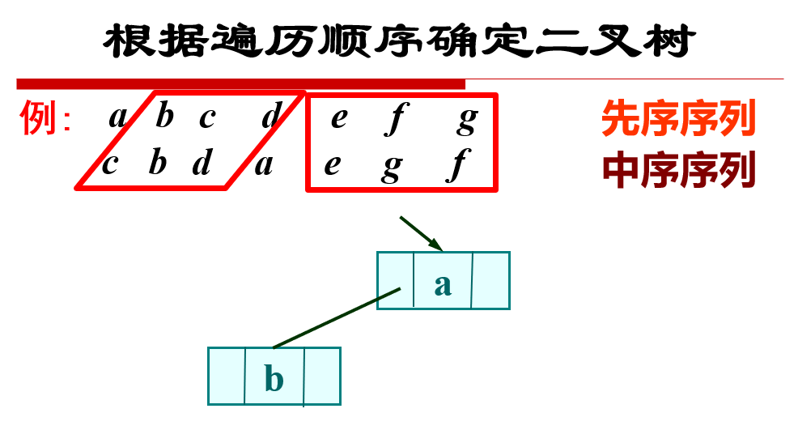
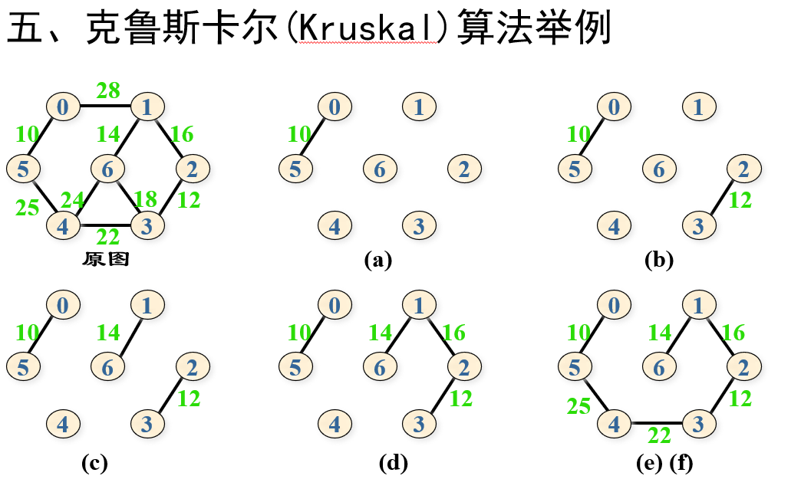
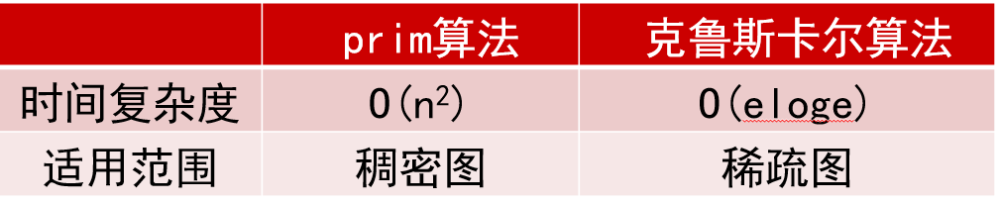
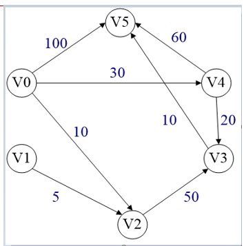
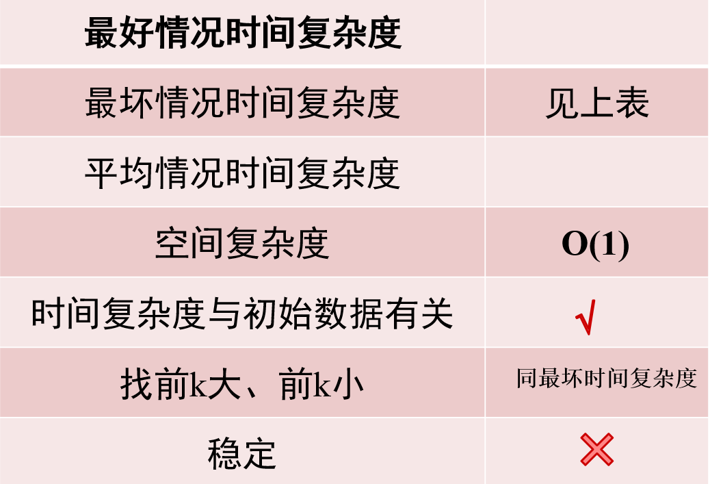

题目：
1 2 3 4 5 6 7 8 9 10 11 12 13 14 15 16 题目描述 给出顺序表的初始数据，实现顺序表的定义、创建、插入、删除与查找操作。 输入 测试次数t 每组测试数据格式如下： 第一行: 正整数n，后跟n个整数 第二行: 插入位置 插入元素 第三行: 删除位置 第四行: 删除元素 第五行: 查找元素 输出 对每个顺序表，首先输出建表后的顺序表。 插入、删除操作，操作成功，输出操作后的顺序表。操作不成功，输出ERROR。 查找操作，查找成功，输出:1 元素位置（位置从1开始）比较次数。查找不成功，输出:0 0 比较次数。
输入样例：
1 2 3 4 5 6 7 8 9 10 11 2 5 10 20 14 25 50 1 13 10 10 23 7 88 99 77 11 22 33 44 7 100 1 80 22
输出样例：
1 2 3 4 5 6 7 8 9 10 5 10 20 14 25 50 6 13 10 20 14 25 50 ERROR 5 13 20 14 25 50 0 0 6 7 88 99 77 11 22 33 44 8 88 99 77 11 22 33 100 44 7 99 77 11 22 33 100 44 ERROR 1 4 4
AC代码
1 2 3 4 5 6 7 8 9 10 11 12 13 14 15 16 17 18 19 20 21 22 23 24 25 26 27 28 29 30 31 32 33 34 35 36 37 38 39 40 41 42 43 44 45 46 47 48 49 50 51 52 53 54 55 56 57 58 59 60 61 62 63 64 65 66 67 68 69 70 71 72 73 74 75 76 77 78 79 80 81 82 83 84 85 86 87 88 89 90 91 92 93 94 #include <iostream> using namespace std;int t, len;int num[1000 ];void print () cout << len << ' ' ; for (int i = 1 ; i <= len; i++) { cout << num[i] << ' ' ; } cout << endl; } void insert (int i, int x) if (i > len + 1 ) { cout << "ERROR" << endl; return ; } len++; for (int j = len; j > i; j--) { num[j] = num[j - 1 ]; } num[i] = x; print (); } void delbyid (int id, int type) if (id > len || id < 1 ) { cout << "ERROR" << endl; return ; } for (int i = id; i < len; i++) { num[i] = num[i + 1 ]; } len--; if (type)print (); } void delbyvalue (int x) int cnt = 0 ; for (int i = 1 ; i <= len; i++) { if (num[i] == x)delbyid (i, 0 ), cnt++; } if (!cnt)cout << "ERROR" << endl; else print (); } void search (int x) int cnt = 0 ; num[0 ] = x; for (int i = len; i ; i--) { cnt++; if (num[i] == x && i) { cout << '1' << ' ' << i << ' ' << cnt << endl; return ; } } cnt++; cout << '0' << ' ' << '0' << ' ' << cnt << endl; } int main () cin >> t; while (t--) { cin >> len; for (int i = 1 ; i <= len; i++)cin >> num[i]; print (); int id, x; cin >> id >> x; insert (id, x); cin >> id >> x; delbyid (id, 1 ); delbyvalue (x); cin >> x; search (x); } return 0 ; }
题目：
1 2 3 4 5 6 7 8 9 10 11 12 13 14 15 16 17 18 19 20 21 22 23 24 25 用C++语言和类实现单链表，含头结点 属性包括：data数据域、next指针域 操作包括：插入、删除、查找 注意：单链表不是数组，所以位置从1开始对应首结点，头结点不放数据 输入 n 第1行先输入n表示有n个数据，接着输入n个数据 第2行输入要插入的位置和新数据 第3行输入要插入的位置和新数据 第4行输入要删除的位置 第5行输入要删除的位置 第6行输入要查找的位置 第7行输入要查找的位置 输出 n 数据之间用空格隔开， 第1行输出创建后的单链表的数据 每成功执行一次操作（插入或删除），输出执行后的单链表数据 每成功执行一次查找，输出查找到的数据 如果执行操作失败（包括插入、删除、查找等失败），输出字符串error，不必输出单链表
样例：
1 2 3 4 5 6 7 6 11 22 33 44 55 66 3 777 1 888 1 11 0 5
样例输出：
22 33 44 55 66 1 2 3 4 5 6 11 22 777 33 44 55 66 888 11 22 777 33 44 55 66 11 22 777 33 44 55 66 error error 44
AC代码：
1 2 3 4 5 6 7 8 9 10 11 12 13 14 15 16 17 18 19 20 21 22 23 24 25 26 27 28 29 30 31 32 33 34 35 36 37 38 39 40 41 42 43 44 45 46 47 48 49 50 51 52 53 54 55 56 57 58 59 60 61 62 63 64 65 66 67 68 69 70 71 72 73 74 75 76 77 78 79 80 81 82 83 84 85 86 87 88 89 90 91 92 93 94 95 96 97 98 99 100 101 102 103 104 105 106 107 108 109 110 111 112 113 114 115 116 117 118 #define _CRT_SECURE_NO_WARNINGS #include <iostream> using namespace std;class node { public : int data; node* next; node () { next = NULL ; } node (int i, node* p) :data (i), next (p) {}; }; class list { public : node* head; int len; list () { head = new node; len = 0 ; } ~list () { node* p, * q; p = head; while (p != NULL ) { q = p; p = p->next; delete q; } len = 0 ; head = NULL ; } node* index (int i) ; int insert (int i, int item) int del (int i) void display () { node* p; p = head->next; while (p) { cout << p->data << ' ' ; p = p->next; } cout << endl; } }; node* list::index (int i) node* p; int k; if (i < 0 )return NULL ; for (p = head, k = 0 ; p && k < i; k++) { p = p->next; } return p; } int list::insert (int i, int item) node* p = index (i - 1 ); if (!p)return 0 ; node* q = new node (item, p->next); p->next = q; return 1 ; } int list::del (int i) node* p = index (i - 1 ); if (!p || !p->next)return 0 ; node* q = p->next; p->next = q->next; delete q; return 1 ; } int main () int n, x; list li; cin >> n; for (int i = 1 ; i <= n; i++) { cin >> x; li.insert (i,x); } li.display (); int id; for (int i = 0 ; i < 2 ; i++) { cin >> id >> x; if (li.insert (id, x))li.display (); else cout << "error\n" ; } for (int i = 0 ; i < 2 ; i++) { cin >> id; if (li.del (id))li.display (); else cout << "error\n" ; } for (int i = 0 ; i < 2 ; i++) { cin >> id; if (li.index (id) != li.head && li.index (id) != NULL )cout << li.index (id)->data << endl; else cout << "error\n" ; } return 0 ; }
题目：
1 2 3 4 5 6 7 8 9 给定n个整数，按输入顺序建立单链表，删除其中的重复数字，输出结果链表。（要求不可以构建新结点，不可以定义新链表。在原链表上删除。） 输入 测试次数t 每组测试数据一行： n（表示有n个整数），后跟n个数字 输出 对每组测试数据，输出删除重复数字后的结果链表表长和每个元素，具体格式见样例。
样例：
1 2 3 4 3 10 1 2 3 4 1 2 10 20 30 20 5 1 1 1 1 1 6 20 22 22 22 22 20
样例输出：
1 2 3 7: 1 2 3 4 10 20 30 1: 1 2: 20 22
AC代码：
1 2 3 4 5 6 7 8 9 10 11 12 13 14 15 16 17 18 19 20 21 22 23 24 25 26 27 28 29 30 31 32 33 34 35 36 37 38 39 40 41 42 43 44 45 46 47 48 49 50 51 52 53 54 55 56 57 58 59 60 61 62 63 64 65 66 67 68 69 70 71 72 73 74 75 76 77 78 79 80 81 82 83 84 85 86 87 88 89 90 91 92 93 94 95 96 97 98 99 100 101 102 103 104 105 106 107 108 109 110 111 112 113 114 115 116 117 118 119 120 121 122 123 124 125 126 127 128 129 130 131 132 133 134 135 #define _CRT_SECURE_NO_WARNINGS #include <iostream> using namespace std;class node { public : int data; node* next; node () { next = NULL ; } node (int i, node* p) :data (i), next (p) {}; }; class list { public : node* head; int len; list () { head = new node; len = 0 ; } ~list () { node* p, * q; p = head; while (p != NULL ) { q = p; p = p->next; delete q; } len = 0 ; head = NULL ; } node* index (int i) ; int insert (int i, int item) int del (int i) bool delsame () void display () { node* p; p = head->next; cout << len << ":" ; while (p) { cout << ' ' << p->data; p = p->next; } cout << endl; } }; node* list::index (int i) node* p; int k; if (i < 0 )return NULL ; for (p = head, k = 0 ; p && k < i; k++) { p = p->next; } return p; } int list::insert (int i, int item) node* p = index (i - 1 ); if (!p)return 0 ; node* q = new node (item, p->next); p->next = q; len++; return 1 ; } int list::del (int i) node* p = index (i - 1 ); if (!p || !p->next)return 0 ; node* q = p->next; p->next = q->next; delete q; len--; return 1 ; } bool list::delsame () bool flag = 0 ; node* p = head->next; while (p) { node* next = p->next; node* now = p; while (next) { if (p->data == next->data) { now->next = next->next; node* tmp = next; next = next->next; delete tmp; len--; } else { now = now->next, next = next->next; } } p = p->next; } if (flag)return 1 ; else return 0 ; } int main () int n, x, t; cin >> t; while (t--) { cin >> n; list li; for (int i = 1 ; i <= n; i++) { cin >> x; li.insert (i, x); } while (li.delsame ()); li.display (); } return 0 ; }
题目：
1 2 3 4 5 6 7 8 9 10 11 12 13 14 15 16 用C++实现含头结点的单链表，然后实现单链表的两个结点交换位置。 注意不能简单交换两个结点包含数据，必须通过修改指针来实现两个结点的位置交换 交换函数定义可以参考： swap（int pa, int pb) //pa和pb表示两个结点在单链表的位置序号 swap (ListNode * p, ListNode * q) //p和q表示指向两个结点的指针 输入 第1行先输入n表示有n个数据，接着输入n个数据 第2行输入要交换的两个结点位置 第3行输入要交换的两个结点位置 输出 第一行输出单链表创建后的所有数据，数据之间用空格隔开 第二行输出执行第1次交换操作后的单链表数据，数据之间用空格隔开 第三行输出执行第2次交换操作后的单链表数据，数据之间用空格隔开 如果发现输入位置不合法，输出字符串error，不必输出单链表
样例：
1 2 3 4 5 11 22 33 44 55 1 4 2 6
样例输出：
1 2 3 11 22 33 44 55 44 22 33 11 55 error
AC代码：
1 2 3 4 5 6 7 8 9 10 11 12 13 14 15 16 17 18 19 20 21 22 23 24 25 26 27 28 29 30 31 32 33 34 35 36 37 38 39 40 41 42 43 44 45 46 47 48 49 50 51 52 53 54 55 56 57 58 59 60 61 62 63 64 65 66 67 68 69 70 71 72 73 74 75 76 77 78 79 80 81 82 83 84 85 86 87 88 89 90 91 92 93 94 95 96 97 98 99 100 101 102 103 104 105 106 107 108 109 110 111 112 113 114 115 116 117 118 119 120 121 122 123 124 125 126 127 128 129 #define _CRT_SECURE_NO_WARNINGS #include <iostream> using namespace std;class node { public : int data; node* next; node () { next = NULL ; } node (int i, node* p) :data (i), next (p) {}; }; class list { public : node* head; int len; list () { head = new node; len = 0 ; } ~list () { node* p, * q; p = head; while (p != NULL ) { q = p; p = p->next; delete q; } len = 0 ; head = NULL ; } node* index (int i) ; int insert (int i, int item) int del (int i) int swp (int pa, int pb) void display () { node* p; p = head->next; while (p) { cout << p->data << ' ' ; p = p->next; } cout << endl; } }; node* list::index (int i) node* p; int k; if (i < 0 )return NULL ; for (p = head, k = 0 ; p && k < i; k++) { p = p->next; } return p; } int list::insert (int i, int item) node* p = index (i - 1 ); if (!p)return 0 ; node* q = new node (item, p->next); p->next = q; len++; return 1 ; } int list::del (int i) node* p = index (i - 1 ); if (!p || !p->next)return 0 ; node* q = p->next; p->next = q->next; delete q; return 1 ; } int list::swp (int pa, int pb) if (pa > len || pb > len || pa <= 0 || pb <= 0 )return 0 ; if (pa > pb)swap (pa, pb); int pre1, pre2, nxt1, nxt2; pre1 = pa - 1 , pre2 = pb - 1 , nxt1 = pa + 1 , nxt2 = pb + 1 ; node* p1, * p2, * n1, * n2, * ppa, * ppb; p1 = index (pre1), p2 = index (pre2), n1 = index (nxt1), n2 = index (nxt2); ppa = index (pa), ppb = index (pb); if (pb == pa + 1 ) { p1->next = ppb; ppb->next = ppa; ppa->next = n2; } else { ppa->next = n2, p2->next = ppa; ppb->next = n1, p1->next = ppb; } return 1 ; } int main () int n, x; list li; cin >> n; for (int i = 1 ; i <= n; i++) { cin >> x; li.insert (i, x); } li.display (); for (int i = 0 ; i < 2 ; i++) { int a, b; cin >> a >> b; if (li.swp (a, b))li.display (); else cout << "error\n" ; } return 0 ; }
题目：
1 2 3 4 5 6 7 8 9 10 11 12 13 14 15 16 17 18 19 20 假设某校有20间宿舍，宿舍编号101，102，...,120。每间只住一名学生。初始部分宿舍已用。用两个链表（已用宿舍链表和可用宿舍链表）维护宿舍的管理，实现宿舍分配、宿舍交回。 约定已用宿舍链表按宿舍号升序链接。初始可用宿舍链表也按宿舍号升序链接。 宿舍分配从可用宿舍链表中摘取第一间宿舍分配给学生。学生交回的宿舍挂在可用宿舍链表最后。 备注：使用list容器或静态链表。不用考虑宿舍分配和交回不成功的情况。 初始宿舍状态，第一行输入n，表示已用宿舍n间 后跟n行数据，每行格式为：学生姓名 宿舍号 操作次数m，后跟m行操作，操作格式如下： assign 学生 //为学生分配宿舍，从可用宿舍链表头摘取一间宿舍， //按宿舍号升序挂在已用宿舍链表中。 return 宿舍号 //学生退宿舍，删除已用宿舍链表中对应结点， //挂在可用宿舍链表尾部。 display_free //输出可用宿舍链表信息。 display_used //输出已用宿舍链表信息。 display_free依次输出当前可用宿舍链表中的宿舍号，具体格式见样例。 display_used依次输出当前已用宿舍链表中的宿舍号，具体格式见样例。
输入:
1 2 3 4 5 6 7 8 9 10 11 12 13 14 15 5 李明 103 张三 106 王五 107 钱伟 112 章立 118 8 assign 李四 assign 赵六 return 118 return 101 assign 马山 display_used assign 林立 display_free
输出：
1 2 赵六(102)-李明(103)-马山(104)-张三(106)-王五(107)-钱伟(112) 108-109-110-111-113-114-115-116-117-119-120-118-101
AC代码：
1 2 3 4 5 6 7 8 9 10 11 12 13 14 15 16 17 18 19 20 21 22 23 24 25 26 27 28 29 30 31 32 33 34 35 36 37 38 39 40 41 42 43 44 45 46 47 48 49 50 51 52 53 54 55 56 57 58 59 60 61 62 63 64 65 66 67 68 69 70 71 72 73 74 75 76 77 78 79 80 81 82 83 84 85 86 87 88 89 90 91 92 93 94 95 96 97 98 99 100 101 102 103 104 105 106 107 108 109 110 111 112 113 #define _CRT_SECURE_NO_WARNINGS #include <iostream> #include <list> using namespace std;int cnt = 0 ;struct node { string name; int id; }; int main () list<node>li; node a; for (int i = 1 ; i <= 20 ; i++) { a.name = "0" , a.id = 100 + i; li.push_back (a); } int n, m, id; string name, op; cin >> n; for (int i = 0 ; i < n; i++) { cin >> name >> id; list<node>::iterator it = li.begin (); for (int i = 0 ; i < 20 ; i++) { if (it->id == id) { it->name = name; cnt++; break ; } it++; } } cin >> m; while (m--) { cin >> op; if (op == "assign" ) { cin >> name; list<node>::iterator it = li.begin (); for (int i = 0 ; i < 20 ; i++) { if (it->name=="0" ) { it->name = name; cnt++; break ; } it++; } } else if (op == "return" ) { node a; cin >> id; list<node>::iterator it = li.begin (); for (int i = 0 ; i < 20 ; i++) { if (id == it->id) { a.name = "0" , a.id = it->id; li.push_back (a); li.erase (it); cnt--; break ; } it++; } } else if (op == "display_free" ) { list<node>::iterator it = li.begin (); int cntf = 0 ; for (int i = 0 ; i < 20 ; i++) { if (it->name == "0" ) { cout << it->id; if (cntf == 19 - cnt)cout << endl; else cout << '-' ; cntf++; } it++; } } else { int cntt = 0 ; list<node>::iterator it = li.begin (); for (int i = 0 ; i < 20 ; i++) { if (it->name != "0" ) { cout << it->name << '(' << it->id << ')' ; if (cntt == cnt - 1 )cout << endl; else cout << '-' ; cntt ++ ; } it++; } } } return 0 ; }
序号访问 查找 插入 删除
顺序表
O(1)
O(N)
O(N)
O(N)
链表
O(N)
O(N)
O(1)
O(1)
线性链表也可以采用静态数组实现
与顺序表有两点不同：
1、每个元素包括数据域和指针域
2、元素的逻辑关系由指针（下标，游标）确定
1、静态链表暂时不用结点，链成一个备用链表。
2、插入时，从备用链表中申请结点。
3、删除结点时，将结点放入备用链表。
初始化：
1 2 3 4 5 6 7 8 9 for (i=0 ;i<MAXSIZE-1 ;i++) list[i].next =i+1 ; list[MAXSIZE-1 ].next=0 list[0 ].next = 2 ; list[1 ].next = 0 ;
头插法：
1 2 3 4 5 6 7 8 9 10 k = list[0 ].next; list[0 ].next=list[k].next; list[k].data = ‘z’; list[k].next=list[1 ].next; list[1 ].next=k;
删除：
1 2 3 4 5 6 7 List[q].next=list[p].next; List[p].next=list[0 ].next; List[0 ].next=p;
题目:
1 2 3 4 5 6 7 8 9 10 11 12 13 14 15 16 17 18 19 20 21 22 23 24 25 26 C++中已经自带堆栈对象stack，无需编写堆栈操作的具体实现代码。 本题目主要帮助大家熟悉stack对象的使用，然后实现字符串的逆序输出 输入一个字符串，按字符按输入顺序压入堆栈，然后根据堆栈后进先出的特点，做逆序输出 stack类使用的参考代码 n包含头文件<stack>：#include <stack> n创建一个堆栈对象s（注意stack是模板类）：stack <char> s;//堆栈的数据类型是字符型 n把一个字符ct压入堆栈：s.push(ct); n把栈顶元素弹出：s.pop(); n获取栈顶元素，放入变量c2：c2 =s.top(); n判断堆栈是否空：s.empty()，如果为空则函数返回true，如果不空则返回false 输入 第一行输入t，表示有t个测试实例 第二起，每一行输入一个字符串，注意字符串不要包含空格 字符串的输入可以考虑一下代码： #include <string> int main() { string str; Int len; cin>>str; //把输入的字符串保存在变量str中 len = str.length() //获取输入字符串的长度 } 输出 每行逆序输出每一个字符串
样例：
样例输出：
AC代码：
1 2 3 4 5 6 7 8 9 10 11 12 13 14 15 16 17 18 19 20 21 22 23 24 25 26 27 28 29 #define _CRT_SECURE_NO_WARNINGS #include <iostream> #include <stack> using namespace std;int main () stack<char >s; int n; cin >> n; while (n--) { string str; cin >> str; for (int i = 0 ; i < str.size (); i++) { s.push (str[i]); } while (!s.empty ()) { char x; x = s.top (); cout << x; s.pop (); } cout << endl; } return 0 ; }
题目:
1 2 3 4 5 6 7 8 9 10 11 12 13 使用C++的STL堆栈对象，编写程序实现行编辑功能。行编辑功能是：当输入#字符，则执行退格操作；如果无字符可退就不操作，不会报错 本程序默认不会显示#字符，所以连续输入多个#表示连续执行多次退格操作 每输入一行字符打回车则表示字符串结束 注意：必须使用堆栈实现，而且结果必须是正序输出 输入 第一行输入一个整数t，表示有t行字符串要输入 第二行起输入一行字符串，共输入t行 输出 每行输出最终处理后的结果，如果一行输入的字符串经过处理后没有字符输出，则直接输出NULL
样例：
1 2 3 4 5 4 chinaa# sb#zb#u ##shen###zhen### chi##a#####
样例输出：
AC代码：
1 2 3 4 5 6 7 8 9 10 11 12 13 14 15 16 17 18 19 20 21 22 23 24 25 26 27 28 29 30 31 32 33 34 35 36 37 38 39 40 41 42 43 44 45 46 47 48 #define _CRT_SECURE_NO_WARNINGS #include <iostream> #include <stack> using namespace std;int main () stack<char >s1, s2; int n; cin >> n; while (n--) { string str; cin >> str; for (int i = 0 ; i < str.size (); i++) { if (str[i] != '#' ) { s1. push (str[i]); } else { if (!s1. empty ()) { s1. pop (); } } } if (s1. empty ())cout << "NULL" << endl; else { while (!s1. empty ()) { char x = s1. top (); s2. push (x); s1. pop (); } while (!s2. empty ()) { char x = s2. top (); cout << x; s2. pop (); } cout << endl; } } return 0 ; }
题目:
1 2 3 4 5 6 7 8 9 10 11 12 13 14 15 处理表达式过程中需要对括号匹配进行检验，括号匹配包括三种：“(”和“)”，“[”和“]”，“{”和“}”。例如表达式中包含括号如下： ( ) [ ( ) ( [ ] ) ] { } 1 2 3 4 5 6 7 8 9 10 11 12 从上例可以看出第1和第2个括号匹配，第3和第10个括号匹配，4和5匹配，6和9匹配，7和8匹配，11和12匹配。从中可以看到括号嵌套的的情况是比较复杂的，使用堆栈可以很方便的处理这种括号匹配检验，可以遵循以下规则： 1、 当接收第1个左括号，表示新的一组匹配检查开始；随后如果连续接收到左括号，则不断进堆栈。 2、 当接受第1个右括号，则和最新进栈的左括号进行匹配，表示嵌套中1组括号已经匹配消除 3、 若到最后，括号不能完全匹配，则说明输入的表达式有错 建议使用C++自带的stack对象来实现 输入 第一行输入一个t，表示下面将有t组测试数据。接下来的t行的每行输入一个表达式，表达式只考虑英文半角状态输入，无需考虑中文全角输入 输出 对于每一行的表达式，检查括号是否匹配，匹配则输入ok，不匹配则输出error
样例1：
1 2 3 2 (a+b)[4*5+(-6)] [5*8]/{(a+b)-6
样例1输出：
样例2：
1 2 3 4 5 4 {1+1}[3+3](5+5) ((({{{}}}))) ((({{{}}})))([[]]) ((({{{5+5}}})))([[]])(1+1)
样例2输出：
AC代码：
1 2 3 4 5 6 7 8 9 10 11 12 13 14 15 16 17 18 19 20 21 22 23 24 25 26 27 28 29 30 31 32 33 34 35 36 37 38 39 40 41 42 43 44 45 46 47 48 49 50 #define _CRT_SECURE_NO_WARNINGS #include <iostream> #include <stack> using namespace std;int main () int n; stack<char >op; cin >> n; while (n--) { string s; cin >> s; for (int i = 0 ; i < s.size (); i++) { if (s[i] == '(' || s[i] == '[' || s[i] == '{' )op.push (s[i]); else if (s[i] == ')' ) { if (op.top () != '(' ) { cout << "error\n" ; break ; } else op.pop (); } else if (s[i] == ']' ) { if (op.top () != '[' ) { cout << "error\n" ; break ; } else op.pop (); } else if (s[i] == '}' ) { if (op.top () != '{' ) { cout << "error\n" ; break ; } else op.pop (); } } if (op.empty ())cout << "ok\n" ; else cout << "error\n" ; } return 0 ; }
相当于用栈来模拟dfs的过程
题目:
1 2 3 4 5 6 7 8 9 10 11 12 13 14 15 给出一个N*N的迷宫矩阵示意图，从起点[0,0]出发，寻找路径到达终点[N-1, N-1] 要求使用堆栈对象来实现，具体算法参考课本3.2.4节51页 输入 第一行输入t，表示有t个迷宫 第二行输入n，表示第一个迷宫有n行n列 第三行起，输入迷宫每一行的每个方格的状态，0表示可通过，1表示不可通过 输入n行 以此类推输入下一个迷宫 输出 逐个输出迷宫的路径 如果迷宫不存在路径，则输出no path并回车 如果迷宫存在路径，将路径中每个方格的x和y坐标输出，从起点到终点，每输出四个方格就换行，最终以单词END结尾，具体格式参考示范数据 输出的代码参考如下：
1 2 3 4 5 6 7 8 9 10 11 12 13 14 15 16 17 if (!path.empty ()){ i=0 ; while (!path1. empty ()){cpos = path1. top (); if ( (++i)%4 == 0 )cout<<'[' <<cpos.xp<<',' <<cpos.yp<<']' <<"--" <<endl; else cout<<'[' <<cpos.xp<<',' <<cpos.yp<<']' <<"--" ; path1. pop (); } cout<<"END" <<endl; } else cout<<"no path" <<endl;
样例1：
1 2 3 4 5 6 7 8 9 10 11 12 13 14 15 16 17 18 2 8 0 0 0 1 1 1 1 1 1 0 0 0 1 0 0 1 1 0 0 0 1 0 0 0 1 1 0 0 0 0 0 1 0 0 1 1 0 1 1 0 0 0 0 0 0 0 1 1 1 1 1 1 1 0 0 1 0 0 0 0 1 0 0 0 7 0 0 0 1 1 1 1 1 0 0 1 0 0 1 1 0 0 1 0 0 0 1 1 0 0 0 0 1 0 0 1 1 0 1 0 1 0 0 0 0 1 0 0 0 0 0 1 1 0
样例1输出：
1 2 3 4 5 [0,0]--[0,1]--[0,2]--[1,2]-- [1,3]--[2,3]--[3,3]--[3,4]-- [4,4]--[5,4]--[5,5]--[6,5]-- [6,6]--[7,6]--[7,7]--END no path
样例2：
1 2 3 4 5 6 7 8 9 10 11 12 13 14 15 16 17 18 19 20 21 22 23 24 25 26 27 2 12 0 1 1 1 1 1 1 1 1 1 1 0 0 0 0 0 0 0 0 0 0 0 0 1 0 1 1 1 1 0 1 1 1 1 0 1 1 0 0 0 0 0 0 0 0 0 0 1 0 0 1 1 1 1 0 1 0 1 1 0 0 1 1 1 1 1 1 1 1 1 0 0 0 0 0 0 0 0 0 0 0 0 0 1 1 1 1 1 0 1 1 1 1 1 0 1 1 1 1 1 1 0 1 1 1 1 0 1 1 1 1 1 1 0 0 0 0 0 0 0 1 1 1 1 1 1 1 1 0 1 1 1 0 1 0 1 0 1 0 1 0 0 0 0 12 0 1 1 1 1 1 1 1 1 1 1 0 0 0 0 0 0 0 0 0 0 0 0 1 0 1 1 1 1 0 1 1 1 1 0 1 1 0 0 0 0 0 0 0 0 0 0 1 0 0 1 1 1 1 0 1 0 1 1 0 0 1 1 1 1 1 1 1 1 1 0 0 0 0 0 0 0 0 0 0 0 0 1 1 1 1 1 1 0 1 1 1 1 1 0 1 1 1 1 1 1 0 1 1 1 1 0 1 1 1 1 1 1 0 0 0 0 0 0 0 1 1 1 1 1 1 1 1 0 1 1 1 0 1 0 1 0 1 0 1 0 0 0 0
样例2输出：
1 2 3 4 5 6 7 8 9 10 11 12 13 [0,0]--[1,0]--[1,1]--[1,2]-- [1,3]--[1,4]--[1,5]--[1,6]-- [1,7]--[1,8]--[1,9]--[1,10]-- [2,10]--[3,10]--[3,9]--[3,8]-- [3,7]--[3,6]--[3,5]--[3,4]-- [3,3]--[3,2]--[3,1]--[4,1]-- [4,0]--[5,0]--[6,0]--[6,1]-- [6,2]--[6,3]--[6,4]--[6,5]-- [6,6]--[6,7]--[6,8]--[6,9]-- [6,10]--[7,10]--[8,10]--[9,10]-- [9,9]--[9,8]--[10,8]--[11,8]-- [11,9]--[11,10]--[11,11]--END no path
AC代码：
1 2 3 4 5 6 7 8 9 10 11 12 13 14 15 16 17 18 19 20 21 22 23 24 25 26 27 28 29 30 31 32 33 34 35 36 37 38 39 40 41 42 43 44 45 46 47 48 49 50 51 52 53 54 55 56 57 58 59 60 61 62 63 64 65 66 67 68 #define _CRT_SECURE_NO_WARNINGS #include <iostream> #include <stack> using namespace std;int dir[4 ][2 ] = { {0 ,1 },{1 ,0 },{0 ,-1 },{-1 ,0 } };bool vis[100 ][100 ];int mp[100 ][100 ];int main () int t, n; cin >> t; while (t--) { stack<pair<int , int >>path, path1; cin >> n; for (int i = 0 ; i < n + 2 ; i++)mp[0 ][i] = mp[i][0 ] = mp[n + 1 ][i] = mp[i][n + 1 ] = 1 ; for (int i = 1 ; i <= n; i++) for (int j = 1 ; j <= n; j++) cin >> mp[i][j]; path.push (make_pair (1 , 1 )); while (!path.empty ()) { vis[1 ][1 ] = 1 ; pair<int , int >pos = path.top (); if (pos.first == n && pos.second == n)break ; int cnt = 0 ; for (int i = 0 ; i < 4 ; i++) { pair<int , int >tmp = path.top (); int xx = tmp.first + dir[i][0 ], yy = tmp.second + dir[i][1 ]; if (!mp[xx][yy] && !vis[xx][yy]) { path.push (make_pair (xx, yy)), vis[xx][yy] = 1 ; cnt++; break ; } } if (!cnt)path.pop (); } if (!path.empty ()) { while (!path.empty ()) { pair<int , int >tmp = path.top (); tmp.first--, tmp.second--; path1. push (tmp); path.pop (); } int i = 0 ; pair<int ,int > cpos; while (!path1. empty ()) { cpos = path1. top (); if ((++i) % 4 == 0 ) cout << '[' << cpos.first << ',' << cpos.second << ']' << "--" << endl; else cout << '[' << cpos.first << ',' << cpos.second << ']' << "--" ; path1. pop (); } cout << "END" << endl; } else cout << "no path" << endl; } }
栈的链式存储结构称为链栈，它是运算受限的单链表，插入和删除操作仅限制在表头位置上进行。
链栈相当于没有头结点的链表
链栈在表头进行入栈，出栈操作，不需要头结点。
栈顶指针即头指针 。
使用符号栈和操作数栈
1 2 3 4 5 6 7 8 9 10 11 12 计算步骤：假设操作数栈NS和运算符栈OS。 1）依次读取表达式，若为操作数，则直接进NS栈； 若为运算符(记为op2)，转（2） 2）将op2与运算符栈顶元素(记为op1)按P53的表3.13 比较优先权，并按如下规则进行操作： 若prec(op1) < prec(op2), 则op2入OS; 若prec(op1) = prec(op2), 则op1出栈，脱括号，回到 1）； 若prec(op1) > prec(op2), 则NS出2个操作数num2, num1，op1出栈，计算num2 op1 num2，结果入NS；回到 2) 。 3）重复1）、2）直至整个表达式求值完毕。
两个计算示例：
1 2 3 4 表达式a+b*(c-d)-e/f的 (1) 前缀表达式(波兰式)：-+a*b-cd/ef (2) 中缀表达式：a+b*(c-d)-e/f (3) 后缀表达式(逆波兰式): abcd-*+ef/-
题目:
1 2 3 4 5 6 7 8 9 10 11 12 13 14 15 16 17 18 使用C++自带的stack栈模板来实现四则运算表达式求值 算法描述参考第3.2.5节 算法伪代码参考P53-54的算法3.4 例如 1. Push (OPTR, '#');表示把字符#压入堆栈OPTR中，转换成c++代码就是OPTR.push('#'); 2. Pop(OPND, a); 表示弹出栈OPND的栈顶元素，并把栈顶元素放入变量a中。因此改成c++代码是两个操作：a = OPND.top(); OPND.pop() 3. a = GetTop(OPND)表示获取栈OPND的栈顶元素，转成c++代码就是： a = OPND.top(); 大家主要是改造表达式求值函数EvaluateExpression的代码 输入 第一个输入t，表示有t个实例 第二行起，每行输入一个表达式，每个表达式末尾带#表示结束 输入t行 输出 每行输出一个表达式的计算结果，计算结果用浮点数（含2位小数）的格式表示 参考代码如下：
1 2 3 4 5 6 7 8 #include <iostream> #include <iomanip> using namespace std;int main () double temp = 12.345678 cout<<fixed<<setprecision (2 )<<temp<<endl; }
样例：
1 2 3 2 1+2*3-4/5# (66+(((11+22)*2-33)/3+6)*2)-45.6789#
样例输出：
AC代码：
1 2 3 4 5 6 7 8 9 10 11 12 13 14 15 16 17 18 19 20 21 22 23 24 25 26 27 28 29 30 31 32 33 34 35 36 37 38 39 #include <iostream> #include <string> #include <cstring> #include <stack> #include <iomanip> using namespace std;#define OPSETSIZE 7 unsigned char Prior[7 ][7 ] = { '>' ,'>' ,'<' ,'<' ,'<' ,'>' ,'>' , '>' ,'>' ,'<' ,'<' ,'<' ,'>' ,'>' , '>' ,'>' ,'>' ,'>' ,'<' ,'>' ,'>' , '>' ,'>' ,'>' ,'>' ,'<' ,'>' ,'>' , '<' ,'<' ,'<' ,'<' ,'<' ,'=' ,' ' , '>' ,'>' ,'>' ,'>' ,' ' ,'>' ,'>' , '<' ,'<' ,'<' ,'<' ,'<' ,' ' ,'=' }; char OPSET[OPSETSIZE]={'+' , '-' , '*' , '/' ,'(' , ')' , '#' }; double Operate (double a, unsigned char theta, double b) bool In (char Test, char * TestOp) char precede (char Aop, char Bop) double EvaluateExpression (string MyExp) char > OPTR; stack<double > OPND; char TempData[20 ]; double Data,a,b, r; char theta, c,x,Dr[2 ]; OPTR.push ('#' ); strcpy (TempData,"\0" ); int i=0 ; c = MyExp[i];
1 2 3 4 5 6 7 8 9 10 11 12 13 14 15 16 17 18 19 20 21 22 23 24 25 26 27 28 29 30 31 32 33 34 35 36 37 38 39 40 41 42 43 44 45 46 47 48 49 50 51 52 53 54 55 56 57 58 59 60 61 62 63 64 65 66 67 68 69 70 71 72 73 74 75 76 77 78 79 80 81 int cnt = 0 ; for (int i = 0 ; i < MyExp.size (); i++) { theta = OPTR.top (); c = MyExp[i]; if (c >= '0' && c <= '9' || c == '.' )TempData[cnt++] = c; else { if (cnt) { double tmp = TempData[0 ] - '0' ; TempData[cnt] = 'x' ; bool xs = 0 ; int p = 0 ; for (int j = 1 ; j < 20 ; j++) { if (TempData[j] == 'x' ) { for (int k = 0 ; k < p; k++)tmp /= 10 ; strcpy (TempData, "\0" ); cnt = 0 ; break ; } if (TempData[j] == '.' ) { xs = 1 ; continue ; } if (xs)p++; tmp = tmp * 10 + TempData[j] - '0' ; } OPND.push (tmp); } if (precede (theta, c) == '<' )OPTR.push (c); else if (precede (theta, c) == '>' ) { x = OPTR.top (); OPTR.pop (); b = OPND.top (); OPND.pop (); a = OPND.top (); OPND.pop (); r = Operate (a, x, b); OPND.push (r); if (c!='#' && c != ')' )OPTR.push (c); theta = OPTR.top (); while (c == ')' && theta != '(' ) { x = OPTR.top (); OPTR.pop (); b = OPND.top (); OPND.pop (); a = OPND.top (); OPND.pop (); r = Operate (a, x, b); OPND.push (r); theta = OPTR.top (); } if (precede (theta, c) == '=' )OPTR.pop (); } if (c == '#' ) { while (!OPTR.empty ()) { x = OPTR.top (); OPTR.pop (); b = OPND.top (); OPND.pop (); a = OPND.top (); OPND.pop (); r = Operate (a, x, b); OPND.push (r); theta = OPTR.top (); if (precede (theta, c) == '=' )OPTR.pop (); } } } } return OPND.top ();
1 2 3 4 5 6 7 8 9 10 11 12 13 14 15 16 17 18 19 20 21 22 23 24 25 26 27 double Operate (double a, unsigned char theta, double b) if (theta == '+' )return a + b; else if (theta == '-' )return a - b; else if (theta == '*' )return a * b; else if (theta == '/' )return a / b; } bool In (char Test, char * TestOp) for (int i = 0 ; i < 7 ; i++) { if (Test == OPSET[i])return true ; } return false ; } char precede (char Aop, char Bop) int aid, bid; for (int i = 0 ; i < 7 ; i++) { if (Aop == OPSET[i])aid = i; if (Bop == OPSET[i])bid = i; } return Prior[aid][bid]; }
1 2 3 4 5 6 7 8 9 10 11 12 13 14 15 int main () int t; double result; cin>>t; while (t--) { cin>>Exp; result=EvaluateExpression (Exp); cout<<fixed<<setprecision (2 )<<result<<endl; } return 0 ; }
循环队列采用一组地址连续的存储单元
将整个队列的存储单元首尾相连
循环队列遍历：
1 2 3 4 if (i+1 ==MAXQSIZE) i=0 ; else i++;
或更加简便的
判断循环队列的空与满
对循环队列而言，无法通过front==rear来判断队列“空”还是“满”。
对于循环队列来说，队列空与满都可能出现front==rear
解决方法：
循环队列的各操作语句：
入队：
1 2 3 base[rear] = e; rear = (rear+`1 ) % MaxSize;
出队：
1 2 3 e = base[rear]; front = (front+1 ) % MaxSize;
队空:
队满：
1 (rear+1 ) % MaxSize == front;
队列元素数：
1 (rear - front + MaxSize) % MaxSize;
题目:
1 2 3 4 5 6 7 8 9 10 11 12 13 14 15 16 17 18 19 20 21 22 在银行营业大厅共服务3种客户，类型为A\B\C，大厅分别设置了3个窗口分别服务三种客户，即每个窗口只服务一种客户。现有一批客户来银行办理业务，每个客户都有类型和办理业务时间。每个窗口按照客户到来的顺序进行服务。 编程实现它们的办理流程，请使用C++自带的queue必须使用队列实现，其他方法0分！ 队列queue的用法如下： 1.包含头文件：#include <queue> 2.定义一个整数队列对象：queue<int> myQe; 3.定义一个整数队列对象数组：queue<int> myQA[10]; 4.入队操作：myQe.push(itemp); //把整数itemp进入队列 5.出队操作：myQe.pop(); //把队头元素弹出队列，注意本操作不获取队头元素 6.获取队头元素： itemp = myQe.front(); // 把队头元素放入itemp中，注意本操作不弹出元素 7.判断队列是否为空：myQe.empty();//队列空则返回true，不空则返回false 输入 第一行输入先输入n表示客户数量 第二行输入每个客户的类型，数据之间用用空格隔开 第三行输入每个客户的办理时间，数据之间用用空格隔开 输出 第一行输出A类客户的平均办理时间 第二行输出B类客户的平均办理时间 第三行输出C类客户的平均办理时间
样例：
1 2 3 8 A B C B C A A A 10 20 30 40 50 60 70 80
样例输出：
AC代码：
1 2 3 4 5 6 7 8 9 10 11 12 13 14 15 16 17 18 19 20 21 22 23 24 25 26 27 28 29 30 31 32 33 34 35 36 37 38 39 40 41 42 #define _CRT_SECURE_NO_WARNINGS #include <iostream> #include <queue> using namespace std;int main () queue<int >q[3 ]; int n; cin >> n; char * tp = new char [n]; int * t = new int [n]; for (int i = 0 ; i < n; i++) { cin >> tp[i]; } for (int i = 0 ; i < n; i++) { cin >> t[i]; } for (int i = 0 ; i < n; i++) { if (tp[i] == 'A' )q[0 ].push (t[i]); else if (tp[i] == 'B' )q[1 ].push (t[i]); else q[2 ].push (t[i]); } for (int i = 0 ; i < 3 ; i++) { int sum = 0 ; int siz = q[i].size (); while (!q[i].empty ()) { sum += q[i].front (); q[i].pop (); } sum /= siz; cout << sum << endl; } delete []tp; delete []t; return 0 ; }
题目:
1 2 3 4 5 6 7 8 9 10 假设银行有K个窗口提供服务，窗口前设一条黄线，所有顾客按到达时间在黄线后排成一条长龙。当有窗口空闲时，下一位顾客即去该窗口处理事务。当有多个窗口可选择时，假设顾客总是选择编号最小的窗口。 本题要求输出前来等待服务的N位顾客的平均等待时间、最长等待时间、最后完成时间，并且统计每个窗口服务了多少名顾客。 输入 输入第1行给出正整数N（≤1000），为顾客总人数；随后N行，每行给出一位顾客的到达时间T和事务处理时间P，并且假设输入数据已经按到达时间先后排好了顺序；最后一行给出正整数K（≤10），为开设的营业窗口数。这里假设每位顾客事务被处理的最长时间为60分钟。 输出 在第一行中输出平均等待时间（输出到小数点后1位）、最长等待时间、最后完成时间，之间用1个空格分隔，行末不能有多余空格。 在第二行中按编号递增顺序输出每个窗口服务了多少名顾客，数字之间用1个空格分隔，行末不能有多余空格。
样例：
1 2 3 4 5 6 7 8 9 10 11 9 0 20 1 15 1 61 2 10 10 5 10 3 30 18 31 25 31 2 3
样例输出：
AC代码：
1 2 3 4 5 6 7 8 9 10 11 12 13 14 15 16 17 18 19 20 21 22 23 24 25 26 27 28 29 30 31 32 33 34 35 36 37 38 39 40 41 42 43 44 45 46 47 48 49 50 51 52 53 54 55 56 57 58 59 60 61 62 63 #define _CRT_SECURE_NO_WARNINGS #include <iostream> #include <queue> #include <iomanip> using namespace std;int main () int n, k; cin >> n; queue<pair<int , int >>q; for (int i = 0 ;i < n; i++) { int t, p; cin >> t >> p; p = min (p, 60 ); q.push (make_pair (t, p)); } cin >> k; int sum = 0 , mxwait = 0 , minwait = 0 ; int win[11 ] = { 0 }, winsum[11 ] = { 0 }; while (!q.empty ()) { int t = q.front ().first, p = q.front ().second; int mint = 0x3f3f3f , minid = 0 ; bool flag = 0 ; for (int i = 0 ; i < k; i++) { if (winsum[i] < t) { winsum[i] = t + p; win[i]++; flag = 1 ; q.pop (); break ; } else if (mint > winsum[i]) { mint = winsum[i]; minid = i; } } if (!flag) { minwait = mint - t; mxwait = max (mxwait, minwait); sum += minwait; winsum[minid] = mint + p; win[minid]++; q.pop (); } } int late = 0 ; for (int i = 0 ; i < k; i++)late = max (late, winsum[i]); cout << fixed << setprecision (1 ) << ((double )sum / n) << ' ' << mxwait << ' ' << late << endl; for (int i = 0 ; i < k; i++) { cout << win[i]; if (i == k - 1 )cout << endl; else cout << ' ' ; } return 0 ; }
题目:
1 2 3 4 5 6 7 8 9 10 11 假设银行有K个窗口提供服务，窗口前设一条黄线，所有顾客按到达时间在黄线后排成一条长龙。当有窗口空闲时，下一位顾客即去该窗口处理事务。当有多个窗口可选择时，假设顾客总是选择编号最小的窗口。 有些银行会给VIP客户以各种优惠服务，例如专门开辟VIP窗口。为了最大限度地利用资源，VIP窗口的服务机制定义为：当队列中没有VIP客户时，该窗口为普通顾客服务；当该窗口空闲并且队列中有VIP客户在等待时，排在最前面的VIP客户享受该窗口的服务。同时，当轮到某VIP客户出列时，若VIP窗口非空，该客户可以选择空闲的普通窗口；否则一定选择VIP窗口。 本题要求输出前来等待服务的N位顾客的平均等待时间、最长等待时间、最后完成时间，并且统计每个窗口服务了多少名顾客。 输入 输入第1行给出正整数N（≤1000），为顾客总人数；随后N行，每行给出一位顾客的到达时间T、事务处理时间P和是否VIP的标志（1是VIP，0则不是），并且假设输入数据已经按到达时间先后排好了顺序；最后一行给出正整数K（≤10）—— 为开设的营业窗口数，以及VIP窗口的编号（从0到K−1）。这里假设每位顾客事务被处理的最长时间为60分钟。 输出 在第一行中输出平均等待时间（输出到小数点后1位）、最长等待时间、最后完成时间，之间用1个空格分隔，行末不能有多余空格。 在第二行中按编号递增顺序输出每个窗口服务了多少名顾客，数字之间用1个空格分隔，行末不能有多余空格。
样例：
1 2 3 4 5 6 7 8 9 10 11 12 10 0 20 0 0 20 0 1 68 1 1 12 1 2 15 0 2 10 0 3 15 1 10 12 1 30 15 0 62 5 1 3 1
样例输出：
AC代码：
1 2 3 4 5 6 7 8 9 10 11 12 13 14 15 16 17 18 19 20 21 22 23 24 25 26 27 28 29 30 31 32 33 34 35 36 37 38 39 40 41 42 43 44 45 46 47 48 49 50 51 52 53 54 55 56 57 58 59 60 61 62 63 64 65 66 67 68 69 70 71 72 73 74 75 76 77 78 79 80 81 82 83 84 85 86 87 88 89 #define _CRT_SECURE_NO_WARNINGS #include <iostream> #include <queue> #include <iomanip> using namespace std;struct node { int t, p, vip; int id; }; int main () int n, k, winvip; cin >> n; queue<node>q, qvip; for (int i = 0 ; i < n; i++) { int t, p, v; cin >> t >> p >> v; p = min (p, 60 ); q.push ({ t,p,v,i }); if (v)qvip.push ({ t,p,v,i }); } cin >> k >> winvip; int sum = 0 , mxwait = 0 , minwait = 0 ; int win[11 ] = { 0 }, wintime[11 ] = { 0 }; while (!q.empty ()) { int t = q.front ().t, p = q.front ().p; int vt = qvip.front ().t, vp = qvip.front ().p; int mint = 0x3f3f3f , minid = 0 ; bool flag = 0 ; while (!qvip.empty () && vt <= t && vt >= wintime[winvip]) { wintime[winvip] = vt + vp; win[winvip]++; vt = qvip.front ().t, vp = qvip.front ().p; qvip.pop (); } if (q.front ().vip && (qvip.empty () || q.front ().id != qvip.front ().id)) { q.pop (); continue ; } if (q.front ().vip)mint = wintime[winvip], minid = winvip; else mint = wintime[0 ], minid = 0 ; for (int i = 0 ; i < k; i++) { if (i == winvip && !qvip.empty ()) { if (t < wintime[i] && vt < wintime[i] || t >= vt)continue ; } if (t >= wintime[i]) { wintime[i] = t + p; win[i]++; flag = 1 ; break ; } if (wintime[i] < mint) { mint = wintime[i]; minid = i; } } if (!flag) { sum += wintime[minid] - t; mxwait = max (mxwait, wintime[minid] - t); wintime[minid] += p; win[minid]++; } if (q.front ().vip)qvip.pop (); q.pop (); } int late = 0 ; for (int i = 0 ; i < k; i++)late = max (late, wintime[i]); cout << fixed << setprecision (1 ) << ((double )sum / n) << ' ' << mxwait << ' ' << late << endl; for (int i = 0 ; i < k; i++) { cout << win[i]; if (i == k - 1 )cout << endl; else cout << ' ' ; } return 0 ; }
题目:
1 2 3 4 5 6 7 8 9 10 11 12 13 14 15 16 17 18 19 对于任意十进制数转换为k进制，包括整数部分和小数部分转换。整数部分采用除k求余法，小数部分采用乘k取整法例如x=19.125，求2进制转换 整数部分19， 小数部分0.125 19 / 2 = 9 … 1 0.125 * 2 = 0.25 … 0 9 / 2 = 4 … 1 0.25 * 2 = 0.5 … 0 4 / 2 = 2 … 0 0.5 * 2 = 1 … 1 2 / 2 = 1 … 0 1 / 2 = 0 … 1 所以整数部分转为 10011，小数部分转为0.001，合起来为10011.001 提示整数部分可用堆栈，小数部分可用队列实现 注意：必须按照上述方法来实现数制转换，其他方法0分 输入 第一行输入一个t，表示下面将有t组测试数据。 接下来每行包含两个参数n和k，n表示要转换的数值，可能是非整数；k表示要转换的数制，1<k<=16 输出 对于每一组测试数据，每行输出转换后的结果，结果精度到小数点后3位 输出小数点后几位的代码如下：
1 2 3 4 5 6 7 8 9 #include <iostream> #include <iomanip> using namespace std;int main () double r = 123.56789 ;cout<<fixed<<setprecision (4 )<<r<<endl; return 0 ;}
样例：
样例输出：
AC代码：
1 2 3 4 5 6 7 8 9 10 11 12 13 14 15 16 17 18 19 20 21 22 23 24 25 26 27 28 29 30 31 32 33 34 35 36 37 38 39 40 41 42 43 44 45 46 47 48 49 50 51 52 53 54 55 56 57 58 59 60 61 62 63 64 #define _CRT_SECURE_NO_WARNINGS #include <iostream> #include <queue> #include <stack> using namespace std;int main () int z, x, n, chm; double a; cin >> n; while (n--) { stack<int >s; queue<int >q; cin >> a >> chm; x = (int )a; a -= x; while (x) { s.push (x % chm); x /= chm; } for (int i = 0 ; i < 4 ; i++) { a *= chm; if (a > chm && a - (int )a == 0 )q.push (0 ); else q.push ((int )a); } while (!s.empty ()) { x = s.top (); switch (x) { default : cout << x; break ; case 10 :cout << 'A' ; break ; case 11 :cout << 'B' ; break ; case 12 :cout << 'C' ; break ; case 13 :cout << 'D' ; break ; case 14 :cout << 'E' ; break ; case 15 :cout << 'F' ; break ; } s.pop (); } cout << '.' ; for (int i = 0 ; i < 3 ; i++) { x = q.front (); switch (x) { default : cout << x; break ; case 10 :cout << 'A' ; break ; case 11 :cout << 'B' ; break ; case 12 :cout << 'C' ; break ; case 13 :cout << 'D' ; break ; case 14 :cout << 'E' ; break ; case 15 :cout << 'F' ; break ; } q.pop (); } cout << endl; } return 0 ; }
题目:
1 2 3 4 5 6 7 8 9 10 11 12 13 14 15 组队列是队列结构中一种常见的队列结构，在很多地方有着广泛应用。组队列是是指队列内的元素分组聚集在一起。组队列包含两种命令： 1、 ENQUEUE，表示当有新的元素进入队列，首先会检索是否有同一组的元素已经存在，如果有，则新元素排在同组的最后，如果没有则插入队列末尾。 2、 DEQUEUE，表示队列头元素出队 3、 STOP，停止操作 建议使用C++自带的队列对象queue，编程更方便 输入 第1行输入一个t(t<=10)，表示1个队列中有多少个组 第2行输入一个第1组的元素个数和数值 第3行输入一个第2组的元素个数和数值 以此类推输入完t组以定义同组元素之后，开始输入多个操作命令(<200)，对空的组队列进行操作，例如输入ENQUEUE 100，表示把元素100插入队列 输出 DEQUEUE出队的元素
样例1：
1 2 3 4 5 6 7 8 9 10 11 12 13 2 3 101 102 103 3 201 202 203 ENQUEUE 101 ENQUEUE 201 ENQUEUE 102 ENQUEUE 202 ENQUEUE 103 ENQUEUE 203 DEQUEUE DEQUEUE DEQUEUE STOP
样例1输出：
样例2：
1 2 3 4 5 6 7 8 9 10 11 12 13 14 15 16 17 18 3 3 101 102 103 3 201 202 203 3 301 302 303 ENQUEUE 201 ENQUEUE 301 ENQUEUE 102 DEQUEUE DEQUEUE DEQUEUE ENQUEUE 101 ENQUEUE 203 ENQUEUE 302 ENQUEUE 301 DEQUEUE DEQUEUE DEQUEUE STOP
样例2输出：
AC代码：
使用map容器进行映射
1 2 3 4 5 6 7 8 9 10 11 12 13 14 15 16 17 18 19 20 21 22 23 24 25 26 27 28 29 30 31 32 33 34 35 36 37 38 39 40 41 42 43 44 45 46 47 48 49 50 51 52 53 54 55 56 57 58 59 60 61 62 63 64 65 66 #define _CRT_SECURE_NO_WARNINGS #include <iostream> #include <queue> #include <map> #include <vector> using namespace std;int main () int n, t; cin >> n; map<string, int >mp; queue<string>q[11 ]; queue<string>ans; for (int i = 0 ; i < n; i++) { cin >> t; for (int j = 0 ; j < t; j++) { string x; cin >> x; mp[x] = i + 1 ; } } string op; while (cin >> op) { if (op == "STOP" )break ; else if (op == "ENQUEUE" ) { string x; cin >> x; for (int i = 0 ; i < 10 ; i++) { if (q[i].empty () || mp[q[i].front ()] == mp[x]) { q[i].push (x); break ; } } } else { bool flag = 0 ; for (int i = 0 ; i < 10 ; i++) { if (!q[i].empty ()) { ans.push (q[i].front ()); q[i].pop (); break ; } } } } int sz = ans.size (); for (int i = 0 ; i < sz; i++) { string x = ans.front (); cout << x; if (i != sz - 1 )cout << " " ; else cout << endl; ans.pop (); } return 0 ; }
题目:
1 2 3 4 5 6 7 8 9 10 宋代史学家司马光在《资治通鉴》中有一段著名的“德才论”：“是故才德全尽谓之圣人，才德兼亡谓之愚人，德胜才谓之君子，才胜德谓之小人。凡取人之术，苟不得圣人，君子而与之，与其得小人，不若得愚人。” 现给出一批考生的德才分数，请根据司马光的理论给出录取排名。 输入 输入第一行给出 3 个正整数，分别为：N（≤10e5），即考生总数；L（≥60），为录取最低分数线，即德分和才分均不低于 L 的考生才有资格被考虑录取；H（<100），为优先录取线——德分和才分均不低于此线的被定义为“才德全尽”，此类考生按德才总分从高到低排序；才分不到但德分到线的一类考生属于“德胜才”，也按总分排序，但排在第一类考生之后；德才分均低于 H，但是德分不低于才分的考生属于“才德兼亡”但尚有“德胜才”者，按总分排序，但排在第二类考生之后；其他达到最低线 L 的考生也按总分排序，但排在第三类考生之后。 随后 N 行，每行给出一位考生的信息，包括：准考证号、德分、才分，其中准考证号为 8 位整数，德才分为区间 [0, 100] 内的整数。数字间以空格分隔。 输出 输出第一行首先给出达到最低分数线的考生人数 M，随后 M 行，每行按照输入格式输出一位考生的信息，考生按输入中说明的规则从高到低排序。当某类考生中有多人总分相同时，按其德分降序排列；若德分也并列，则按准考证号的升序输出。
样例：
1 2 3 4 5 6 7 8 9 10 11 12 13 14 15 14 60 80 10000001 64 90 10000002 90 60 10000011 85 80 10000003 85 80 10000004 80 85 10000005 82 77 10000006 83 76 10000007 90 78 10000008 75 79 10000009 59 90 10000010 88 45 10000012 80 100 10000013 90 99 10000014 66 60
样例输出：
1 2 3 4 5 6 7 8 9 10 11 12 13 12 10000013 90 99 10000012 80 100 10000003 85 80 10000011 85 80 10000004 80 85 10000007 90 78 10000006 83 76 10000005 82 77 10000002 90 60 10000014 66 60 10000008 75 79 10000001 64 90
AC代码：
1 2 3 4 5 6 7 8 9 10 11 12 13 14 15 16 17 18 19 20 21 22 23 24 25 26 27 28 29 30 31 32 33 34 35 36 37 38 39 40 41 42 43 44 45 46 47 48 49 50 51 52 53 54 55 56 57 58 59 60 61 62 63 64 65 66 67 68 69 70 71 #define _CRT_SECURE_NO_WARNINGS #include <iostream> #include <queue> using namespace std;struct node { string id; int d, c, sum; bool operator < (const node a)const { if (sum == a.sum) { if (d == a.d) { return id > a.id; } return d < a.d; } return sum < a.sum; } }; int main () int n, l, h; int cnt = 0 ; priority_queue<node>q[4 ]; cin >> n >> l >> h; for (int i = 0 ; i < n; i++) { string id; int d, c; cin >> id >> d >> c; if (d >= h && c >= h) { q[0 ].push ({ id,d,c,d + c }); cnt++; } else if (d >= h && c >= l && c < h) { q[1 ].push ({ id,d,c,d + c }); cnt++; } else if (d >= l && c >= l && d > c) { q[2 ].push ({ id,d,c,d + c }); cnt++; } else if (d >= l && c >= l) { q[3 ].push ({ id,d,c,d + c }); cnt++; } } cout << cnt << endl; for (int i = 0 ; i < cnt; i++) { for (int i = 0 ; i < 4 ; i++) { if (!q[i].empty ()) { node a = q[i].top (); cout << a.id << ' ' << a.d << ' ' << a.c << endl; q[i].pop (); break ; } } } return 0 ; }
主要思想:当一趟匹配过程中出现字符比较不等(失配)时
1.不需回溯i指针
2.将模式向右“滑动”尽可能远的一段距离(next[j])后，继续进行比较
假设主串为 ”s0s1s2…sn-1“，
模式串为 “p0p1p2…pm-1”
下标从0开始的next表：
第一种情况
s i s_i s i p 0 p_0 p 0 s i + 1 s_{i+1} s i + 1 p 0 p_0 p 0
KMP算法中，比较下一个ｉ++，ｊ++，因此记next[0] = -1。
第二种情况
主串中第i个字符与模式串中第j个字符“失配”,j>0
此时，前j个字符匹配，即 p 0 p 1 … p j − 1 = s i − j s i − j + 1 … s i − 1 p_0p_1…p_{j-1} = s_{i-j}s_{i-j+1}…s_{i-1} p 0 p 1 … p j − 1 = s i − j s i − j + 1 … s i − 1
表格表示如下
表中黑色字体表示对应列字符相等，红色表示 s i ≠ p j s_i≠p_j s i = p j
根据KMP算法思想，s i s_i s i s i s_i s i p n e x t [ j ] p_{next[j]} p n e x t [ j ] s i s_i s i p k p_k p k s i s_i s i
p根据上表字符对应关系，有
p 0 p 1 … p k − 1 = p j − k p j − k + 1 … p j − 1 p_0p_1…p_{k-1} = p_{j-k}p_{j-k+1}…p_{j-1} p 0 p 1 … p k − 1 = p j − k p j − k + 1 … p j − 1
即为第二种情况，k值应满足的公式。
p公式表明next的计算与主串无关，根据模式串可计算next值。k值满足模式串的前0到k-1字符(共k个）等于j前面的j-k到j-1字符(共k个)。即已经部分匹配。
p显然，部分匹配字符越多越好，因此k取满足公式的最大值。
next函数定义
下标从0开始
n e x t [ j ] = { − 1 当 j = 0 , m a x { k ∣ 0 < k < j 且 ′ p 0 . . . p k − 1 ′ = = ′ p j − k … p j − 1 ′ } 0 其他情况 next[j]=\begin{cases}
-1 \quad 当j=0,\\
max \{ k|0<k<j且'p_0...p_{k-1}' == 'p_{j-k}…p_{j-1}' \}\\
0 \quad其他情况
\end{cases}
n e x t [ j ] = ⎩ ⎪ ⎪ ⎨ ⎪ ⎪ ⎧ − 1 当 j = 0 , m a x { k ∣ 0 < k < j 且 ′ p 0 . . . p k − 1 ′ = = ′ p j − k … p j − 1 ′ } 0 其 他 情 况
下标从1开始
n e x t [ j ] = { 0 当 j = 0 , m a x { k ∣ 0 < k < j 且 ′ p 0 . . . p k − 1 ′ = = ′ p j − k … p j − 1 ′ } 1 其他情况 next[j]=\begin{cases}
0 \quad 当j=0,\\
max \{ k|0<k<j且'p_0...p_{k-1}' == 'p_{j-k}…p_{j-1}' \}\\
1 \quad其他情况
\end{cases}
n e x t [ j ] = ⎩ ⎪ ⎪ ⎨ ⎪ ⎪ ⎧ 0 当 j = 0 , m a x { k ∣ 0 < k < j 且 ′ p 0 . . . p k − 1 ′ = = ′ p j − k … p j − 1 ′ } 1 其 他 情 况
算法：
1 2 3 4 5 6 j=0 ,k=-1 ,next[0 ]=-1 2. while (j<模式串长度-1 ) { (1 ) 若k=-1 或者pj=pk,则j++,k++,next[j]=k (2 ) 否则,k=next[k] }
举例：
主串ababcabcacbab,模式串abcac
next:
匹配过程：
题目:
1 2 3 4 5 6 7 8 9 10 11 学习KMP算法，给出主串和模式串，求模式串在主串的位置 输入 第一个输入t，表示有t个实例 第二行输入第1个实例的主串，第三行输入第1个实例的模式串 以此类推 输出 第一行输出第1个实例的模式串的next值 第二行输出第1个实例的匹配位置，位置从1开始计算，如果匹配成功输出位置，匹配失败输出0 以此类推
样例：
1 2 3 4 5 6 7 3 qwertyuiop tyu aabbccdd ccc aaaabababac abac
样例输出：
1 2 3 4 5 6 -1 0 0 5 -1 0 1 0 -1 0 0 1 8
AC代码：
1 2 3 4 5 6 7 8 9 10 11 12 13 14 15 16 17 18 19 20 21 22 23 24 25 26 27 28 29 30 31 32 33 34 35 36 37 38 39 40 41 42 43 44 45 46 47 48 #include <iostream> #include <string> using namespace std;void getnext (string t, int next[]) int j = 0 , k = -1 ; next[j] = k; while (j < t.size () - 1 ) { if (k == -1 || t[j] == t[k])next[++j] = ++k; else k = next[k]; } } int kmp (string s, string t) int i, j; int next[1000 ]; getnext (t, next); for (i = 0 , j = 0 ; i < s.size () && j < (int )t.size ();) { if (j == -1 || s[i] == t[j])i++, j++; else j = next[j]; } for (int i = 0 ; i < t.size (); i++) { cout << next[i] << ' ' ; } cout << endl; if (j == t.size ())return i - j; else return -1 ; } int main () int t; cin >> t; while (t--) { string s, t; cin >> s >> t; cout << kmp (s, t) + 1 << endl; } return 0 ; }
本题kmp的缺陷：只能进行一次字符串匹配
改进为能够在主串匹配多个字符串：
【模板】KMP字符串匹配
AC代码：
1 2 3 4 5 6 7 8 9 10 11 12 13 14 15 16 17 18 19 20 21 22 23 24 25 26 27 28 29 30 31 32 33 34 35 36 37 38 39 40 41 42 #define _CRT_SECURE_NO_WARNINGS #include <iostream> using namespace std;void getnext (string t, int next[]) int j, k; j = 0 , k = -1 ; next[j] = k; while (j < t.size ()) { if (k == -1 || t[j] == t[k])next[++j] = ++k; else k = next[k]; } } void kmp (string s, string t) int i, j; int next[1000 ]; getnext (t, next); for (i = 0 , j = 0 ; i < s.size ();) { if (j == -1 || s[i] == t[j])i++, j++; else j = next[j]; if (j == t.size ())cout << i - t.size () + 1 << endl, j = next[j - 1 ], i--; } for (int i = 0 ; i < t.size (); i++) { if (i == t.size () - 1 )cout << next[i + 1 ]; else cout << next[i + 1 ] << ' ' ; } } int main () string a, b; cin >> a >> b; kmp (a, b); return 0 ; }
求串的前后缀
1 2 3 4 5 6 7 8 9 10 11 12 例：串eefegeef的next值为：-1 0 1 0 1 0 1 2。 next[7] = 2, p[7] = p[2], 因此最长前后缀是eef三个字符。 //next多求一位 串eefegeek的next值为：-1 0 1 0 1 0 1 2。 next[7] = 2, p[7]≠p[2], 因此最长前后缀为空。 结论：计算串的next值(0~len) 若next[len]=0 , 前后缀为空。否则为 p.substr(0,next[len])。 next[j]即前面0到j-1子串的最长前、后缀。
求循环节
1 2 3 4 5 6 7 8 9 给出一个由某个循环节构成的字符串，找出最小的 循环节。例如 abababab 最小循环节当是 ab ， 而 abab 也是它的循环节，但并非最短。 abab的next值为-1 0 0 1 2(len位置)。 next数组， 符合 len % (len - next[len] ) == 0 && next[len] != 0 , 则说明字符串循环，而且: 循环节长度为: len - next[len] 循环次数为: len / (len - next[len])
求串后最少补多少个字符，使其成为完整的循环串。
1 2 3 4 5 6 7 8 9 10 11 ababa， next值为：-1 0 0 1 2 3 （len长度） 最小循环节长度：len - next[len] = 5 - 3 = 2 ; 补字符个数：2 - len%2 = 1 个。 最小循环节长度：MinCirLen = len - next[len] 补字符个数：MinCirLen – len % MinCirLen MinCirLen = len – next[len]; if ( len % MinCirLen == 0 && next[len]) else
题目:
1 2 3 4 5 6 7 8 9 10 11 12 13 给出主串、模式串、替换串，用KMP算法找出模式串在主串的位置，然后用替换串的字符替换掉模式串 本题只考虑一处替换的情况，如果你想做的完美一些，能够实现多处替换那 可能需要考虑模式串和替换串长度不一致的情况 输入 第一个输入t，表示有t个实例 第二行输入第1个实例的主串，第三行输入第1个实例的模式串，第四行输入第1个实例的替换串 以此类推 输出 第一行输出第1个实例的主串 第二行输出第1个实例的主串替换后结果，如果没有发生替换就输出主串原来的内容。 以此类推
样例：
1 2 3 4 5 6 7 8 9 10 3 aabbccdd bb ff aaabbbccc ddd eee abcdef abc ccccc
样例输出：
1 2 3 4 5 6 aabbccdd aaffccdd aaabbbccc aaabbbccc abcdef cccccdef
AC代码：
这里应用了string类的replace函数和find函数，写起来相对简单
1 2 3 4 5 6 7 8 9 10 11 12 13 14 15 16 17 18 19 20 21 22 23 #include <iostream> #include <string> using namespace std;int main () int t; cin >> t; while (t--) { string s; cin >> s; cout << s << endl; string t1, t2; cin >> t1 >> t2; while (s.find (t1) != -1 ) { s.replace (s.find (t1), t1. size (), t2); } cout << s << endl; } return 0 ; }
题目:
1 2 3 4 5 6 7 给定一个串，如ABCDAB，则ABCDAB的真前缀有：{ A, AB,ABC, ABCD, ABCDA }ABCDAB的真后缀有：{ B, AB,DAB, CDAB, BCDAB } 因此，该串的真前缀和真后缀中最长的相等串为AB，我们称之为该串的“最长的真前后缀”。试实现一个函数string matched_Prefix_Postfix(string str)，得到输入串str的最长的真前后缀。若不存在最长的真前后缀则输出empty 输入 第1行：串的个数 n第2行到第n+1行：n个字符串 输出 n个最长的真前后缀，若不存在最长的真前后缀则输出empty。
样例：
1 2 3 4 5 6 7 6 a ab abc abcd abcda abcdab
样例输出：
1 2 3 4 5 6 empty empty empty empty a ab
AC代码：
1 2 3 4 5 6 7 8 9 10 11 12 13 14 15 16 17 18 19 20 21 22 23 24 25 26 27 28 29 30 31 32 33 34 35 36 #include <iostream> #include <string> using namespace std;void getnext (string t, int next[]) int j = 0 , k = -1 ; next[j] = k; while (j < t.size ()) { if (k == -1 || t[j] == t[k])next[++j] = ++k; else k = next[k]; } } string matched_Prefix_Postfix (string str) int next[1000 ]; getnext (str, next); int x = next[str.size ()]; if (x <= 0 )return "empty" ; else return str.substr (0 , x); } int main () int t; cin >> t; while (t--) { string s; cin >> s; cout << matched_Prefix_Postfix (s) << endl; } return 0 ; }
题目:
1 2 3 4 5 6 7 8 9 10 给定一个字符串，求需要添加至少几个字符到字符串末尾才能使得整个字符串串由某一个不为本身的子串循环构成？ 如"abca"，添加"bc"后构成"abcabc"，其由子串"abc"循环构成;也可以添加"abca"后构成"abcaabca"，其由子串"abca"循环构成，相比之下"bc"只有2个字符，添加的字符量最少。 输入 第一行包括一个整数T(1 <= T <= 100)，代表测试组数 每组测试数据包括一行字符串，其长度范围为 [3, 10^4] 输出 对于每组测试数据 输出一个整数N，代表添加的最小字符数量
样例：
样例输出：
AC代码：
1 2 3 4 5 6 7 8 9 10 11 12 13 14 15 16 17 18 19 20 21 22 23 24 25 26 27 28 29 30 31 32 33 #include <iostream> #include <string> using namespace std;void getnext (string t, int next[]) int j = 0 , k = -1 ; next[j] = k; while (j < t.size ()) { if (k == -1 || t[j] == t[k])next[++j] = ++k; else k = next[k]; } } int main () int t; cin >> t; int next[10005 ]; while (t--) { string s; cin >> s; getnext (s, next); int mincirlen = s.size () - next[s.size ()]; int ans; if (s.size () % mincirlen == 0 && next[s.size ()])ans = 0 ; else ans = mincirlen - s.size () % mincirlen; cout << ans << endl; } return 0 ; }
题目:
1 2 3 4 5 6 7 8 9 10 11 12 13 给定一个字符串（模式串）和一些待查找的字符串，求每个待查找字符串在模式串中出现的次数（可重叠） 输入 第一行输入t，表示有t组测试数据 每一组测试数据包含多行： 每一组的第一行包括一个字符串P，长度不超过105，且非空串 每一组的第二行包括一个整数N，代表待查找的字符串数量 (1 <= N <= 5) 每一组接下来的N行，每一行包括一个待查找的字符串，其长度不超过50，且非空串 输出 对于每组测试数据， 输出每个待查找字符串出现的次数， 具体输出见样例
样例：
1 2 3 4 5 6 7 8 9 2 aabbcc 3 aa bb cc ababab 1 aba
样例输出：
AC代码：
1 2 3 4 5 6 7 8 9 10 11 12 13 14 15 16 17 18 19 20 21 22 23 24 25 26 27 28 29 30 31 32 33 34 35 36 37 38 39 40 41 42 43 44 45 46 #include <iostream> #include <string> using namespace std;void getnext (string t, int next[]) int j = 0 , k = -1 ; next[j] = k; while (j < t.size () - 1 ) { if (k == -1 || t[j] == t[k])next[++j] = ++k; else k = next[k]; } } int kmp (string s, string t) int i, j, cnt = 0 ; int next[1000 ]; getnext (t, next); for (i = 0 , j = 0 ; i < s.size ();) { if (j == -1 || s[i] == t[j])i++, j++; else j = next[j]; if (j == t.size ())cnt++, j = next[j - 1 ], i--; } return cnt; } int main () int t; cin >> t; while (t--) { string s, t; int n; cin >> s >> n; for (int i = 0 ; i < n; i++) { cin >> t; cout << t << ':' << kmp (s, t) << endl; } } return 0 ; }
题目:
1 2 3 4 5 6 7 8 9 10 11 以ax^2+bx+c的形式输入方程ax^2+bx+c=0。请用string或regex_match解析出方程的a、b、c。 例如：-10x^2+8x ， 则a=-10, b = 8 , c = 0。 10x , 则a = 0, b=10, c = 0。 输入 测试数据有多组 每组测试数据一行，为ax^2+bx+c, 其中a,b,c均为整数，若为0,则该项可不出现。x前系数为+1，-1，1可不出现。 假设方程数据无非法情况。 输出 对每组测试数据，输出每个方程的系数a,b,c。格式见样例
样例：
1 2 3 4 5 6 0 -x^2 10x^2-9x+7 10x -10x^2+8x -123
样例输出：
1 2 3 4 5 6 0 0 0 -1 0 0 10 -9 7 0 10 0 -10 8 0 0 0 -123
AC代码：
本题样例输入方程的指数次数次序固定，因此每次查找系数之后直接在原字符串中去掉该项便于下一次查找
1 2 3 4 5 6 7 8 9 10 11 12 13 14 15 16 17 18 19 20 21 22 23 24 25 26 27 28 29 30 31 32 33 34 35 36 37 38 39 40 41 42 43 44 45 46 47 48 49 50 51 52 53 54 55 56 #include <iostream> #include <string> using namespace std;int main () string s; int a, b, c; while (cin >> s) { if (s.find ("x^2" ) != -1 ) { bool flag = 0 ; if (s[0 ] == '-' )flag = 1 , s.erase (0 , 1 ); if (s[0 ] >= '0' && s[0 ] <= '9' ) { a = s[0 ] - '0' ; for (int i = 1 ; i < s.find ("x^2" ); i++)a = a * 10 + s[i] - '0' ; } else a = 1 ; if (flag)a = -a; s.erase (0 , s.find ("x^2" ) + 3 ); } else a = 0 ; if (s.find ("x" ) != -1 ) { bool flag = 0 ; if (s[0 ] == '-' )flag = 1 , s.erase (0 , 1 ); if (s[0 ] == '+' )s.erase (0 , 1 ); if (s[0 ] >= '0' && s[0 ] <= '9' ) { b = s[0 ] - '0' ; for (int i = 1 ; i < s.find ("x" ); i++)b = b * 10 + s[i] - '0' ; } else b = 1 ; if (flag)b = -b; s.erase (0 , s.find ("x" ) + 1 ); } else b = 0 ; bool flag = 0 ; if (s[0 ] == '-' )flag = 1 , s.erase (0 , 1 ); else if (s[0 ] == '+' )s.erase (0 , 1 ); if (s[0 ] >= '0' && s[0 ] <= '9' ) { c = s[0 ] - '0' ; for (int i = 1 ; i < s.size (); i++)c = c * 10 + s[i] - '0' ; } if (!s.size ())c = 0 ; if (flag)c = -c; cout << a << ' ' << b << ' ' << c << endl; } return 0 ; }
性质
1、在二叉树的第i层上至多有2 i − 1 2^{i-1} 2 i − 1
2、深度为k的二叉树至多有2 k 2^k 2 k
3、深度为k的完全二叉树至少有2 k − 1 2^{k-1} 2 k − 1
4、如果二叉树终端结点数为n 0 n_0 n 0 n 2 n_2 n 2 n 0 = n 2 + 1 n_0=n_2+1 n 0 = n 2 + 1
对于上图中的二叉树：
层次遍历：ABCDEFG
先序遍历：ABDEGCF
中序遍历：DBGEAFC
后序遍历：DGEBFCA
#####树的遍历
先根遍历
对应二叉树的先序遍历
A BEF C DG
后根遍历
对应二叉树的中序遍历
EFB C GD A
先序遍历
从左至右对每一棵树进行先根遍历
ABCDE FG HIKJ
中序遍历
从左至右对每一棵树进行后跟遍历
BCEDA GF KIJH
题目:
1 2 3 4 5 计算一颗二叉树包含的叶子结点数量。 提示：叶子是指它的左右孩子为空。 建树方法采用“先序遍历+空树用0表示”的方法，即给定一颗二叉树的先序遍历的结果为AB0C00D00，其中空节点用字符‘0’表示。则该树的逻辑结构如下图。
1 2 3 4 5 6 输入 第一行输入一个整数t，表示有t个测试数据 第二行起输入二叉树先序遍历的结果，空树用字符‘0’表示，输入t行 输出 逐行输出每个二叉树的包含的叶子数量
样例：
1 2 3 4 3 AB0C00D00 AB00C00 ABC00D00E00
样例输出：
AC代码：
1 2 3 4 5 6 7 8 9 10 11 12 13 14 15 16 17 18 19 20 21 22 23 24 25 26 27 28 29 30 31 32 33 34 35 36 37 38 39 40 41 42 43 44 45 46 47 48 49 50 51 52 53 54 55 56 57 58 59 60 61 62 63 64 65 66 67 68 69 70 71 72 73 74 75 76 77 78 79 #include <iostream> using namespace std;class BITnode { char node; BITnode* lson, *rson; public : BITnode (char e, BITnode* l, BITnode* r) :node (e), lson (l), rson (r) {}; char getnode () return node; } BITnode *getlson () { return lson; } BITnode* getrson () { return rson; } void setlson (BITnode* l) void setrson (BITnode* r) }; class BItree { int leaves; BITnode* root; BITnode* buildtree (string s, int &i) ; int cntleaves (BITnode*T) public : BItree () { leaves = 0 ; }; void buildtree (string s) void cntleaves () int getleaves () return leaves; } }; BITnode * BItree::buildtree (string s, int & i) BITnode* T = NULL ; if (s[i] != '0' ) { T = new BITnode (s[i], NULL , NULL ); T->setlson (buildtree (s, ++i)); T->setrson (buildtree (s, ++i)); } return T; } void BItree::buildtree (string s) int i = 0 ; root = buildtree (s, i); } void BItree::cntleaves () cntleaves (root); } int BItree::cntleaves (BITnode* T) if (T) { int ls = cntleaves (T->getlson ()); int rs = cntleaves (T->getrson ()); if (ls == -1 && rs == -1 )leaves++; return 1 ; } return -1 ; } int main () int t; string tree; cin >> t; while (t--) { cin >> tree; BItree bt; bt.buildtree (tree); bt.cntleaves (); cout << bt.getleaves () << endl; } return 0 ; }
题目:
1 2 3 4 5 6 7 8 9 10 11 给定一颗二叉树的逻辑结构如下图，（先序遍历的结果，空树用字符‘0’表示，例如AB0C00D00），建立该二叉树的二叉链式存储结构。 编写程序输出该树的所有叶子结点和它们的父亲结点 输入 第一行输入一个整数t，表示有t个二叉树 第二行起，按照题目表示的输入方法，输入每个二叉树的先序遍历，连续输入t行 输出 第一行按先序遍历，输出第1个示例的叶子节点 第二行输出第1个示例中与叶子相对应的父亲节点 以此类推输出其它示例的结果
样例：
1 2 3 4 3 AB0C00D00 AB00C00 ABCD0000EF000
样例输出：
1 2 3 4 5 6 C D B A B C A A D F C E
AC代码：
1 2 3 4 5 6 7 8 9 10 11 12 13 14 15 16 17 18 19 20 21 22 23 24 25 26 27 28 29 30 31 32 33 34 35 36 37 38 39 40 41 42 43 44 45 46 47 48 49 50 51 52 53 54 55 56 57 58 59 60 61 62 63 64 65 66 67 68 69 70 71 72 73 74 75 76 77 78 79 80 81 82 83 84 85 86 87 88 89 90 91 92 93 94 #include <iostream> #include <vector> using namespace std;class BITnode { char node; BITnode* lson, *rson; public : BITnode (char e, BITnode* l, BITnode* r) :node (e), lson (l), rson (r) {}; char getnode () return node; } BITnode *getlson () { return lson; } BITnode* getrson () { return rson; } void setlson (BITnode* l) void setrson (BITnode* r) }; class BItree { int leaves; BITnode* root; BITnode* buildtree (string s, int &i) ; int printleaves (BITnode*T) vector<char > father; public : BItree () { leaves = 0 ; }; void buildtree (string s) void printleaves () void printfather () }; BITnode * BItree::buildtree (string s, int & i) BITnode* T = NULL ; if (s[i] != '0' ) { T = new BITnode (s[i], NULL , NULL ); T->setlson (buildtree (s, ++i)); T->setrson (buildtree (s, ++i)); } return T; } void BItree::buildtree (string s) int i = 0 ; root = buildtree (s, i); } void BItree::printleaves () printleaves (root); } int BItree::printleaves (BITnode* T) if (T) { int ls = printleaves (T->getlson ()); if (!ls)father.push_back (T->getnode ()); int rs = printleaves (T->getrson ()); if (!rs)father.push_back (T->getnode ()); if (ls == -1 && rs == -1 ) { cout << T->getnode () << ' ' ; return 0 ; } return 1 ; } return -1 ; } void BItree::printfather () for (int i = 0 ; i < father.size (); i++)cout << father[i] << ' ' ; } int main () int t; string tree; cin >> t; while (t--) { cin >> tree; BItree bt; bt.buildtree (tree); bt.printleaves (); cout << endl; bt.printfather (); cout << endl; } return 0 ; }
题目:
1 2 3 4 5 6 7 8 9 给出一棵二叉树，求它的高度。二叉树的创建采用前面实验的方法。 注意，二叉树的层数是从1开始 输入 第一行输入一个整数t，表示有t个二叉树 第二行起输入每个二叉树的先序遍历结果，空树用字符‘0’表示，连续输入t行 输出 每行输出一个二叉树的高度
样例：
样例输出：
AC代码：
1 2 3 4 5 6 7 8 9 10 11 12 13 14 15 16 17 18 19 20 21 22 23 24 25 26 27 28 29 30 31 32 33 34 35 36 37 38 39 40 41 42 43 44 45 46 47 48 49 50 51 52 53 54 55 56 57 58 59 60 61 62 63 64 65 66 67 68 69 70 71 72 73 74 75 76 77 78 79 80 81 82 #include <iostream> using namespace std;class BITnode { char node; BITnode* lson, *rson; public : BITnode (char e, BITnode* l, BITnode* r) :node (e), lson (l), rson (r) {}; char getnode () return node; } BITnode *getlson () { return lson; } BITnode* getrson () { return rson; } void setlson (BITnode* l) void setrson (BITnode* r) }; class BItree { int maxdepth; BITnode* root; BITnode* buildtree (string s, int &i) ; int cntdepth (BITnode*T, int d) public : BItree () { maxdepth = 0 ; }; void buildtree (string s) void cntdepth () int getmaxdepth () return maxdepth; } }; BITnode * BItree::buildtree (string s, int & i) BITnode* T = NULL ; if (s[i] != '0' ) { T = new BITnode (s[i], NULL , NULL ); T->setlson (buildtree (s, ++i)); T->setrson (buildtree (s, ++i)); } return T; } void BItree::buildtree (string s) int i = 0 ; root = buildtree (s, i); } void BItree::cntdepth () cntdepth (root,0 ); } int BItree::cntdepth (BITnode* T, int d) if (T) { int ls = cntdepth (T->getlson (), d + 1 ); int rs = cntdepth (T->getrson (), d + 1 ); if (ls == -1 && rs == -1 ) { maxdepth = max (maxdepth, d + 1 ); } return 1 ; } return -1 ; } int main () int t; string tree; cin >> t; while (t--) { cin >> tree; BItree bt; bt.buildtree (tree); bt.cntdepth (); cout << bt.getmaxdepth () << endl; } return 0 ; }
层次遍历：使用队列，类似于bfs思想
题目:
1 2 3 4 5 6 7 8 9 10 层次遍历二叉树，是从根结点开始遍历，按层次次序“自上而下，从左至右”访问树中的各结点。 建树方法采用“先序遍历+空树用0表示”的方法 要求：采用队列对象实现，函数框架如下： 输入 第一行输入一个整数t，表示有t个测试数据 第二行起输入二叉树先序遍历的结果，空树用字符‘0’表示，输入t行 输出 逐行输出每个二叉树的层次遍历结果
样例：
1 2 3 2 AB0C00D00 ABCD00E000FG00H0I00
样例输出：
AC代码：
1 2 3 4 5 6 7 8 9 10 11 12 13 14 15 16 17 18 19 20 21 22 23 24 25 26 27 28 29 30 31 32 33 34 35 36 37 38 39 40 41 42 43 44 45 46 47 48 49 50 51 52 53 54 55 56 57 58 59 60 61 62 63 64 65 66 67 68 69 70 71 72 73 74 75 76 77 78 79 80 #include <iostream> #include <queue> using namespace std;class BITnode { bool vis = 0 ; char node; BITnode* lson, * rson; public : BITnode (char e, BITnode* l, BITnode* r) :node (e), lson (l), rson (r) {}; char getnode () return node; } BITnode* getlson () { return lson; } BITnode* getrson () { return rson; } bool getvis () return vis; } void setlson (BITnode* l) void setrson (BITnode* r) void setvis (bool v) }; class BItree { BITnode* root; BITnode* buildtree (string s, int & i) ; queue<BITnode>level; public : BItree () { }; void buildtree (string s) void LevelOrder () void printlevel () }; BITnode* BItree::buildtree (string s, int & i) BITnode* T = NULL ; if (s[i] != '0' ) { T = new BITnode (s[i], NULL , NULL ); T->setlson (buildtree (s, ++i)); T->setrson (buildtree (s, ++i)); } return T; } void BItree::buildtree (string s) int i = 0 ; root = buildtree (s, i); } void BItree::LevelOrder () level.push (*root); while (!level.empty ()) { BITnode *front = &level.front (); BITnode* ls = front->getlson (), * rs = front->getrson (); if (ls)level.push (*ls); if (rs)level.push (*rs); cout << front->getnode (); level.pop (); } } int main () int t; string tree; cin >> t; while (t--) { cin >> tree; BItree bt; bt.buildtree (tree); bt.LevelOrder (); cout << endl; } return 0 ; }
题目:
1 2 3 4 5 6 7 8 9 二叉树两个结点的距离是一个结点经过双亲结点，祖先结点等中间结点到达另一个结点经过的分支数。二叉树结点的最大距离是所有结点间距离的最大值。例如，下图所示二叉树结点最大距离是3，C和D的距离。 二叉树用先序遍历顺序创建，#表示空树。计算二叉树结点最大距离和最大距离的两个结点(假设二叉树中取最大距离的两个结点唯一）。 输入 测试次数T 第2行之后的T行，每行为一棵二叉树先序遍历结果（#表示空树） 输出 对每棵二叉树，输出树的结点最大距离和最大距离的结点，输出格式见样例。
样例：
1 2 3 4 3 A## ABC##EF#G###D## ABEH###F#K###
样例输出：
AC代码：
1 2 3 4 5 6 7 8 9 10 11 12 13 14 15 16 17 18 19 20 21 22 23 24 25 26 27 28 29 30 31 32 33 34 35 36 37 38 39 40 41 42 43 44 45 46 47 48 49 50 51 52 53 54 55 56 57 58 59 60 61 62 63 64 65 66 67 68 69 70 71 72 73 74 75 76 77 78 79 80 81 82 83 84 85 86 87 88 89 90 91 92 93 94 95 96 97 98 99 100 101 102 103 104 105 106 107 108 109 110 111 112 113 114 115 116 117 118 119 #include <iostream> using namespace std;struct node { int d; char data; }; class BITnode { char node; BITnode* lson, *rson; public : BITnode (char e, BITnode* l, BITnode* r) :node (e), lson (l), rson (r) {}; char getnode () return node; } BITnode *getlson () { return lson; } BITnode* getrson () { return rson; } void setlson (BITnode* l) void setrson (BITnode* r) }; class BItree { int maxdis; char lch, rch; BITnode* root; BITnode* buildtree (string s, int &i) ; void cntdepth (BITnode*T) public : BItree () { maxdis = 0 ; }; void buildtree (string s) void cntdepth () node getsondepth (BITnode* T) ; void print () }; BITnode * BItree::buildtree (string s, int & i) BITnode* T = NULL ; if (s[i] != '#' ) { T = new BITnode (s[i], NULL , NULL ); T->setlson (buildtree (s, ++i)); T->setrson (buildtree (s, ++i)); } return T; } void BItree::buildtree (string s) int i = 0 ; root = buildtree (s, i); } void BItree::cntdepth () cntdepth (root); } node BItree::getsondepth (BITnode* T) if (T) { node ls = getsondepth (T->getlson ()); node rs = getsondepth (T->getrson ()); if (ls.d + rs.d == 0 ) { return { 1 ,T->getnode () }; } if (ls.d > rs.d)return { 1 + ls.d,ls.data }; if (ls.d < rs.d)return { 1 + rs.d,rs.data }; } return { 0 ,'0' }; } void BItree::cntdepth (BITnode* T) if (T) { node ls = getsondepth (T->getlson ()); if (!ls.d)ls.data = T->getnode (); node rs = getsondepth (T->getrson ()); if (!rs.d)rs.data = T->getnode (); int dis = ls.d + rs.d; if (dis > maxdis) { maxdis = dis; lch = ls.data, rch = rs.data; } cntdepth (T->getlson ()); cntdepth (T->getrson ()); } } void BItree::print () if (maxdis) { cout << maxdis << ':' << lch << ' ' << rch << endl; } else cout << "0:\n" ; } int main () int t; string tree; cin >> t; while (t--) { cin >> tree; BItree bt; bt.buildtree (tree); bt.cntdepth (); bt.print (); } return 0 ; }
使用栈实现
题目:
1 2 3 4 5 6 7 8 9 10 求一颗树的后序遍历的非递归算法 要求：必须是非递归算法，使用堆栈对象来实现 建树方法采用“先序遍历+空树用0表示”的方法 输入 第一行输入一个整数t，表示有t个测试数据 第二行起输入二叉树先序遍历的结果，空树用字符‘0’表示，输入t行 输出 逐行输出每个二叉树的后序遍历结果
样例：
1 2 3 4 3 AB0C00D00 ABC00D00EF000 ABCD0000E0F00
样例输出：
AC代码：
1 2 3 4 5 6 7 8 9 10 11 12 13 14 15 16 17 18 19 20 21 22 23 24 25 26 27 28 29 30 31 32 33 34 35 36 37 38 39 40 41 42 43 44 45 46 47 48 49 50 51 52 53 54 55 56 57 58 59 60 61 62 63 64 65 66 67 68 69 70 71 72 73 74 75 76 77 78 79 80 81 82 83 84 85 86 87 88 89 90 #include <iostream> #include <stack> using namespace std;class BITnode { char node; bool vis = 0 ; BITnode* lson, *rson; public : BITnode (char e, BITnode* l, BITnode* r) :node (e), lson (l), rson (r) {}; char getnode () return node; } BITnode *getlson () { return lson; } BITnode* getrson () { return rson; } void setlson (BITnode* l) void setrson (BITnode* r) void setvis (bool v) bool getvis () return vis; } }; class BItree { stack<BITnode>s; BITnode* root; BITnode* buildtree (string s, int &i) ; public : BItree () { }; void buildtree (string s) void PostOrder () }; BITnode * BItree::buildtree (string s, int & i) BITnode* T = NULL ; if (s[i] != '0' ) { T = new BITnode (s[i], NULL , NULL ); T->setlson (buildtree (s, ++i)); T->setrson (buildtree (s, ++i)); } return T; } void BItree::buildtree (string s) int i = 0 ; root = buildtree (s, i); } void BItree::PostOrder () s.push (*root); root->setvis (1 ); while (!s.empty ()) { bool flag = 0 ; BITnode* top = &s.top (), * ls = top->getlson (); while (ls && !ls->getvis ()) { ls->setvis (1 ); s.push (*ls); ls = ls->getlson (); flag = 1 ; } top = &s.top (); BITnode *rs = top->getrson (); if (rs && !rs->getvis ())s.push (*rs), flag = 1 , rs->setvis (1 ); if (!flag) { cout << s.top ().getnode (); s.pop (); } } } int main () int t; string tree; cin >> t; while (t--) { cin >> tree; BItree bt; bt.buildtree (tree); bt.PostOrder (); cout << endl; } return 0 ; }
在Huffman树中，权值最大的结点离根最近。
权值最小的结点离根最远。
构建Huffman树：每次合并权值最小的两棵子树
注意：Huffman树不一定是单侧的
单侧的情况：
非单侧的情况：
题目:
1 2 3 4 5 6 7 8 9 10 11 12 13 14 15 16 17 18 19 20 21 22 23 24 25 26 27 28 29 30 31 32 33 1、问题描述 给定n个字符及其对应的权值，构造Huffman树，并进行huffman编码和译（解）码。 构造Huffman树时，要求左子树根的权值小于、等于右子树根的权值。 进行Huffman编码时，假定Huffman树的左分支上编码为‘0’，右分支上编码为‘1’。 2、算法 构造Huffman树算法： ⑴根据给定的n个权值(w1, w2, …, wn)构成n棵二叉树的集合F={T1, T2, …, Tn}，其中每棵二叉树Ti中只有一个权值为wi的根结点。 ⑵在F中选取两棵根结点的权值最小的树，作为左、右子树构造一棵新的二叉树，且置其根结点的权值为其左、右子树权值之和。 ⑶在F中删除这两棵树，同时将新得到的二叉树加入F中。 (4)重复⑵,⑶，直到F只含一棵树为止。 3、Huffman编码算法： ⑴从Huffman树的每一个叶子结点开始。 ⑵依次沿结点到根的路径，判断该结点是父亲结点的左孩子还是右孩子，如果是左孩子则得到编码‘0’，否则得到编码‘1’，先得到的编码放在后面。 ⑶直到到达根结点，编码序列即为该叶子结点对应的Huffman编码。 4、Huffman译（解）码算法： ⑴指针指向Huffman树的根结点，取第一个Huffman码。 ⑵如果Huffman码为‘0’，将指针指向当前结点的左子树的根结点；如果Huffman码为‘1’，将指针指向当前结点的右子树的根结点。 ⑶如果指针指向的当前结点为叶子结点，则输出叶子结点对应的字符；否则，取下一个Huffman码，并返回⑵。 ⑷如果Huffman码序列未结束，则返回⑴继续译码。 输入 第一行测试次数 第2行：第一组测试数据的字符个数n，后跟n个字符 第3行：第一组测试数据的字符权重 待编码的字符串s1 编码串s2 其它组测试数据类推 输出 第一行~第n行,第一组测试数据各字符编码值 第n+1行，串s1的编码值 第n+2行，串s2的解码值，若解码不成功，输出error! 其它组测试数据类推
样例：
1 2 3 4 5 6 7 8 9 2 5 A B C D E 15 4 4 3 2 ABDEC 00000101100 4 A B C D 7 5 2 4 ABAD 1110110
样例输出：
1 2 3 4 5 6 7 8 9 10 11 12 13 A :1 B :010 C :011 D :001 E :000 1010001000011 error! A :0 B :10 C :110 D :111 0100111 DAC
AC代码：
1 2 3 4 5 6 7 8 9 10 11 12 13 14 15 16 17 18 19 20 21 22 23 24 25 26 27 28 29 30 31 32 33 34 35 36 37 38 39 40 41 42 43 44 45 46 47 48 49 50 51 52 53 54 55 56 57 58 59 60 61 62 63 64 65 66 67 68 69 70 71 72 73 74 75 76 77 78 79 80 81 82 83 84 85 86 87 88 89 90 91 92 93 94 95 96 97 98 99 100 101 102 103 104 105 106 107 108 109 110 111 112 113 114 115 116 117 118 119 120 121 122 123 124 125 126 127 128 129 130 131 132 133 134 135 136 137 138 139 140 141 142 143 144 145 146 147 148 149 150 151 152 153 154 155 156 157 158 159 160 161 162 163 164 165 166 167 168 169 #include <iostream> #include <queue> using namespace std;class Huffmannode { char data; int w, lc, rc, parent; string code; public : Huffmannode (char e =' ' , int wv=0 ):data (e),w (wv),lc (-1 ),rc (-1 ),parent (-1 ),code ("" ){} char getdata () return data; } void setw (int wv) int getw () return w; } void setlc (int l) void setrc (int r) void setpar (int p) int getlc () return lc; } int getrc () return rc; } int getpar () return parent; } string getcode () { return code; } void setcode (string c) }; class Huffmantree { int n; Huffmannode ht[100 ]; void select (int i, int & min1, int & min2) void coding () public : Huffmantree (int nv, char * node, int * w); void buildtree () string encode (string s) ; string decode (string s) ; }; Huffmantree::Huffmantree (int nv, char * node, int * w):n (nv) { for (int i = 0 ; i < 2 * n - 1 ; i++) { ht[i] = i < n ? Huffmannode (node[i], w[i]) : Huffmannode (' ' , 0 ); } } void Huffmantree::coding () int k = 2 * n - 2 ; queue<int >q; q.push (k); while (!q.empty ()) { int top = q.front (); int lc = ht[top].getlc (), rc = ht[top].getrc (); if (lc != -1 )q.push (lc), ht[lc].setcode (ht[top].getcode () + '0' ); if (rc != -1 )q.push (rc), ht[rc].setcode (ht[top].getcode () + '1' ); q.pop (); } for (int i = 0 ; i < n; i++) { cout << ht[i].getdata () << " :" << ht[i].getcode () << endl; } } void Huffmantree::select (int i, int & min1, int & min2) min1 = min2 = 0 ; int min1v, min2v; min1v = min2v = 0x3f3f3f3f ; for (int j = 0 ; j < i; j++) { if (ht[j].getpar () == -1 ) { if (ht[j].getw () < min1v) { min2v = min1v, min1v = ht[j].getw (); min2 = min1, min1 = j; } else if (ht[j].getw () < min2v)min2v = ht[j].getw (), min2 = j; } } } void Huffmantree::buildtree () int min1, min2; for (int i = n; i < 2 * n - 1 ; i++) { select (i, min1, min2); ht[i].setw (ht[min1].getw () + ht[min2].getw ()); ht[min1].setpar (i); ht[min2].setpar (i); ht[i].setlc (min1); ht[i].setrc (min2); } coding (); } string Huffmantree::encode (string s) string ans = "" ; for (int i = 0 ; i < s.size (); i++) { for (int j = 0 ; j < n; j++) { if (ht[j].getdata () == s[i]) { ans += ht[j].getcode (); } } } return ans; } string Huffmantree::decode (string s) string ans = "" ; int i = 0 ; int k = 2 * n - 2 ; while (1 ) { if (ht[k].getlc () == -1 && ht[k].getrc () == -1 ) { ans += ht[k].getdata (); k = 2 * n - 2 ; if (i == s.size ())break ; } else { if (s[i] == '0' ) { k = ht[k].getlc (); i++; } else k = ht[k].getrc (), i++; } if (i == s.size () + 1 )break ; } if (k == 2 * n - 2 ) return ans; else return "error!" ; } int main () int t, n; cin >> t; while (t--) { cin >> n; char * c = new char [n]; int * w = new int [n]; for (int i = 0 ; i < n; i++)cin >> c[i]; for (int i = 0 ; i < n; i++)cin >> w[i]; Huffmantree hft = Huffmantree (n, c, w); hft.buildtree (); string enc, dec; cin >> enc >> dec; cout << hft.encode (enc) << endl; cout << hft.decode (dec) << endl; delete []c; delete []w; } return 0 ; }
题目:
1 2 3 计算一棵二叉树的带权路径总和，即求赫夫曼树的带权路径和。 已知一棵二叉树的叶子权值，该二叉树的带权案路径和APL等于叶子权值乘于根节点到叶子的分支数，然后求总和。如下图中，叶子都用大写字母表示，权值对应为：A-7，B-6，C-2，D-3 树的带权路径和 = 7*1 + 6*2 + 2*3 + 3*3 = 34
1 2 3 4 5 6 7 8 9 10 本题二叉树的创建参考前面的方法 输入 第一行输入一个整数t，表示有t个二叉树 第二行输入一棵二叉树的先序遍历结果，空树用字符‘0’表示，注意输入全是英文字母和0，其中大写字母表示叶子 第三行先输入n表示有n个叶子，接着输入n个数据表示n个叶子的权值，权值的顺序和前面输入的大写字母顺序对应 以此类推输入下一棵二叉树 输出 输出每一棵二叉树的带权路径和
样例：
1 2 3 4 5 2 xA00tB00zC00D00 4 7 6 2 3 ab0C00D00 2 10 20
样例输出：
AC代码：
1 2 3 4 5 6 7 8 9 10 11 12 13 14 15 16 17 18 19 20 21 22 23 24 25 26 27 28 29 30 31 32 33 34 35 36 37 38 39 40 41 42 43 44 45 46 47 48 49 50 51 52 53 54 55 56 57 58 59 60 61 62 63 64 65 66 67 68 69 70 71 72 73 74 75 76 77 78 79 80 81 82 83 84 85 86 87 #include <iostream> using namespace std;class BITnode { char node; int w; BITnode* lson, *rson; public : BITnode (char e, BITnode* l, BITnode* r, int wv = 0 ) :node (e), lson (l), rson (r),w (wv) {}; char getnode () return node; } BITnode *getlson () { return lson; } BITnode* getrson () { return rson; } void setlson (BITnode* l) void setrson (BITnode* r) void setw (int wv) int getw () return w; } }; class BItree { int cnt = 0 ; BITnode* root; BITnode* buildtree (string s, int &i, int * w) ; int calweight (BITnode*T, int &sum, int dep) public : BItree () {}; void buildtree (string s, int *w) void calweight (int &sum) }; BITnode * BItree::buildtree (string s, int & i, int *w) BITnode* T = NULL ; if (s[i] != '0' ) { T = new BITnode (s[i], NULL , NULL ); if (s[i + 1 ] == '0' && s[i + 2 ] == '0' )T->setw (w[cnt++]); T->setlson (buildtree (s, ++i,w)); T->setrson (buildtree (s, ++i, w)); } return T; } void BItree::buildtree (string s, int *w) int i = 0 ; root = buildtree (s, i, w); } void BItree::calweight (int &sum) calweight (root, sum, 0 ); } int BItree::calweight (BITnode* T, int &sum, int dep) if (T) { int ls = calweight (T->getlson (), sum, dep+1 ); int rs = calweight (T->getrson (), sum, dep+1 ); if (ls == -1 && rs == -1 )sum += T->getw () * dep; return 1 ; } return -1 ; } int main () int t; string tree; cin >> t; while (t--) { int n; cin >> tree >> n; int * w = new int [n]; for (int i = 0 ; i < n; i++)cin >> w[i]; BItree bt = BItree (); bt.buildtree (tree, w); int sum = 0 ; bt.calweight (sum); cout << sum << endl; } return 0 ; }
题目:
1 2 3 4 5 6 7 给定一颗二叉树的逻辑结构（先序遍历的结果，空树用字符‘0’表示，例如AB0C00D00），建立该二叉树的二叉链式存储结构 二叉树的每个结点都有一个权值，从根结点到每个叶子结点将形成一条路径，每条路径的权值等于路径上所有结点的权值和。编程求出二叉树的最大路径权值。如下图所示，共有4个叶子即有4条路径， 路径1权值=5 + 4 + 11 + 7 = 27路径2权值=5 + 4 + 11 + 2 = 22 路径3权值=5 + 8 + 13 = 26路径4权值=5 + 8 + 4 + 1 = 18 可计算出最大路径权值是27。 该树输入的先序遍历结果为ABCD00E000FG00H0I00，各结点权值为： A-5，B-4，C-11，D-7，E-2，F-8，G-13，H-4，I-1
1 2 3 4 5 6 7 8 输入 第一行输入一个整数t，表示有t个测试数据 第二行输入一棵二叉树的先序遍历，每个结点用字母表示 第三行先输入n表示二叉树的结点数量，然后输入每个结点的权值，权值顺序与前面结点输入顺序对应 以此类推输入下一棵二叉树 输出 每行输出每棵二叉树的最大路径权值，如果最大路径权值有重复，只输出1个
样例：
1 2 3 4 5 2 AB0C00D00 4 5 3 2 6 ABCD00E000FG00H0I00 9 5 4 11 7 2 8 13 4 1
样例输出：
AC代码：
1 2 3 4 5 6 7 8 9 10 11 12 13 14 15 16 17 18 19 20 21 22 23 24 25 26 27 28 29 30 31 32 33 34 35 36 37 38 39 40 41 42 43 44 45 46 47 48 49 50 51 52 53 54 55 56 57 58 59 60 61 62 63 64 65 66 67 68 69 70 71 72 73 74 75 76 77 78 79 80 81 82 83 84 85 86 87 88 89 90 91 92 93 #include <iostream> using namespace std;class BITnode { char node; int w; BITnode* lson, *rson; public : BITnode (char e, BITnode* l, BITnode* r, int wv = 0 ) :node (e), lson (l), rson (r),w (wv) {}; char getnode () return node; } BITnode *getlson () { return lson; } BITnode* getrson () { return rson; } void setlson (BITnode* l) void setrson (BITnode* r) void setw (int wv) int getw () return w; } }; class BItree { int cnt = 0 ; int maxweight = 0 ; BITnode* root; BITnode* buildtree (string s, int &i, int * w) ; int calweight (BITnode*T, int &sum, int dep) public : BItree () {}; void buildtree (string s, int *w) void calweight (int &sum) int getmaxw () return maxweight; } }; BITnode * BItree::buildtree (string s, int & i, int *w) BITnode* T = NULL ; if (s[i] != '0' ) { T = new BITnode (s[i], NULL , NULL ,w[cnt++]); T->setlson (buildtree (s, ++i,w)); T->setrson (buildtree (s, ++i, w)); } return T; } void BItree::buildtree (string s, int *w) int i = 0 ; root = buildtree (s, i, w); } void BItree::calweight (int &sum) calweight (root, sum, 0 ); } int BItree::calweight (BITnode* T, int &sum, int dep) if (T) { sum += T->getw (); int ls = calweight (T->getlson (), sum, dep+1 ); int rs = calweight (T->getrson (), sum, dep+1 ); if (ls == -1 && rs == -1 ) { maxweight = max (maxweight, sum); } sum -= T->getw (); return 1 ; } return -1 ; } int main () int t; string tree; cin >> t; while (t--) { int n; cin >> tree >> n; int * w = new int [n]; for (int i = 0 ; i < n; i++)cin >> w[i]; BItree bt = BItree (); bt.buildtree (tree, w); int sum = 0 ; bt.calweight (sum); cout << bt.getmaxw () << endl; } return 0 ; }
题目:
1 2 3 4 5 6 7 8 9 10 11 12 13 14 15 假设二叉树用二叉链表存储，用先序序列结果创建。输入二叉树的先序序列，请你先创建二叉树，并对树做个镜面反转，再输出反转后的二叉树的先序遍历、中序遍历、后序遍历和层序遍历的序列。所谓镜面反转，是指将所有非叶结点的左右孩子对换。 --程序要求-- 程序中不允许使用STL库等第三方对象或函数实现本题的要求 输入 测试次数t 每组测试数据是一个二叉树的先序遍历序列，#表示空树 输出 对每棵二叉树，输出镜面反转后的先序、中序、后序和层次遍历序列。如果空树，输出四个NULL（后面不加空格，每个NULL独自一行，中间没有空行）。如下： NULL NULL NULL NULL
样例：
1 2 3 4 3 41#32###65##7## AB#C##D## AB##C##
样例输出：
1 2 3 4 5 6 7 8 9 10 11 12 4 6 7 5 1 3 2 7 6 5 4 3 2 1 7 5 6 2 3 1 4 4 6 1 7 5 3 2 A D B C D A C B D C B A A D B C A C B C A B C B A A C B
AC代码：
1 2 3 4 5 6 7 8 9 10 11 12 13 14 15 16 17 18 19 20 21 22 23 24 25 26 27 28 29 30 31 32 33 34 35 36 37 38 39 40 41 42 43 44 45 46 47 48 49 50 51 52 53 54 55 56 57 58 59 60 61 62 63 64 65 66 67 68 69 70 71 72 73 74 75 76 77 78 79 80 81 82 83 84 85 86 87 88 89 90 91 92 93 94 95 96 97 98 99 100 101 102 103 104 105 106 107 108 109 110 111 112 113 114 115 116 117 118 119 120 121 122 123 124 125 126 127 128 129 130 131 132 133 134 135 136 137 138 139 #include <iostream> #include <queue> using namespace std;class BITnode { char node; BITnode* lson, *rson; public : BITnode (char e, BITnode* l, BITnode* r) :node (e), lson (l), rson (r) {}; char getnode () return node; } BITnode *getlson () { return lson; } BITnode* getrson () { return rson; } void setlson (BITnode* l) void setrson (BITnode* r) }; class BItree { BITnode* root; queue<BITnode>level; void PreorderTraverse (BITnode* T) void MidorderTraverse (BITnode* T) void PostorderTraverse (BITnode* T) BITnode* buildtree (string s, int &i) ; public : BItree () {}; void PreorderTraverse () void MidorderTraverse () void PostorderTraverse () void buildtree (string s) void LevelOrder () }; BITnode * BItree::buildtree (string s, int & i) BITnode* T = NULL ; if (s[i] != '#' ) { T = new BITnode (s[i], NULL , NULL ); T->setrson (buildtree (s, ++i)); T->setlson (buildtree (s, ++i)); } return T; } void BItree::buildtree (string s) int i = 0 ; root = buildtree (s, i); } void BItree::PreorderTraverse (BITnode* T) if (T) { cout << T->getnode () << ' ' ; PreorderTraverse (T->getlson ()); PreorderTraverse (T->getrson ()); } } void BItree::PreorderTraverse () PreorderTraverse (root); } void BItree::MidorderTraverse () MidorderTraverse (root); } void BItree::PostorderTraverse () PostorderTraverse (root); } void BItree::MidorderTraverse (BITnode* T) if (T) { MidorderTraverse (T->getlson ()); cout << T->getnode () << ' ' ; MidorderTraverse (T->getrson ()); } } void BItree::PostorderTraverse (BITnode* T) if (T) { PostorderTraverse (T->getlson ()); PostorderTraverse (T->getrson ()); cout << T->getnode () << ' ' ; } } void BItree::LevelOrder () level.push (*root); while (!level.empty ()) { BITnode *front = &level.front (); BITnode* ls = front->getlson (), * rs = front->getrson (); if (ls)level.push (*ls); if (rs)level.push (*rs); cout << front->getnode () << ' ' ; level.pop (); } } int main () int t; cin >> t; while (t--) { string tree; cin >> tree; if (tree == "#" ) { for (int i = 0 ; i < 4 ; i++)cout << "NULL\n" ; } else { BItree bt = BItree (); bt.buildtree (tree); bt.PreorderTraverse (); cout << endl; bt.MidorderTraverse (); cout << endl; bt.PostorderTraverse (); cout << endl; bt.LevelOrder (); cout << endl; } } return 0 ; }
题目:
1 2 3 4 5 6 7 8 9 10 二叉树分别以数组存储方式创建、以先序遍历序列创建。输入二叉树的数组存储、先序遍历结果，判断根据它们创建的二叉树是否是同一棵二叉树。 输入 测试次数t 每组测试数据两行： 第一行：二叉树的数组存储（英文字母表示树结点，#表示空树） 第二行：二叉树的先序遍历结果(英文字母表示树结点，#表示空树） 输出 对每组测试数据，如果两种方式创建的是同一棵二叉树，输出YES，否则，输出NO。
样例：
1 2 3 4 5 6 7 3 ABCDE ABD##E##C## ABC##DE####W##F AB##CDW###E#F## abc##d ab##c#d##
样例输出：
AC代码：
1 2 3 4 5 6 7 8 9 10 11 12 13 14 15 16 17 18 19 20 21 22 23 24 25 26 27 28 29 30 31 32 33 #include <iostream> #include <queue> using namespace std;int Preorder (int id, string &ans, string tree) if (id > tree.size () || tree[id - 1 ] == '#' )return -1 ; if (tree[id - 1 ] != '#' ) { ans += tree[id - 1 ]; int ls = Preorder (id << 1 , ans, tree); if (ls == -1 )ans += '#' ; int rs = Preorder (id << 1 | 1 , ans, tree); if (rs == -1 )ans += '#' ; } return 1 ; } int main () int t; cin >> t; while (t--) { string tree1, tree2, ans; cin >> tree1 >> tree2; Preorder (1 , ans, tree1); if (ans == tree2)cout << "YES\n" ; else cout << "NO\n" ; } return 0 ; }
题目:
1 2 3 4 5 6 7 8 9 10 11 给出一棵二叉树的特定字符先序遍历结果（空子树用字符'#'表示），构建该二叉树，并输出该二叉树的双亲表示法结果 双亲表示法的数组下标从0开始，根结点必定是在下标0元素，且根结点的双亲下标为-1，左右孩子按下标递增顺序排列, 结点下标是层次遍历顺序。 输入 第一个输入t，表示有t棵二叉树 接着t行，每行输入含特定字符的二叉树先序遍历序列 输出 共输出2t行 每棵二叉树输出两行，第一行输出各个结点的数值，第二行输出各结点的双亲下标
样例：
1 2 3 4 3 AB#C##D## ABD##E##C## AB##CDW###E#F##
样例输出：
1 2 3 4 5 6 A B D C -1 0 0 1 A B C D E -1 0 0 1 1 A B C D E W F -1 0 0 2 2 3 4
AC代码：
1 2 3 4 5 6 7 8 9 10 11 12 13 14 15 16 17 18 19 20 21 22 23 24 25 26 27 28 29 30 31 32 33 34 35 36 37 38 39 40 41 42 43 44 45 46 47 48 49 50 51 52 53 54 55 56 57 58 59 60 61 62 63 64 65 66 67 68 69 70 71 72 73 74 75 76 77 78 79 80 81 82 83 84 85 86 87 88 89 90 91 92 93 94 95 96 97 98 99 100 101 102 103 104 105 106 107 108 109 110 111 112 113 114 115 116 117 118 119 120 #include <iostream> #include <string> #include <queue> #include <vector> using namespace std;struct node { int id; char data; }; class BiTreeNode {public : char data; int id; BiTreeNode* leftChild, * rightChild, * parents; BiTreeNode () :leftChild (NULL ), rightChild (NULL ) {} ~BiTreeNode () {} }; class BiTree {private : BiTreeNode* root; string sTree; int pos; vector<node>parents; BiTreeNode* CreateTree () ; void levelorder (BiTreeNode* root) public : BiTree () :root (NULL ) {}; void Create (string vArray) void levelorder () void print () }; void BiTree::Create (string vArray) pos = 0 ; sTree.assign (vArray); root = CreateTree (); } BiTreeNode* BiTree::CreateTree () BiTreeNode *t = new BiTreeNode (); if (pos >= sTree.size ())return NULL ; if (sTree[pos] != '#' ) { t->data = sTree[pos++]; t->leftChild = CreateTree (); t->rightChild = CreateTree (); } else pos++, t = NULL ; return t; } void BiTree::levelorder () levelorder (root); } void BiTree::levelorder (BiTreeNode* root) if (!root)return ; queue<BiTreeNode*>q; q.push (root); root->id = 0 ; int id = 0 ; parents.push_back ({ -1 ,root->data }); while (!q.empty ()) { BiTreeNode* f = q.front (); if (f->leftChild) { q.push (f->leftChild); parents.push_back ({ f->id,f->leftChild->data }); f->leftChild->id = ++id; } if (f->rightChild) { q.push (f->rightChild); parents.push_back ({ f->id,f->rightChild->data }); f->rightChild->id = ++id; } q.pop (); } } void BiTree::print () int size = parents.size (); if (!size)cout << endl; for (int i = 0 ; i < size; i++) { if (i == size - 1 )cout << parents[i].data << endl; else cout << parents[i].data << ' ' ; } for (int i = 0 ; i < size; i++) { if (i == size - 1 )cout << parents[i].id << endl; else cout << parents[i].id << ' ' ; } } int main () int t; string tree; cin >> t; while (t--) { cin >> tree; BiTree bt; bt.Create (tree); bt.levelorder (); bt.print (); } return 0 ; }

题目:
1 2 3 4 5 6 7 给定一棵二叉树的先序遍历序列和中序遍历序列，要求计算该二叉树的高度。 输入 输入首先给出正整数N（≤50），为树中结点总数。下面两行先后给出先序和中序遍历序列，均是长度为N的不包含重复英文字母（区别大小写）的字符串。 输出 输出为一个整数，即该二叉树的高度。
样例：
样例输出：
AC代码：
1 2 3 4 5 6 7 8 9 10 11 12 13 14 15 16 17 18 19 20 21 22 23 24 25 26 27 28 29 30 31 32 33 34 35 36 37 38 39 40 41 42 43 44 45 46 47 48 #include <iostream> #include <algorithm> using namespace std;struct BITnode { BITnode* lchild = nullptr , *rchild = nullptr ; char data; }; int n, maxdep = 0 ;char * pre;char *mid;BITnode* buildtree (char * pre, char * mid, int len) if (len == 0 )return nullptr ; int l = find (mid, mid + len, pre[0 ]) - mid; auto t = new BITnode; t->data = pre[0 ]; t->lchild = buildtree (pre+1 , mid, l); t->rchild = buildtree (pre+1 +l, mid+1 +l, len - 1 - l); return t; } int caldep (BITnode* pos, int dep) if (pos == nullptr )return -1 ; int ls = caldep (pos->lchild, dep + 1 ); int rs = caldep (pos->rchild, dep + 1 ); if (ls == -1 && rs == -1 ) { maxdep = max (maxdep, dep + 1 ); } return 0 ; } int main () cin >> n; pre = new char [n]; mid = new char [n]; for (int i = 0 ; i < n; i++)cin >> pre[i]; for (int i = 0 ; i < n; i++)cin >> mid[i]; BITnode* root = buildtree (pre, mid, n); caldep (root, 0 ); cout << maxdep << endl; return 0 ; }
指向结点前驱和后继的指针，叫做线索。
加上线索的二叉树称为线索二叉树(Threaded Binary Tree)。
题目:
1 2 3 4 5 6 7 8 给定一组森林，编写程序生成对应的二叉树，输出这颗二叉树叶结点对应的二进制编码.规定二叉树的左边由0表示，二叉树的右边由1表示。 输入： N B 表示N个树，每结点最多B个分支 第2行至第N+1行，每个树的先序遍历 输出 每行表示一个叶结点对应的二进制编码.
样例：
1 2 3 4 3 3 A B 0 0 0 C 0 0 0 D 0 0 0 E F 0 0 0 0 0 G H 0 0 0 I J 0 0 0 0 0 0
样例输出：
AC代码：
1 2 3 4 5 6 7 8 9 10 11 12 13 14 15 16 17 18 19 20 21 22 23 24 25 26 27 28 29 30 31 32 33 34 35 36 37 38 39 40 41 42 43 44 45 46 47 48 49 50 51 52 53 54 55 56 57 58 59 60 61 62 63 64 65 66 67 68 69 70 71 72 73 74 75 76 77 78 79 80 81 82 83 84 85 86 87 88 89 90 91 92 93 94 95 96 #include <iostream> using namespace std;struct BiTreeNode { char data; BiTreeNode* lchild, * rchild; BiTreeNode (char e) :data (e), lchild (nullptr ), rchild (nullptr ) {} }; class BiTree { BiTreeNode* root; BiTreeNode* createbitree (int k) { char node; BiTreeNode* t = nullptr , * child[30 ], * p; cin >> node; if (node != '0' ) { t = new BiTreeNode (node); for (int i = 0 ; i < k; i++) { child[i] = createbitree (k); if (child[i] && !t->lchild) t->lchild = child[i]; else if (child[i]) { p = t->lchild; while (p->rchild) { p = p->rchild; } p->rchild = child[i]; } } } return t; } void encode (BiTreeNode* t, string code) { int i; if (t) { if (!t->lchild && !t->rchild) { for (i = 0 ; i < (int )code.size () - 1 ; i++) cout << code[i] << " " ; cout << code[i] << endl; } if (t->lchild) encode (t->lchild, code + "0" ); if (t->rchild) encode (t->rchild, code + "1" ); } } public : BiTree ():root (nullptr ){} void createtree (int n, int k) { BiTreeNode* tree[30 ], * p; for (int i = 0 ; i < n; i++) { tree[i] = createbitree (k); if (tree[i] && !root) root = tree[i]; else if (tree[i]) { p = root; while (p->rchild) p = p->rchild; p->rchild = tree[i]; } } } void encode () { encode (root, "" ); } }; int main () int n, k; cin >> n >> k; BiTree forest; forest.createtree (n,k); forest.encode (); }
无向图：圆括号
有向图：尖括号
性质：
性质：
题目:
1 2 3 4 5 6 7 8 9 10 11 12 13 14 已知一有向图，构建该图对应的邻接表。 邻接表包含数组和单链表两种数据结构，其中每个数组元素也是单链表的头结点，数组元素包含两个属性，属性一是顶点编号info，属性二是指针域next指向与它相连的顶点信息。 单链表的每个结点也包含两个属性，属性一是顶点在数组的位置下标，属性二是指针域next指向下一个结点。 输入 第1行输入整数t，表示有t个图 第2行输入n和k，表示该图有n个顶点和k条弧。 第3行输入n个顶点。 第4行起输入k条弧的起点和终点，连续输入k行 以此类推输入下一个图 输出 输出每个图的邻接表，每行输出格式：数组下标 顶点编号-连接顶点下标-......-^，数组下标从0开始。 具体格式请参考样例数据，每行最后加入“^”表示NULL。
样例：
1 2 3 4 5 6 7 8 9 10 1 5 7 A B C D E A B A D A E B D C B C E E D
样例输出：
1 2 3 4 5 0 A-1-3-4-^ 1 B-3-^ 2 C-1-4-^ 3 D-^ 4 E-3-^
AC代码：
1 2 3 4 5 6 7 8 9 10 11 12 13 14 15 16 17 18 19 20 21 22 23 24 25 26 27 28 29 30 31 32 33 34 35 36 37 38 39 40 41 42 43 44 45 46 #include <iostream> #include <vector> #include <map> using namespace std;vector<int > g[10000 ]; char node[10000 ];map<char , int > m; void print (int n) for (int i = 0 ; i < n; i++) { cout << i << ' ' << node[i]; for (int j = 0 ; j < g[i].size (); j++) { cout << '-' << m[node[g[i][j]]]; } cout << "-^\n" ; } } int main () int t, n, k; char c; cin >> t; while (t--) { cin >> n >> k; for (int i = 0 ; i < n; i++) { cin >> c; m[c] = i; node[i] = c; } char from, to; for (int i = 0 ; i < k; i++) { cin >> from >> to; g[m[from]].push_back (m[to]); } print (n); } return 0 ; }
题目:
1 2 3 4 5 6 7 8 9 10 11 12 13 14 15 给出一个图的邻接矩阵，对图进行深度优先搜索，从顶点0开始 以下代码框架仅供参考，同学们可在理解的基础上自行设计算法，不强制要求和框架相同 注意：图n个顶点编号从0到n-1 代码框架如下： *用类写的图框架狗都不用（ 输入 第一行输入t，表示有t个测试实例 第二行输入n，表示第1个图有n个结点 第三行起，每行输入邻接矩阵的一行，以此类推输入n行 第i个结点与其他结点如果相连则为1，无连接则为0，数据之间用空格隔开 以此类推输入下一个示例 输出 每行输出一个图的深度优先搜索结果，结点编号之间用空格隔开
样例：
1 2 3 4 5 6 7 8 9 10 11 12 2 4 0 0 1 1 0 0 1 1 1 1 0 1 1 1 1 0 5 0 0 0 1 1 0 0 1 0 0 0 1 0 1 1 1 0 1 0 0 1 0 1 0 0
样例输出：
AC代码：
1 2 3 4 5 6 7 8 9 10 11 12 13 14 15 16 17 18 19 20 21 22 23 24 25 26 27 28 29 30 31 32 33 34 35 36 37 38 39 40 41 42 43 44 45 46 #include <iostream> #include <cstring> using namespace std;#define maxn 1000 int g[maxn][maxn];bool vis[maxn];void init () memset (g, 0 , sizeof g); memset (vis, 0 , sizeof vis); } void dfs (int n, int pos) if (vis[pos])return ; vis[pos] = 1 ; cout << pos << ' ' ; for (int i = 0 ; i < n; i++) { if (g[pos][i])dfs (n, i); } } int main () int t, n; cin >> t; while (t--) { init (); cin >> n; for (int i = 0 ; i < n; i++) { for (int j = 0 ; j < n; j++) { cin >> g[i][j]; } } for (int i = 0 ; i < n; i++)dfs (n, i); cout << endl; } return 0 ; }
题目和上一题一样
样例：
1 2 3 4 5 6 7 8 9 10 11 12 2 4 0 0 1 1 0 0 1 1 1 1 0 1 1 1 1 0 5 0 0 0 1 1 0 0 1 0 0 0 1 0 1 1 1 0 1 0 0 1 0 1 0 0
样例输出：
AC代码：
1 2 3 4 5 6 7 8 9 10 11 12 13 14 15 16 17 18 19 20 21 22 23 24 25 26 27 28 29 30 31 32 33 34 35 36 37 38 39 40 41 42 43 44 45 46 47 48 49 50 51 52 53 54 #include <iostream> #include <cstring> #include <queue> using namespace std;#define maxn 1000 int g[maxn][maxn];bool vis[maxn];void init () memset (g, 0 , sizeof g); memset (vis, 0 , sizeof vis); } void bfs (int n, int pos) if (vis[pos])return ; queue<int >q; vis[pos] = 1 ; q.push (pos); while (!q.empty ()) { int f = q.front (); cout << f << ' ' ; for (int i = 0 ; i < n; i++) { if (!vis[i] && g[f][i] == 1 )q.push (i), vis[i] = 1 ; } q.pop (); } } int main () int t, n; cin >> t; while (t--) { init (); cin >> n; for (int i = 0 ; i < n; i++) { for (int j = 0 ; j < n; j++) { cin >> g[i][j]; } } for (int i = 0 ; i < n; i++)bfs (n, i); cout << endl; } return 0 ; }
无论是深度优先遍历还是广度优先遍历,其实质都是透过边或弧找邻接点的过程,只是访问的顺序不同。
两者的时间复杂度相同
取决于采取的存储结构，若用邻接矩阵为O(n2), 若用邻接表则为O(n+e) 。
题目:
1 编程计算由"1"围成的下列图形的面积。面积计算方法是统计"1"所围成的闭合曲线中"0"点的数目。如图所示，在10*10的二维数组中，"1"围住了15个点，因此面积为15。
1 2 3 4 5 6 7 8 9 10 提示：queue 输入 测试次数t 每组测试数据格式为： 数组大小m,n 一个由0和1组成的m*n的二维数组 输出 对每个二维数组，输出符号"1"围住的"0"的个数，即围成的面积。假设一定有1组成的闭合曲线，但不唯一。
样例：
1 2 3 4 5 6 7 8 9 10 11 12 13 14 15 16 17 18 2 10 10 0 0 0 0 0 0 0 0 0 0 0 0 0 0 1 1 1 0 0 0 0 0 0 0 1 0 0 1 0 0 0 0 0 0 0 1 0 0 1 0 0 0 1 0 0 0 1 0 1 0 0 1 0 1 0 1 0 0 1 0 0 1 0 0 1 1 0 1 1 0 0 0 1 0 0 0 0 1 0 0 0 0 0 1 1 1 1 1 0 0 0 0 0 0 0 0 0 0 0 0 5 8 0 1 1 0 0 1 1 0 1 0 1 0 1 0 0 1 0 1 0 1 0 0 1 0 0 1 0 0 1 1 1 0 0 0 0 0 0 0 0 0
样例输出：
AC代码：
1 2 3 4 5 6 7 8 9 10 11 12 13 14 15 16 17 18 19 20 21 22 23 24 25 26 27 28 29 30 31 32 33 34 35 36 37 38 39 40 41 42 43 44 45 46 47 48 49 50 51 52 53 54 55 56 57 58 59 60 61 62 63 64 65 66 67 68 69 70 71 72 73 74 75 76 77 78 79 80 81 #include <iostream> #include <queue> #include <cstring> using namespace std;#define maxn 1000 int g[maxn][maxn];bool vis[maxn][maxn];int step[4 ][2 ] = { {1 ,0 },{-1 ,0 },{0 ,1 },{0 ,-1 } };struct node { int x, y; }; void init () memset (g, 0 , sizeof g); memset (vis, 0 , sizeof vis); } void bfs (int n, int m, int stx, int sty) vis[stx][sty] = 1 ; if (g[stx][sty] == 1 )return ; g[stx][sty] = 1 ; queue<node>q; q.push ({ stx,sty }); while (!q.empty ()) { node f = q.front (); for (int i = 0 ; i < 4 ; i++) { int xx = f.x + step[i][0 ], yy = f.y + step[i][1 ]; if (!vis[xx][yy] && xx >= 0 && xx < n && yy >= 0 && yy < m && g[xx][yy] == 0 ) { vis[xx][yy] = 1 ; q.push ({ xx,yy }); g[xx][yy] = 1 ; } } q.pop (); } } int main () int t, n, m; cin >> t; while (t--) { init (); cin >> n >> m; for (int i = 0 ; i < n; i++) { for (int j = 0 ; j < m; j++) { cin >> g[i][j]; } } for (int i = 0 ; i < n; i++) { bfs (n, m, i, 0 ); bfs (n, m, n - 1 , i); bfs (n, m, 0 , i); bfs (n, m, 0 , m - 1 ); } int cnt = 0 ; for (int i = 0 ; i < n; i++) { for (int j = 0 ; j < m; j++) { if (!g[i][j])cnt++; } } cout << cnt << endl; } return 0 ; }
也可以先用一圈0将原图形围起来之后再bfs，这样就只用一次bfs就能解决
算法描述：
过程实现：
表格形式：
过程实现：


算法描述：
1 2 3 4 5 设置两个顶点的集合U和T，集合U中存放已找到最短路径的顶点，集合T中存放当前还未找到最短路径的顶点。 初始状态时，集合U中只包含源点，设为v0； 然后从集合T中选择到源点v0路径长度最短的顶点u加入到集合U中； 集合U中每加入一个新的顶点u都要修改源点v0到集合T中剩余顶点的当前最短路径长度值，集合T中各顶点的新的当前最短路径长度值，为原来的当前最短路径长度值与从源点过顶点u到达该顶点的路径长度中的较小者。 转到3，此过程不断重复，直到集合T中的顶点全部加入到集合U中为止。
例子：

例子演示：
主要代码：
1 2 3 4 5 6 7 8 for (k=0 ; k<n; k++) for (i=0 ; i<n; i++) for (j=0 ; j<n; j++) if (D[i][j] > D[i][k]+D[k][j]) { D[i][j] = D[i][k]+D[k][j]; path[i][j] = path[i][k]+path[k][j]; }
顶点数n,边数e,邻接矩阵存储。
经过k点，循环n次
对矩阵中每个点计算，O ( n 2 ) O(n^2) O ( n 2 )
故时间复杂度为O ( n 3 ) O(n^3) O ( n 3 )
由严格偏序定义得到的拓扑有序的操作称拓扑排序
算法：
1 2 3 （1）在有向图中选一个没有前驱的顶点且输出之 （2）从图中删除该顶点和所有以它为尾的弧 重复（1）（2）两步，直到所有顶点输出为止或跳出循环。
拓扑排序结束后，若得到的序列中点的数量小于图的节点数，则说明存在环
拓扑排序的结果不唯一
例子：
代码实现：使用栈或队列保存去掉的点
AOE网中，点表示事件，边表示活动
计算关键路径：
1、对AOE网进行拓扑排序得到拓扑序列
2、按照拓扑序列计算事件最早开始时间ve，ve计算用max
3、按拓扑逆序计算事件最晚开始时间vl，vl计算用min
4、计算各活动的最早和最晚开始时间
最早开始时间为事件最早开始时间，最晚开始时间为下一事件最晚开始时间减去对应的边权
5、计算关键路径
l-e为0则说明活动为关键活动，关键活动连成的路径则是关键路径
根据关键活动的分布情况，关键路径不唯一
题目:
1 2 3 4 5 6 7 8 战争中保持各个城市间的连通性非常重要。本题要求你编写一个报警程序，当失去一个城市导致国家被分裂为多个无法连通的区域时，就发出红色警报。注意：若该国本来就不完全连通，是分裂的k个区域，而失去一个城市并不改变其他城市之间的连通性，则不要发出警报。 输入 输入在第一行给出两个整数N（0 < N ≤ 500）和M（≤ 5000），分别为城市个数（于是默认城市从0到N-1编号）和连接两城市的通路条数。随后M行，每行给出一条通路所连接的两个城市的编号，其间以1个空格分隔。在城市信息之后给出被攻占的信息，即一个正整数K和随后的K个被攻占的城市的编号。 注意：输入保证给出的被攻占的城市编号都是合法的且无重复，但并不保证给出的通路没有重复。 输出 对每个被攻占的城市，如果它会改变整个国家的连通性，则输出Red Alert: City k is lost!，其中k是该城市的编号；否则只输出City k is lost.即可。如果该国失去了最后一个城市，则增加一行输出Game Over.。
样例：
1 2 3 4 5 6 7 5 4 0 1 1 3 3 0 0 4 5 1 2 0 4 3
样例输出：
1 2 3 4 5 6 City 1 is lost. City 2 is lost. Red Alert: City 0 is lost! City 4 is lost. City 3 is lost. Game Over.
AC代码：
1 2 3 4 5 6 7 8 9 10 11 12 13 14 15 16 17 18 19 20 21 22 23 24 25 26 27 28 29 30 31 32 33 34 35 36 37 38 39 40 41 42 43 44 45 46 47 48 49 50 51 52 53 54 55 56 57 58 59 60 61 62 63 64 65 66 67 68 69 70 71 72 73 74 75 #include <iostream> #include <queue> #include <cstring> using namespace std;#define maxn 501 #define maxm 5001 int g[maxn][maxm];bool vis[maxn], delp[maxn];void dfs (int pos, int n) if (vis[pos])return ; vis[pos] = 1 ; for (int i = 0 ; i < n; i++) { if (!vis[i] && g[pos][i])dfs (i, n); } } void delpoint (int n, int pos) for (int i = 0 ; i < n; i++) { g[pos][i] = g[i][pos] = 0 ; } } int calparts (int n) memset (vis, 0 , sizeof vis); int ans = 0 ; for (int i = 0 ; i < n; i++) { if (!vis[i] && !delp[i]) { dfs (i, n), ans++; } } return ans; } void attack (int k) int parts = calparts (k); for (int i = 0 ; i < k; i++) { int pos; cin >> pos; delpoint (k, pos); delp[pos] = 1 ; int parts2 = calparts (k); if (parts2 > parts)cout << "Red Alert: City " << pos << " is lost!\n" ; else cout << "City " << pos << " is lost.\n" ; parts = parts2; if (i == k - 1 )cout << "Game Over." ; } } int main () int n, m; cin >> n >> m; for (int i = 0 ; i < m; i++) { int from, to; cin >> from >> to; g[from][to] = g[to][from] = 1 ; } int k; cin >> k; attack (k); return 0 ; }
题目:
1 2 3 4 5 6 7 8 9 10 11 12 13 输入无向图顶点信息和边信息，创建图的邻接矩阵存储结构，计算图的连通分量个数。 输入 测试次数t 每组测试数据格式如下： 第一行：顶点数 顶点信息 第二行：边数 第三行开始，每行一条边信息 输出 每组测试数据输出，顶点信息和邻接矩阵信息 输出图的连通分量个数，具体输出格式见样例。 每组输出直接用空行分隔。
样例：
1 2 3 4 5 6 7 8 9 10 11 12 13 14 15 16 17 18 19 3 4 A B C D 2 A B A C 6 V1 V2 V3 V4 V5 V6 5 V1 V2 V1 V3 V2 V4 V5 V6 V3 V5 8 1 2 3 4 5 6 7 8 5 1 2 1 3 5 6 5 7 4 8
样例输出：
1 2 3 4 5 6 7 8 9 10 11 12 13 14 15 16 17 18 19 20 21 22 23 24 25 26 A B C D 0 1 1 0 1 0 0 0 1 0 0 0 0 0 0 0 2 V1 V2 V3 V4 V5 V6 0 1 1 0 0 0 1 0 0 1 0 0 1 0 0 0 1 0 0 1 0 0 0 0 0 0 1 0 0 1 0 0 0 0 1 0 1 1 2 3 4 5 6 7 8 0 1 1 0 0 0 0 0 1 0 0 0 0 0 0 0 1 0 0 0 0 0 0 0 0 0 0 0 0 0 0 1 0 0 0 0 0 1 1 0 0 0 0 0 1 0 0 0 0 0 0 0 1 0 0 0 0 0 0 1 0 0 0 0 3
AC代码：
1 2 3 4 5 6 7 8 9 10 11 12 13 14 15 16 17 18 19 20 21 22 23 24 25 26 27 28 29 30 31 32 33 34 35 36 37 38 39 40 41 42 43 44 45 46 47 48 49 50 51 52 53 54 55 56 57 58 59 60 61 62 63 64 65 66 67 68 69 70 71 72 73 74 75 76 77 78 79 80 81 82 #include <iostream> #include <map> #include <cstring> using namespace std;#define maxn 501 #define maxm 5001 int g[maxn][maxm];bool vis[maxn];string node[maxn]; map<string, int >mp; void init () memset (g, 0 , sizeof g); memset (vis, 0 , sizeof vis); mp.clear (); } void dfs (int pos, int n) if (vis[pos])return ; vis[pos] = 1 ; for (int i = 0 ; i < n; i++) { if (!vis[i] && g[pos][i])dfs (i, n); } } int calparts (int n) memset (vis, 0 , sizeof vis); int ans = 0 ; for (int i = 0 ; i < n; i++) { if (!vis[i]) { dfs (i, n), ans++; } } return ans; } int main () int t, n, m; cin >> t; while (t--) { init (); cin >> n; for (int i = 0 ; i < n; i++) { cin >> node[i]; mp[node[i]] = i; } cin >> m; for (int i = 0 ; i < m; i++) { string from, to; cin >> from >> to; g[mp[from]][mp[to]] = g[mp[to]][mp[from]] = 1 ; } for (int i = 0 ; i < n; i++) { if (i == mp.size () - 1 )cout << node[i] << endl; else cout << node[i] << ' ' ; } for (int i = 0 ; i < n; i++) { for (int j = 0 ; j < n; j++) { if (j == n - 1 )cout << g[i][j] << endl; else cout << g[i][j] << ' ' ; } } cout << calparts (n) << endl << endl; } return 0 ; }
题目:
1 2 3 4 5 6 7 8 给定有向图的邻接矩阵A，其元素定义为：若存在顶点i到顶点j的有向边则A[i,j]=1，若没有有向边则A[i,j]=0。试求A的可达闭包矩阵A*，其元素定义为：若存在顶点i到顶点j的有向路径则A*[i,j]=1，若没有有向路径则A*[i,j]=0。 输入 第1行顶点个数n 第2行开始的n行有向图的邻接矩阵，元素之间由空格分开 输出 有向图的可达闭包矩阵A*，元素之间由空格分开
样例：
1 2 3 4 5 4 0 1 0 1 0 0 1 0 0 0 0 0 0 0 0 0
样例输出：
1 2 3 4 0 1 1 1 0 0 1 0 0 0 0 0 0 0 0 0
AC代码：
使用Floyd算法
1 2 3 4 5 6 7 8 9 10 11 12 13 14 15 16 17 18 19 20 21 22 23 24 25 26 27 28 29 30 31 32 33 34 35 36 37 38 39 40 41 42 43 44 #include <iostream> #include <cstring> using namespace std;#define maxn 500 int g[maxn][maxn];void getgplus (int n) for (int k = 0 ; k < n; k++) { for (int i = 0 ; i < n; i++) { for (int j = 0 ; j < n; j++) { if (!g[i][j] && g[i][k] && g[k][j])g[i][j] = 1 ; } } } } int main () int n; cin >> n; for (int i = 0 ; i < n; i++) { for (int j = 0 ; j < n; j++) { cin >> g[i][j]; } } getgplus (n); for (int i = 0 ; i < n; i++) { for (int j = 0 ; j < n; j++) { if (j == n - 1 )cout << g[i][j] << endl; else cout << g[i][j] << ' ' ; } } return 0 ; }
题目:
1 2 3 4 5 6 7 8 9 10 11 12 13 14 15 16 17 "村村通"是国家一个系统工程，其包涵有：公路、电力、生活和饮用水、电话网、有线电视网、互联网等等。 村村通公路工程，是国家为构建和谐社会，支持新农村建设的一项重大举措，是一项民心工程。又称“五年千亿元”工程 该工程是指中国力争在5年时间实现所有村庄通沥青路或水泥路，以打破农村经济发展的交通瓶颈，解决9亿农民的出行难题。 现有村落间道路的统计数据表中，列出了有可能建设成标准公路的若干条道路的成本，求使每个村落都有公路连通所需要的最低成本。 要求用Prim算法求解 输入 第1行：顶点数n 第2行：n个顶点编号 第3行：边数m 接着m行：m条边信息，格式为：顶点1 顶点2 权值 最后一行：Prim算法的起点v 输出 第1行：输出最小生成树的权值之和 接着n-1行对应n-1条边信息 按树的生长顺序输出
样例：
1 2 3 4 5 6 7 8 9 10 11 12 13 14 6 v1 v2 v3 v4 v5 v6 10 v1 v2 6 v1 v3 1 v1 v4 5 v2 v3 5 v2 v5 3 v3 v4 5 v3 v5 6 v3 v6 4 v4 v6 2 v5 v6 6 v1
样例输出：
1 2 3 4 5 6 15 v1 v3 1 v3 v6 4 v6 v4 2 v3 v2 5 v2 v5 3
AC代码：
1 2 3 4 5 6 7 8 9 10 11 12 13 14 15 16 17 18 19 20 21 22 23 24 25 26 27 28 29 30 31 32 33 34 35 36 37 38 39 40 41 42 43 44 45 46 47 48 49 50 51 52 53 54 55 56 57 58 59 60 61 62 63 64 65 66 67 68 69 70 71 72 73 74 75 76 77 78 79 80 81 82 83 84 85 86 87 88 89 90 91 92 93 94 95 96 97 98 99 100 101 102 103 104 105 106 107 108 109 110 111 #include <iostream> #include <vector> #include <map> #include <cstring> using namespace std;#define inf 0x3f3f3f3f struct node { int to, w; }; struct ans { string u, v; int w; }; vector<node>g[1000 ]; bool vis[1000 ];int dis[1000 ];int adj[1000 ];map<string, int >mp; string name[1000 ]; vector<ans>arcs; void prim (int n, int m, int st) int sum = 0 ; memset (vis, 0 , sizeof vis); vis[st] = 1 ; int flag, mindis = inf; for (int i = 0 ; i < n; i++)dis[i] = inf; for (auto i : g[st]) { if (i.w < dis[i.to]) { dis[i.to] = i.w; adj[i.to] = st; } if (i.w < mindis) { mindis = i.w; } } for (int i = 0 ; i < n - 1 ; i++) { mindis = inf; for (int j = 0 ; j < n; j++) { if (!vis[j] && dis[j] < mindis) { mindis = dis[j]; flag = j; } } if (mindis == inf)break ; arcs.push_back ({ name[adj[flag]] ,name[flag] ,mindis }); sum += mindis; vis[flag] = 1 ; for (auto i : g[flag]) { if (!vis[i.to]) { if (i.w < dis[i.to]) { dis[i.to] = i.w; adj[i.to] = flag; } if (i.w < mindis) { mindis = i.w; } } } } if (mindis == inf) { cout << -1 << endl; return ; } cout << sum << endl; for (auto i : arcs) { cout << i.u << ' ' << i.v << ' ' << i.w << endl; } } int main () int n, m; cin >> n; for (int i = 0 ; i < n; i++) { cin >> name[i]; mp[name[i]] = i; } cin >> m; for (int i = 0 ; i < m; i++) { string u, v; int w; cin >> u >> v >> w; g[mp[u]].push_back ({ mp[v],w }); g[mp[v]].push_back ({ mp[u],w }); } string st; cin >> st; prim (n, m, mp[st]); return 0 ; }
题目与上面一样
样例：
1 2 3 4 5 6 7 8 9 10 11 12 13 6 v1 v2 v3 v4 v5 v6 10 v1 v2 6 v1 v3 1 v1 v4 5 v2 v3 5 v2 v5 3 v3 v4 5 v3 v5 6 v3 v6 4 v4 v6 2 v5 v6 6
样例输出：
1 2 3 4 5 6 15 v1 v3 1 v4 v6 2 v2 v5 3 v3 v6 4 v2 v3 5
AC代码：
1 2 3 4 5 6 7 8 9 10 11 12 13 14 15 16 17 18 19 20 21 22 23 24 25 26 27 28 29 30 31 32 33 34 35 36 37 38 39 40 41 42 43 44 45 46 47 48 49 50 51 52 53 54 55 56 57 58 59 60 61 62 63 64 65 66 67 68 69 70 71 72 73 74 75 76 77 78 79 80 81 82 83 84 85 86 87 #include <iostream> #include <vector> #include <map> #include <cstring> #include <algorithm> using namespace std;#define maxn 10000 struct node { int u, v, w; }; struct node2 { string u, v; int w; }; vector<node>g; vector<node2>ans; int fa[maxn];string name[maxn]; map<string, int >mp; bool cmp (node x, node y) return x.w < y.w; } int find (int x) if (x == fa[x]) return x; return fa[x] = find (fa[x]); } void kruskal (int n, int m) int sum = 0 ; int cnt = 0 ; for (int i = 0 ; i < n; i++)fa[i] = i; sort (g.begin (), g.end (), cmp); for (int i = 0 ; i < m; i++) { node u = g[i]; int fu = find (u.u), fv = find (u.v); if (fu == fv)continue ; sum += u.w; fa[fv] = fu; ans.push_back ({ name[u.u],name[u.v],u.w }); if (++cnt == n - 1 )break ; } if (cnt < n - 1 ) { cout << -1 ; return ; } cout << sum << endl; for (auto i : ans) { cout << i.u << ' ' << i.v << ' ' << i.w << endl; } } int main () int n, m; cin >> n; for (int i = 0 ; i < n; i++) { cin >> name[i]; mp[name[i]] = i; } cin >> m; for (int i = 0 ; i < m; i++) { string u, v; int w; cin >> u >> v >> w; if (mp[u] > mp[v])swap (u, v); g.push_back ({ mp[u],mp[v],w }); } kruskal (n, m); return 0 ; }
题目:
1 2 3 4 5 6 7 8 9 10 11 12 13 14 给出一个图的邻接矩阵，输入顶点v，用迪杰斯特拉算法求顶点v到其它顶点的最短路径。 输入 第一行输入t，表示有t个测试实例 第二行输入顶点数n和n个顶点信息 第三行起，每行输入邻接矩阵的一行，以此类推输入n行 第i个结点与其它结点如果相连则为距离，无连接则为0，数据之间用空格隔开。 第四行输入一个顶点v，表示求该顶点v到其他顶点的最短路径距离 以此类推输入下一个示例 输出 对每组测试数据，输出： 每行输出顶点v到某个顶点的最短距离和最短路径 每行格式：顶点v编号-其他顶点编号-最短路径值----[最短路径]。没有路径输出：顶点v编号-其他顶点编号--1。具体请参考示范数据
样例1：
1 2 3 4 5 6 7 8 9 10 11 12 13 14 15 16 2 5 0 1 2 3 4 0 5 0 7 15 0 0 5 0 0 0 0 0 0 1 0 0 2 0 0 0 0 0 0 0 0 6 V0 V1 V2 V3 V4 V5 0 0 10 0 30 100 0 0 5 0 0 0 0 0 0 50 0 0 0 0 0 0 0 10 0 0 0 20 0 60 0 0 0 0 0 0 V0
样例1输出：
1 2 3 4 5 6 7 8 9 0-1-5----[0 1 ] 0-2-9----[0 3 2 ] 0-3-7----[0 3 ] 0-4-10----[0 3 2 4 ] V0-V1--1 V0-V2-10----[V0 V2 ] V0-V3-50----[V0 V4 V3 ] V0-V4-30----[V0 V4 ] V0-V5-60----[V0 V4 V3 V5 ]
样例2：
1 2 3 4 5 6 7 8 9 10 11 12 13 14 15 16 17 18 19 20 21 22 23 24 25 26 27 28 29 30 31 32 33 34 35 36 37 38 39 40 41 42 43 44 45 46 47 48 49 50 51 52 53 54 55 56 57 58 59 60 61 62 63 64 65 66 67 68 69 70 71 72 73 74 75 76 77 78 79 80 81 82 83 84 85 86 87 88 89 90 91 92 93 94 95 96 97 98 99 100 101 102 103 104 105 106 107 108 109 110 111 112 113 114 115 116 117 118 119 120 121 122 123 124 125 126 127 128 129 130 131 132 133 134 135 136 137 138 139 140 141 142 143 144 145 146 147 148 149 150 151 152 153 154 155 156 157 158 159 160 161 162 163 164 165 166 167 168 169 170 171 172 173 174 175 176 177 178 179 180 181 182 183 184 185 186 187 188 189 190 191 192 193 194 195 196 197 198 199 200 201 202 203 204 205 206 207 208 209 210 211 212 213 214 215 216 217 218 219 220 221 222 223 224 225 226 227 228 229 230 231 232 233 234 235 236 237 238 239 240 241 242 243 244 245 246 247 248 249 250 251 252 253 254 255 256 257 258 259 260 261 262 263 264 265 266 267 268 269 270 271 272 273 274 275 276 277 278 279 280 281 282 283 284 285 286 287 288 289 290 291 292 293 294 295 296 297 298 299 300 301 302 303 304 305 306 307 308 309 310 311 312 313 314 315 316 317 318 319 320 321 322 323 324 325 326 327 328 329 330 331 332 333 334 335 336 337 338 339 340 341 342 343 344 345 346 347 348 349 350 351 352 14 24 Hv FM ys uA uf wK sJ Ll Xz Rc dj UP IP sr Nf Jx Mn eA WL ek bb Yq dz oR 0 0 0 0 0 0 0 0 0 0 0 63 0 0 0 0 0 0 0 0 0 0 0 0 0 0 0 0 0 0 0 0 39 0 0 0 0 0 0 0 0 0 91 0 0 0 0 0 0 0 0 0 0 0 0 61 80 48 0 0 0 0 0 32 0 0 0 0 0 0 0 0 0 15 0 0 0 0 0 0 0 0 0 0 0 0 0 0 0 0 0 0 0 0 0 0 0 0 0 80 0 0 0 62 79 0 40 0 0 0 0 70 0 0 0 0 0 0 0 32 0 0 0 0 0 0 0 0 0 0 0 0 84 0 0 0 0 0 0 98 0 0 0 0 0 0 0 0 0 0 0 0 0 0 0 30 0 0 0 36 0 0 0 81 0 0 0 0 0 0 0 0 0 0 0 0 0 32 0 0 0 94 0 0 0 0 0 0 0 0 0 0 0 0 0 0 0 0 0 0 0 0 0 0 0 0 0 0 0 0 0 0 41 0 0 0 0 35 0 0 75 0 0 0 0 0 0 91 0 0 0 0 0 0 0 0 0 0 0 0 0 0 0 0 0 0 0 0 0 0 0 0 0 0 0 0 0 0 0 0 0 0 0 0 0 0 0 0 0 0 0 48 0 0 0 0 0 0 0 0 0 0 0 0 0 0 0 0 0 0 0 0 0 87 0 0 0 0 0 0 0 0 0 0 0 0 0 0 0 0 0 0 0 0 0 0 0 100 0 0 0 0 0 0 0 0 0 0 0 0 0 75 19 0 0 0 0 70 0 0 0 0 59 0 12 0 0 0 0 0 0 19 0 0 0 0 0 0 0 0 0 90 0 0 0 0 0 0 0 0 0 0 0 0 0 0 0 0 0 0 0 0 0 0 0 0 0 0 0 0 0 41 0 0 0 0 0 0 0 71 0 0 0 0 0 68 0 0 0 0 0 0 0 0 0 0 0 0 0 0 72 0 0 0 0 0 0 0 0 0 0 0 0 0 63 0 0 0 0 0 0 0 0 0 0 0 0 0 0 0 0 0 0 85 0 55 23 0 0 0 0 0 0 0 0 0 0 0 0 0 0 0 0 0 0 0 0 0 0 0 0 0 0 23 0 0 0 0 0 0 0 0 0 0 68 0 0 0 0 0 0 0 0 0 0 0 0 0 0 0 0 0 0 83 0 0 19 0 90 0 0 0 0 0 0 0 0 0 0 0 0 0 0 17 0 71 0 0 0 0 0 0 0 0 0 0 0 0 0 10 0 0 40 0 0 0 0 0 0 0 0 0 64 58 0 0 0 0 0 0 0 0 0 0 0 0 ys 24 NO Kh LZ mu Uw FX Jj Jn NX FD uC fO Kp gY lm yk sS bu HI tB MG yP kv is 0 0 0 0 0 0 16 0 0 65 65 68 28 0 0 0 0 0 0 50 0 0 0 0 0 0 95 0 44 0 0 0 99 0 0 0 0 0 0 0 45 38 21 85 0 85 0 0 0 0 0 43 45 0 38 0 59 0 61 28 10 0 0 0 61 0 0 0 36 0 86 51 85 0 0 0 93 0 0 16 0 23 33 0 95 0 0 59 0 58 70 0 64 0 0 20 0 0 0 10 0 12 0 50 75 0 0 0 0 20 82 94 61 24 0 0 47 0 13 64 0 0 24 99 0 0 18 56 0 0 0 0 0 0 0 10 0 0 0 11 0 0 0 0 0 0 52 0 0 30 0 0 0 0 0 0 0 51 0 16 0 0 0 0 0 0 0 24 48 0 0 0 0 90 0 0 96 0 0 0 91 0 18 0 90 0 0 0 46 16 0 0 0 85 0 0 0 0 12 91 0 0 0 0 90 0 0 0 0 0 42 0 0 0 0 0 0 0 11 0 0 0 27 86 14 0 0 0 94 0 0 21 84 0 90 24 0 74 0 0 66 0 0 0 0 0 51 0 0 0 0 0 0 16 0 0 0 0 41 0 0 0 0 0 0 96 0 61 25 95 0 94 57 0 0 0 0 0 0 0 0 0 0 98 41 0 0 34 87 86 0 0 0 10 43 0 0 0 0 39 0 0 0 0 29 10 34 0 0 58 0 64 0 69 0 0 0 0 0 15 0 52 0 58 0 0 12 0 0 60 0 0 0 37 65 0 75 92 57 0 68 22 0 0 0 96 31 0 0 0 0 0 0 51 0 34 0 0 0 0 20 0 0 0 66 78 0 62 58 0 0 0 0 0 0 0 0 0 42 0 0 0 0 53 0 0 51 0 0 0 0 0 0 45 0 57 0 46 0 0 0 39 0 97 87 0 27 0 0 0 0 0 93 0 0 23 11 0 29 36 37 69 0 0 0 0 0 84 32 0 0 0 0 38 0 0 0 0 0 47 52 0 0 21 0 0 0 0 66 0 0 62 0 0 17 0 60 0 98 0 0 0 0 0 0 0 0 0 0 0 0 0 0 0 31 0 0 41 55 57 26 12 0 63 0 0 0 26 77 0 0 34 0 0 27 0 0 80 67 34 0 0 0 0 0 37 0 0 0 0 26 90 0 51 79 0 37 0 0 0 0 0 10 0 0 0 0 44 0 0 0 87 0 31 76 45 68 0 0 73 0 0 58 0 0 0 0 0 0 0 0 0 0 15 93 94 0 0 30 0 0 41 0 0 95 0 0 100 0 0 0 0 0 0 0 0 HI 22 xS FA jT uu BH Ze yA Zg zG Bw nO iJ bA ff BN cG lV ZL ah mP TS Jh 0 0 30 0 0 0 27 0 69 0 0 35 0 0 0 0 0 0 0 0 0 0 0 0 75 0 0 32 0 0 0 0 88 0 49 52 0 0 0 0 0 0 0 54 0 0 0 0 0 0 0 0 0 0 25 0 0 0 0 0 0 0 19 88 0 0 0 0 0 0 0 0 0 0 0 0 0 83 0 0 0 0 0 0 0 0 0 0 0 0 0 0 0 0 0 0 0 0 0 0 0 0 74 0 0 0 0 0 0 0 89 17 0 0 0 0 0 0 0 0 18 0 0 0 0 0 0 0 0 0 73 0 0 0 98 0 0 0 0 0 48 45 0 0 0 0 0 0 0 0 0 0 0 0 0 0 0 0 0 0 0 0 21 0 0 0 54 0 76 0 95 70 0 64 0 0 0 0 0 46 57 0 0 0 0 0 0 0 0 0 0 0 98 0 17 0 0 0 0 62 0 0 0 0 0 0 0 0 0 0 0 0 0 54 0 0 0 0 0 0 0 0 0 0 64 0 0 0 0 41 0 0 0 86 0 0 0 0 0 0 0 54 0 0 0 54 0 62 0 23 0 0 0 0 0 17 0 0 0 0 0 0 0 0 0 0 0 32 77 0 0 0 29 35 0 31 0 0 98 0 0 0 0 35 0 27 39 92 0 0 0 0 0 0 0 0 0 0 0 0 0 0 0 0 0 90 0 0 50 0 0 31 0 80 0 0 0 0 0 0 0 0 0 67 0 0 0 0 0 0 0 0 0 0 0 0 0 0 32 0 0 0 24 0 0 0 0 0 0 0 0 0 0 0 0 0 0 0 0 15 0 29 45 0 0 0 63 0 0 0 0 36 0 0 0 0 99 0 0 0 0 0 0 0 0 0 0 0 0 56 0 0 47 0 0 33 0 0 47 0 0 0 0 0 0 0 0 0 0 0 0 0 16 20 0 0 0 0 0 0 0 15 0 0 14 0 0 0 0 0 0 61 0 0 19 0 71 0 0 0 0 0 0 0 44 0 78 0 0 0 0 0 0 0 94 0 23 0 70 0 0 0 0 49 0 44 0 0 88 0 0 0 0 49 24 0 0 100 0 0 0 0 0 0 yA 25 Cq em Ay uA eH Tq yd nY Nz nm kl yu SH eR UH YP FB gs MB dO Sb uv aO uf gu 0 0 0 0 0 0 0 0 0 0 0 0 0 0 0 35 0 30 0 47 0 71 0 0 0 0 0 0 0 0 0 60 0 67 0 0 0 0 0 0 0 0 0 0 0 0 0 0 0 0 0 0 0 0 33 57 0 0 0 0 0 0 0 0 79 0 0 0 0 0 77 0 0 0 0 0 0 0 0 0 0 0 0 0 0 0 0 0 0 0 0 0 0 32 59 0 31 0 0 23 44 0 33 0 0 0 0 0 0 0 0 0 0 0 0 0 0 0 0 0 40 0 0 0 0 0 0 0 0 41 0 0 0 0 0 20 0 34 34 51 0 0 0 0 0 0 0 0 0 0 0 0 88 0 0 0 0 0 0 0 69 0 0 0 0 0 0 0 69 0 0 0 0 62 21 0 0 0 0 0 0 0 0 98 0 86 0 0 0 0 0 81 32 0 0 0 0 0 0 79 0 0 0 0 0 0 95 0 0 29 0 15 0 0 0 0 0 0 0 67 0 26 65 0 0 0 0 0 0 0 0 61 0 0 0 0 0 0 0 36 0 0 0 0 42 0 0 0 85 0 0 0 0 0 14 0 68 16 0 0 0 0 0 0 0 0 0 0 0 0 0 43 0 0 0 0 0 0 0 0 0 0 0 0 61 0 0 0 0 44 17 0 13 35 15 0 0 91 0 0 0 0 10 79 0 96 0 0 0 0 84 0 0 0 0 0 0 0 0 50 0 0 0 0 0 0 0 0 0 0 0 0 0 0 0 24 0 59 0 68 0 38 0 0 0 0 0 0 0 12 0 0 68 0 0 0 0 0 0 0 0 58 0 0 0 33 0 0 24 0 0 0 53 0 40 0 0 0 0 0 0 0 0 0 89 0 0 89 0 35 0 0 83 0 0 0 0 0 0 0 37 0 0 0 0 82 0 0 0 0 0 0 0 0 0 0 0 0 20 0 0 0 0 0 0 0 0 21 0 96 0 0 0 0 0 0 0 36 0 0 0 39 0 0 32 0 0 0 0 0 72 0 0 0 0 0 0 11 0 0 0 0 32 0 48 0 0 0 0 0 0 99 0 0 0 0 96 59 0 0 45 0 49 94 0 11 0 72 0 0 0 71 0 0 0 0 0 0 0 0 0 0 0 0 82 0 0 0 0 0 0 38 0 0 0 0 0 21 0 0 0 0 0 0 0 0 0 75 0 11 0 0 0 0 35 0 0 0 99 67 80 0 0 35 91 0 0 0 0 0 13 0 0 0 0 0 0 44 0 0 0 0 0 0 0 26 0 0 0 0 48 22 0 61 0 67 0 0 0 72 0 0 53 0 0 0 0 0 74 0 0 0 0 0 81 0 0 0 0 0 0 0 0 0 34 0 64 0 0 0 0 0 0 0 0 0 0 0 0 0 0 0 0 0 0 SH 20 kd di Da Cz Yz Rw Zs jt of nf QP wq tZ AY MW Py ZK TD uJ Ew 0 0 0 61 0 0 65 0 37 0 40 0 0 0 0 45 66 0 41 0 0 0 46 81 0 100 80 0 0 0 0 46 30 0 59 0 0 0 12 0 65 89 0 0 100 0 0 56 0 75 0 94 27 0 34 0 49 18 94 36 0 0 0 0 0 0 0 32 77 0 58 0 0 0 0 0 0 69 0 44 0 18 0 43 0 31 77 14 54 0 0 95 0 0 88 0 0 0 17 81 0 95 44 50 71 0 0 0 36 0 16 41 0 0 37 0 94 0 47 0 0 26 0 0 0 31 0 81 0 30 91 0 42 0 0 80 0 0 0 15 0 43 0 0 14 0 0 0 32 58 95 0 79 0 16 0 57 0 32 87 0 0 55 34 22 79 37 67 0 0 0 67 74 0 77 0 0 0 0 0 27 76 79 0 0 0 99 74 69 0 0 27 82 0 0 0 49 12 66 60 45 51 0 11 27 0 0 21 0 35 0 0 0 90 0 0 74 0 61 45 0 0 52 41 83 0 0 30 0 0 0 0 13 90 51 0 0 99 0 72 69 94 71 0 29 12 67 0 0 34 0 29 0 0 89 47 56 81 0 0 59 0 0 0 29 0 0 0 0 20 42 0 64 0 45 0 0 0 17 0 0 35 0 0 58 0 0 0 0 0 24 0 76 69 0 44 53 61 0 0 60 0 0 75 39 0 11 49 14 0 60 0 0 0 17 0 11 0 0 55 0 0 11 0 0 0 79 0 0 0 20 0 0 0 49 64 0 0 91 53 0 0 58 26 0 0 11 0 0 0 87 0 37 0 26 18 19 0 36 0 0 78 0 27 72 23 16 0 0 0 30 0 0 0 0 70 95 62 0 36 0 0 0 53 93 85 0 0 67 0 97 0 29 0 0 59 26 0 83 0 Yz 22 wm bQ Er OY od xz jN PS eV LF Yr Dk cN cq WV Ew dn uF yd oI Wg Bc 0 0 0 0 0 0 58 0 0 64 0 0 0 87 0 0 0 0 0 44 0 0 24 0 0 0 0 0 0 22 0 0 0 92 0 0 0 0 0 0 0 0 0 0 0 0 0 0 0 0 0 0 0 0 0 14 61 0 0 0 0 0 88 0 0 0 0 0 0 0 0 0 0 23 0 0 0 0 0 0 0 0 0 0 22 0 0 0 0 39 0 0 0 0 0 0 0 0 86 0 0 91 0 0 0 0 99 0 0 0 0 40 0 0 0 0 0 0 0 0 0 32 0 0 0 0 0 0 91 0 0 0 0 0 50 0 82 0 0 0 0 0 0 0 77 0 0 20 0 0 0 0 0 0 73 54 0 0 0 0 0 0 75 0 75 0 0 0 0 30 0 0 34 0 0 0 0 0 0 0 0 0 71 0 0 0 0 99 0 0 67 0 0 0 0 0 0 46 0 0 0 0 0 0 0 0 0 0 0 0 54 0 48 0 0 26 0 0 14 0 0 0 0 0 0 0 0 0 0 34 0 0 78 0 0 65 0 68 0 69 0 0 0 53 0 0 0 0 0 0 17 0 0 0 0 0 0 0 72 0 0 0 0 0 0 0 0 33 0 0 93 98 0 78 0 0 0 0 0 0 0 0 59 99 0 0 0 0 0 0 0 0 0 0 0 0 0 0 0 0 0 34 0 0 0 0 0 0 0 0 0 81 0 0 0 26 0 55 0 0 0 0 0 0 0 0 0 67 0 0 0 0 0 0 97 0 0 0 0 0 0 66 0 26 0 0 89 0 0 0 0 0 48 0 81 0 0 0 0 0 0 0 34 0 0 0 0 0 0 0 0 0 0 0 0 0 0 0 59 0 0 0 0 66 0 0 0 0 0 0 0 0 0 16 0 0 0 73 0 0 0 0 0 0 0 0 28 0 0 0 0 0 40 0 0 0 0 0 0 0 0 55 0 0 0 74 0 0 0 0 0 0 0 0 0 0 0 0 75 0 0 18 90 0 0 0 0 35 0 0 0 0 0 0 0 0 0 0 0 61 0 0 50 0 0 0 0 57 0 0 98 100 0 0 0 0 0 0 0 0 0 0 0 0 Wg 22 qL kN fx wz Qe bS MP xB Ox AA LY xY ds fC Ge Qg xr kR EM QF oY QQ 0 0 0 0 96 0 0 0 0 0 0 0 16 0 0 18 64 0 0 75 0 0 0 0 44 0 0 0 17 0 0 0 11 0 0 0 84 0 0 0 0 0 0 0 0 95 0 53 100 94 0 31 0 0 66 0 49 0 0 0 0 0 0 0 0 0 0 0 0 0 0 0 0 0 0 0 0 0 0 0 0 0 0 0 0 0 0 0 0 0 0 0 0 0 0 0 55 0 0 0 0 0 0 0 0 0 0 0 0 0 0 0 0 0 72 0 0 0 0 0 19 51 0 0 0 0 0 34 0 0 0 0 0 0 0 0 0 0 0 0 0 0 0 0 0 0 92 0 0 15 0 85 0 0 0 39 0 0 0 0 0 0 0 0 0 0 0 0 0 0 0 0 27 0 0 0 84 0 0 20 40 0 0 49 0 0 0 0 0 0 0 0 0 0 14 0 41 25 0 0 0 0 0 0 26 0 19 0 0 0 0 0 35 58 0 0 0 0 0 0 0 0 56 0 0 0 0 0 0 0 0 0 0 0 0 0 95 0 0 0 26 0 88 0 0 0 0 0 0 0 0 0 0 0 97 0 40 0 0 0 0 0 0 0 26 0 0 0 0 0 0 0 0 0 0 0 0 0 24 0 0 0 0 0 12 0 0 0 0 0 93 0 0 15 0 0 0 0 0 0 0 0 0 0 0 0 99 0 0 0 0 0 0 25 0 0 0 0 0 38 0 0 0 0 45 0 0 0 0 0 0 0 0 0 0 0 0 0 0 0 12 0 0 0 0 0 0 0 0 0 0 0 0 95 0 0 0 0 0 88 0 0 0 0 82 0 0 0 0 93 0 0 0 0 0 0 0 0 0 0 0 44 0 0 0 0 0 0 0 0 88 0 31 87 0 0 0 0 0 0 0 0 0 0 55 0 56 81 0 0 0 0 0 0 0 0 0 90 0 0 0 0 0 58 0 0 0 0 0 0 0 0 0 0 0 66 0 0 0 0 0 0 0 0 49 0 0 93 0 0 0 18 76 0 0 0 0 0 0 0 0 30 0 0 70 0 0 0 0 0 58 0 0 0 0 0 0 0 0 0 0 0 0 0 AA 24 iW OV xm ma pB sA EK qD Aw cn my Kg nP zN zK Nn gu JH sX KJ Od Mm iM wQ 0 100 0 0 0 0 0 0 52 0 0 0 49 0 0 0 0 0 0 0 0 10 0 0 0 0 0 0 0 0 0 22 0 0 0 82 0 0 0 0 0 0 94 0 0 0 0 0 0 0 0 0 0 0 0 0 0 0 0 0 0 0 0 0 0 0 0 0 88 0 0 47 60 0 0 0 75 0 0 0 64 0 0 0 65 0 0 0 0 0 82 0 0 0 0 0 0 0 0 97 0 0 0 0 0 34 0 0 0 0 0 0 27 0 0 0 0 82 13 0 0 0 0 0 0 0 0 0 0 0 0 0 0 0 0 0 0 0 0 41 0 0 0 0 0 0 0 0 0 0 0 0 0 0 32 0 0 0 0 83 0 0 0 0 0 0 0 0 25 0 0 0 0 0 0 0 0 0 0 0 0 0 47 0 0 0 0 0 52 0 0 0 0 21 0 0 0 0 0 0 0 0 61 0 0 0 0 0 0 48 0 79 26 0 0 46 0 0 0 0 25 58 0 0 0 0 0 13 0 0 0 0 47 48 0 0 0 83 82 0 0 0 0 0 10 0 16 0 32 38 0 0 0 0 0 89 0 0 0 0 57 0 0 0 0 0 0 0 0 0 0 0 0 0 0 0 0 0 0 21 0 0 81 54 0 0 0 0 0 0 29 66 0 0 0 0 14 66 0 0 0 0 0 0 100 0 0 0 0 0 0 0 0 0 0 0 21 0 0 74 0 0 0 0 0 0 0 0 0 0 0 0 0 0 0 0 0 0 70 0 66 0 0 0 0 0 0 0 0 0 0 0 0 0 0 0 13 0 0 0 0 0 0 0 0 0 0 0 23 0 0 0 0 0 100 0 0 76 0 0 0 0 0 0 0 0 0 0 0 0 0 0 0 0 0 68 0 35 0 0 0 0 0 0 0 24 0 0 0 0 0 0 0 0 0 0 0 0 0 0 0 0 0 0 0 0 0 0 0 0 37 75 0 0 0 0 0 0 0 0 0 0 0 0 0 0 0 0 0 0 0 0 0 91 0 0 0 0 0 87 0 0 0 0 0 0 64 0 0 0 0 0 0 0 0 0 0 0 0 0 0 0 0 0 0 61 0 0 21 0 0 0 0 0 0 0 0 0 0 0 0 0 0 0 0 0 0 0 52 38 0 0 0 0 0 85 0 0 0 0 0 0 0 0 0 0 0 0 0 0 81 0 0 0 0 0 0 0 0 0 0 0 0 0 0 0 0 0 0 72 0 0 0 0 0 0 0 0 0 0 0 0 28 71 0 17 0 0 0 0 0 0 0 0 0 0 KJ 24 kp QJ jw Si MU cg td Bq qQ of hW XY kA ld EY jL zf OS Ua nS yj Dt ln lw 0 0 0 0 0 0 0 0 88 0 86 0 84 0 0 0 0 0 59 0 0 59 0 0 0 0 0 0 0 13 0 90 0 0 0 0 0 40 60 0 0 0 0 0 0 0 86 0 63 0 0 0 85 0 0 0 0 0 0 0 0 0 20 0 80 0 0 0 0 44 0 96 0 93 0 0 0 0 0 87 0 0 0 0 0 0 0 0 0 62 0 0 0 24 0 0 0 0 0 0 0 0 0 0 0 0 76 35 0 53 0 0 0 0 0 0 91 0 0 0 50 0 0 15 48 0 41 0 0 0 0 0 0 46 0 0 0 0 25 22 0 0 0 0 0 0 0 0 0 0 0 0 62 0 0 0 0 0 0 83 0 65 0 0 16 0 0 0 0 0 0 15 0 28 0 0 0 0 0 0 73 61 0 0 0 0 0 39 10 0 0 0 0 0 84 0 0 0 0 28 0 0 0 0 0 0 0 0 0 0 94 0 0 0 0 0 0 0 0 0 32 11 0 0 0 0 0 0 0 0 87 0 0 0 85 49 0 0 0 0 0 0 0 20 0 29 96 0 0 43 0 0 99 0 0 0 0 0 0 0 0 64 12 0 0 10 0 0 99 0 0 92 0 0 0 0 0 0 0 0 0 0 0 0 86 0 26 0 0 0 0 0 45 0 0 0 0 0 0 76 0 0 0 67 0 0 0 0 0 0 0 0 0 0 0 0 0 0 0 96 0 48 0 0 0 0 0 0 0 0 48 0 0 57 0 0 0 0 38 0 15 98 86 11 79 83 0 0 0 0 0 62 0 0 0 0 0 21 0 0 0 0 90 0 0 0 0 0 0 0 0 0 21 0 75 0 78 0 0 79 0 0 0 0 54 0 0 0 0 73 0 0 0 89 0 0 0 0 83 0 0 48 0 0 0 0 99 0 0 94 0 0 0 0 0 0 0 0 59 11 91 0 0 0 80 0 0 0 0 0 82 80 0 0 16 0 88 0 57 0 0 0 25 78 0 0 0 0 0 0 0 41 0 50 89 0 0 56 0 0 0 0 0 43 0 0 0 0 0 0 0 0 37 0 0 0 0 0 0 0 0 87 0 0 0 0 0 0 0 0 0 0 0 12 0 79 0 0 0 0 0 0 26 0 0 0 86 84 0 0 0 0 0 0 94 0 0 0 0 0 54 58 0 0 24 0 18 0 0 0 0 0 91 0 0 0 32 20 35 86 35 0 0 0 27 0 0 0 0 0 0 0 56 0 0 0 0 0 0 0 0 90 0 0 0 0 67 0 0 40 25 0 0 0 0 0 Dt 23 xh xO TO Tc ZR iN ei Jo Gj ut Ed bu kI BP Lj DK VN rj TH WU Bw XL oC 0 28 0 0 0 0 97 0 47 95 64 0 10 0 0 82 0 0 0 0 0 0 15 0 0 0 0 98 49 0 64 25 41 0 0 0 0 71 87 54 0 0 59 26 0 0 20 0 0 0 0 0 0 0 0 0 0 0 0 47 58 36 0 0 0 83 13 0 0 0 0 73 0 44 85 0 0 0 0 0 0 54 0 0 19 26 0 72 96 0 0 0 38 0 0 0 0 24 0 0 0 67 33 0 0 0 0 0 90 14 0 81 86 62 0 0 0 22 87 36 0 0 69 0 0 0 0 0 0 0 86 85 0 57 0 12 0 62 26 96 0 67 71 0 0 43 0 0 0 60 97 72 0 0 67 0 77 79 0 0 0 50 11 91 0 0 0 0 0 0 63 24 0 0 0 0 0 28 0 35 70 0 0 25 0 0 0 0 0 0 0 0 0 0 50 0 0 0 0 0 0 0 82 0 0 82 0 0 0 0 58 0 0 0 39 67 0 0 28 33 13 0 12 54 0 47 0 95 69 0 72 0 69 0 0 0 53 0 68 0 0 99 0 53 0 10 53 0 0 20 0 0 0 0 0 28 96 38 67 0 53 0 93 87 0 62 0 0 0 0 0 38 53 42 49 77 35 0 0 0 32 0 0 0 99 42 0 52 0 78 98 0 58 0 14 0 18 0 17 58 0 0 0 55 0 0 94 17 69 60 24 99 0 0 0 98 58 48 38 31 72 71 30 0 52 0 0 0 25 0 0 99 63 0 50 20 0 99 50 49 68 0 0 0 0 46 0 0 25 0 0 68 46 0 65 0 27 95 88 0 0 41 67 99 0 0 0 21 27 20 37 43 0 15 0 0 0 0 0 33 0 0 0 27 0 78 22 65 0 59 0 12 77 31 0 80 0 0 0 0 0 0 70 77 79 0 57 0 0 0 0 0 82 0 0 93 0 0 0 0 0 82 14 29 0 57 0 46 0 0 0 67 0 0 0 0 0 0 0 0 37 53 54 0 0 0 0 22 46 39 82 80 0 0 0 0 0 26 0 84 43 51 13 0 92 81 0 74 16 0 100 47 50 0 20 0 0 34 0 0 0 100 0 0 0 0 0 22 0 0 0 0 0 57 94 52 42 92 27 19 27 0 71 0 0 32 72 34 98 0 0 85 11 70 0 0 0 86 30 0 0 0 0 0 0 0 0 0 0 Lj 24 dj BK Ce jl re OT uL aF iU aw XG kc VM eq RV Pw fj lD Xk JN km Hq XT ZN 0 0 0 0 0 0 0 43 0 0 0 0 29 0 0 0 0 23 0 0 0 0 0 0 0 0 0 0 0 0 0 60 0 0 0 0 50 0 0 0 82 0 0 0 0 0 0 0 0 0 0 57 0 0 0 0 0 0 0 52 0 0 0 0 0 0 0 0 0 48 29 0 0 0 0 0 0 0 0 0 0 0 0 20 0 0 87 0 25 0 0 0 0 0 0 52 0 0 0 0 0 23 0 0 0 0 0 0 92 0 0 33 0 0 21 0 0 0 0 0 0 0 0 12 0 0 0 0 0 0 0 67 0 0 0 0 48 0 0 0 0 0 0 0 0 0 0 0 46 0 0 0 0 0 0 0 0 0 0 0 0 0 72 0 0 0 0 0 11 0 0 0 74 0 78 0 0 0 45 0 0 0 48 0 0 0 94 0 0 0 44 0 0 0 0 0 0 0 0 0 0 42 0 0 0 0 0 88 0 0 71 0 0 0 0 0 0 0 71 0 0 84 0 0 0 0 0 0 0 97 0 0 0 0 0 0 66 0 0 0 0 0 0 0 0 0 99 0 0 0 0 0 0 0 0 0 0 0 0 0 0 0 11 0 0 87 0 0 0 0 69 10 70 0 0 0 0 36 0 0 0 0 0 0 0 17 92 0 0 0 0 0 0 49 26 0 0 53 0 0 0 0 0 0 0 0 0 0 0 0 0 0 71 0 0 70 71 0 0 0 0 37 34 0 0 0 0 82 0 0 0 0 54 0 0 0 0 97 0 0 0 0 0 0 0 0 0 0 0 0 0 13 0 56 0 79 0 0 0 64 0 0 54 94 0 0 49 0 80 0 0 0 49 0 0 0 0 49 0 0 0 50 0 0 41 0 0 0 90 0 0 0 0 0 0 0 0 0 0 56 0 0 0 0 0 0 0 0 0 52 0 0 0 0 0 0 0 0 0 0 0 0 0 0 0 0 0 0 0 0 0 0 97 0 0 0 26 32 0 0 0 0 0 100 0 0 0 0 0 0 0 0 0 18 0 73 0 0 0 0 17 0 0 0 0 0 0 0 0 0 0 0 0 0 96 0 0 0 0 50 63 0 0 0 0 0 19 0 0 81 0 0 0 0 0 0 86 0 44 0 0 0 0 0 0 0 0 0 97 0 86 0 0 0 0 0 0 0 0 45 0 0 48 0 0 0 0 0 0 0 0 0 0 0 0 0 0 49 0 0 0 17 0 0 0 0 0 0 77 23 0 0 0 99 0 23 0 0 0 0 0 0 0 21 0 0 0 0 0 0 0 0 0 27 0 0 iU 22 So dE nD Vo CZ GW hj pp Wk tQ rl SZ YV Dd qx ic hU uo Sf uR QA AP 0 0 94 0 0 0 0 37 0 0 0 0 0 0 0 0 0 0 0 0 0 0 0 0 0 0 0 0 0 0 0 0 0 12 0 0 31 0 0 89 0 75 0 0 0 0 0 0 0 0 0 0 0 0 0 0 0 0 35 0 39 88 33 0 0 0 0 0 0 0 0 0 39 0 94 0 0 0 0 0 86 93 0 0 0 0 0 0 0 0 0 0 0 0 0 17 0 0 0 0 0 90 0 0 0 0 0 0 0 0 0 0 0 0 0 0 0 0 0 0 0 0 0 82 0 0 0 0 0 0 12 0 0 0 0 0 0 88 0 0 0 0 57 97 0 82 0 0 0 30 0 0 0 15 0 0 0 90 0 33 54 0 0 0 0 0 0 0 0 0 0 0 10 0 0 0 0 0 0 0 0 0 0 0 0 0 0 0 0 0 0 0 0 0 0 0 0 0 0 0 48 0 0 0 0 0 82 0 16 0 0 0 63 0 0 0 0 0 0 0 11 0 0 43 93 0 0 0 0 0 0 0 0 0 0 0 0 0 0 0 0 0 0 0 23 0 0 0 0 0 0 0 0 0 0 31 0 0 0 0 0 0 52 19 0 0 0 0 0 18 0 0 0 54 0 0 0 0 0 0 0 88 0 0 0 0 0 0 0 0 0 0 0 0 0 0 0 29 0 0 0 0 0 0 0 0 0 0 0 0 0 0 0 0 46 0 0 0 0 0 70 0 0 0 0 0 0 0 0 66 0 0 0 0 0 82 74 0 0 0 0 0 0 0 0 0 99 0 0 0 0 0 0 0 0 0 0 0 0 0 90 0 0 0 0 0 0 0 0 0 0 0 0 0 0 0 0 95 0 0 0 0 0 0 0 0 64 0 0 0 0 0 0 0 67 0 0 0 0 0 0 0 0 0 0 0 0 0 0 0 28 0 0 0 0 0 0 0 0 85 0 0 0 0 0 0 0 0 0 0 0 0 0 0 0 0 0 0 0 0 0 0 0 0 0 0 64 0 0 0 0 0 0 0 0 0 0 0 0 0 0 0 0 0 0 0 0 0 0 93 0 0 0 0 0 0 0 0 0 0 0 0 0 0 QA 23 UZ wD kG aA mm TZ lo bm QD XK ch MI Jn Rn el CA aC Nm BU pa kU Gs oR 0 0 0 0 0 95 0 0 0 19 0 0 0 49 0 0 0 0 10 0 0 0 0 0 0 22 0 0 0 29 0 0 0 49 0 0 54 0 63 0 0 0 0 0 0 26 0 48 0 0 0 66 0 0 80 0 47 0 0 0 0 0 0 32 55 30 0 0 0 0 0 94 0 0 0 0 15 17 0 0 0 86 0 0 0 0 0 0 0 54 0 0 0 54 0 0 0 0 0 0 0 0 0 0 52 0 0 0 0 0 0 0 0 0 0 98 0 0 0 0 0 70 0 0 0 0 0 0 0 88 52 0 44 0 0 30 0 0 0 0 0 0 0 0 0 0 0 0 0 0 53 0 0 0 0 0 0 0 0 0 42 0 0 0 0 0 19 0 0 0 0 0 0 0 0 0 0 0 62 0 0 0 0 0 0 68 0 62 0 99 0 0 0 0 0 25 0 35 0 0 0 0 0 0 84 0 0 0 0 0 14 0 0 0 0 92 0 61 0 0 0 0 0 0 0 70 0 80 21 61 0 0 53 0 0 36 87 0 0 0 0 0 16 41 90 0 0 0 0 17 0 0 12 0 0 0 14 0 0 0 47 0 0 19 0 0 0 0 0 0 0 0 31 0 0 0 0 0 76 22 0 0 73 32 0 31 0 0 0 0 0 0 0 0 0 0 0 0 0 0 19 0 0 0 0 0 74 10 0 0 0 37 0 0 50 79 0 0 0 0 0 53 0 0 0 0 0 0 72 0 0 0 78 0 0 62 0 0 0 23 0 0 53 47 0 88 0 31 0 0 35 0 0 0 0 0 91 57 0 0 0 0 0 0 0 0 10 27 0 0 0 0 0 29 0 0 0 0 0 0 0 0 0 0 0 88 36 0 0 0 0 0 0 0 0 0 0 48 0 0 0 0 0 0 0 0 17 0 0 34 43 0 0 0 0 0 0 0 0 82 0 0 0 0 0 0 0 95 64 0 0 78 0 0 30 0 0 0 0 0 0 0 0 0 0 0 0 0 24 0 0 0 0 0 0 0 0 0 0 0 0 0 19 0 0 0 0 0 0 0 0 0 0 0 0 0 37 44 0 0 0 26 0 73 0 24 0 61 0 0 0 0 70 0 0 0 50 0 0 0 0 63 0 17 0 66 0 99 0 62 76 0 0 0 0 0 0 0 0 0 0 0 41 17 0 0 0 34 0 kG 24 Vs Zg dR JD Zq gD pF ff EH qk JA Qj xG Mh TJ mT qw Hp vK OQ IA SZ Jj Mn 0 17 0 0 0 0 75 0 0 0 0 23 0 0 0 62 0 96 0 0 0 0 0 0 0 0 0 0 0 0 0 0 47 88 0 0 0 0 0 0 0 0 0 93 12 0 0 95 24 10 0 0 0 58 0 0 82 0 0 0 0 98 0 0 51 0 0 0 0 0 0 0 0 0 36 0 0 0 0 0 0 0 0 26 0 0 0 0 0 0 0 0 0 80 10 0 0 76 0 52 0 83 75 49 0 0 0 0 0 0 0 57 22 0 0 0 0 38 0 16 0 0 0 0 71 0 0 0 0 0 0 0 0 0 87 0 0 0 0 0 0 92 32 0 0 0 0 0 0 99 0 0 0 0 0 60 0 46 0 37 0 0 13 0 0 0 0 0 0 71 88 0 0 0 0 0 0 0 0 0 0 0 0 0 0 0 0 45 0 0 0 0 0 0 70 22 0 0 0 0 0 0 0 0 0 0 53 0 46 0 0 0 0 0 0 0 48 80 0 0 70 0 0 0 0 0 0 0 81 0 24 0 0 0 0 0 0 41 0 0 0 0 80 0 0 0 67 56 0 0 0 0 0 0 74 0 0 75 0 0 0 0 0 0 0 0 95 0 0 0 0 0 0 0 0 0 0 0 0 0 0 0 0 0 0 0 0 0 65 0 0 0 0 0 30 0 0 0 0 73 0 0 0 0 0 0 0 0 0 0 0 0 0 0 22 18 0 0 0 0 0 0 0 0 0 0 0 0 0 0 0 0 0 0 0 0 0 0 0 0 0 39 0 0 0 0 0 0 38 27 0 0 0 20 0 0 0 0 27 0 51 0 0 0 0 0 0 0 0 0 0 0 0 0 47 0 0 51 0 0 0 0 0 0 0 0 39 0 0 0 0 0 0 0 0 0 0 22 0 0 0 0 0 0 99 80 0 0 0 0 17 0 0 0 0 0 0 0 0 86 0 0 0 0 58 0 42 47 0 0 23 78 71 46 0 39 56 0 0 24 0 0 0 0 0 0 0 0 0 0 0 0 0 0 0 0 0 0 0 0 12 58 79 49 0 0 0 0 0 0 10 0 0 0 0 0 25 0 0 87 0 98 0 0 0 0 0 0 0 0 77 0 0 32 0 0 0 0 0 0 0 0 0 0 0 0 71 0 87 0 0 0 0 0 40 74 0 0 64 0 0 19 0 0 0 0 0 0 0 0 0 0 88 0 26 92 0 91 47 0 91 0 0 0 0 0 0 0 90 0 0 0 28 0 75 0 0 0 0 0 0 19 89 0 0 33 0 0 84 51 66 0 0 0 0 0 vK
样例2输出：
1 2 3 4 5 6 7 8 9 10 11 12 13 14 15 16 17 18 19 20 21 22 23 24 25 26 27 28 29 30 31 32 33 34 35 36 37 38 39 40 41 42 43 44 45 46 47 48 49 50 51 52 53 54 55 56 57 58 59 60 61 62 63 64 65 66 67 68 69 70 71 72 73 74 75 76 77 78 79 80 81 82 83 84 85 86 87 88 89 90 91 92 93 94 95 96 97 98 99 100 101 102 103 104 105 106 107 108 109 110 111 112 113 114 115 116 117 118 119 120 121 122 123 124 125 126 127 128 129 130 131 132 133 134 135 136 137 138 139 140 141 142 143 144 145 146 147 148 149 150 151 152 153 154 155 156 157 158 159 160 161 162 163 164 165 166 167 168 169 170 171 172 173 174 175 176 177 178 179 180 181 182 183 184 185 186 187 188 189 190 191 192 193 194 195 196 197 198 199 200 201 202 203 204 205 206 207 208 209 210 211 212 213 214 215 216 217 218 219 220 221 222 223 224 225 226 227 228 229 230 231 232 233 234 235 236 237 238 239 240 241 242 243 244 245 246 247 248 249 250 251 252 253 254 255 256 257 258 259 260 261 262 263 264 265 266 267 268 269 270 271 272 273 274 275 276 277 278 279 280 281 282 283 284 285 286 287 288 289 290 291 292 293 294 295 296 297 298 299 300 301 302 303 304 305 306 307 308 309 ys-Hv-195----[ys Rc uf oR Hv ] ys-FM-83----[ys Rc FM ] ys-uA-144----[ys Xz bb uA ] ys-uf-123----[ys Rc uf ] ys-wK-255----[ys Ll sr wK ] ys-sJ-248----[ys Xz bb Nf sJ ] ys-Ll-61----[ys Ll ] ys-Xz-80----[ys Xz ] ys-Rc-48----[ys Rc ] ys-dj-163----[ys Rc uf dj ] ys-UP-139----[ys Rc UP ] ys-IP-278----[ys Rc FM WL Yq IP ] ys-sr-155----[ys Ll sr ] ys-Nf-189----[ys Xz bb Nf ] ys-Jx-32----[ys Jx ] ys-Mn--1 ys-eA--1 ys-WL-174----[ys Rc FM WL ] ys-ek-230----[ys Ll sr ek ] ys-bb-121----[ys Xz bb ] ys-Yq-259----[ys Rc FM WL Yq ] ys-dz--1 ys-oR-155----[ys Rc uf oR ] HI-NO-78----[HI kv FX yk NO ] HI-Kh-38----[HI Kh ] HI-LZ-72----[HI kv FX LZ ] HI-mu-56----[HI fO Uw mu ] HI-Uw-46----[HI fO Uw ] HI-FX-48----[HI kv FX ] HI-Jj-64----[HI NX Jj ] HI-Jn-47----[HI Jn ] HI-NX-52----[HI NX ] HI-FD-79----[HI fO Uw mu FD ] HI-uC-89----[HI fO Uw mu uC ] HI-fO-21----[HI fO ] HI-Kp-82----[HI kv FX LZ Kp ] HI-gY-66----[HI fO Uw gY ] HI-lm-65----[HI Jn lm ] HI-yk-58----[HI kv FX yk ] HI-sS-66----[HI sS ] HI-bu-70----[HI fO Uw bu ] HI-tB-59----[HI kv FX tB ] HI-MG-62----[HI fO MG ] HI-yP-63----[HI Jn yP ] HI-kv-17----[HI kv ] HI-is-55----[HI fO is ] yA-xS-194----[yA zG ah lV BN xS ] yA-FA-107----[yA Bw FA ] yA-jT-98----[yA jT ] yA-uu-94----[yA zG uu ] yA-BH-105----[yA zG BH ] yA-Ze-139----[yA Bw FA Ze ] yA-Zg-96----[yA zG ah lV Zg ] yA-zG-48----[yA zG ] yA-Bw-45----[yA Bw ] yA-nO-123----[yA jT nO ] yA-iJ-154----[yA Bw cG bA iJ ] yA-bA-123----[yA Bw cG bA ] yA-ff-159----[yA Bw FA ff ] yA-BN-144----[yA zG ah lV BN ] yA-cG-99----[yA Bw cG ] yA-lV-81----[yA zG ah lV ] yA-ZL-85----[yA zG ah ZL ] yA-ah-65----[yA zG ah ] yA-mP-117----[yA zG ah lV mP ] yA-TS-212----[yA Bw FA Ze TS ] yA-Jh-118----[yA zG ah ZL Jh ] SH-Cq-87----[SH Ay eH Cq ] SH-em-146----[SH dO em ] SH-Ay-10----[SH Ay ] SH-uA-79----[SH uA ] SH-eH-43----[SH Ay eH ] SH-Tq-67----[SH Ay Tq ] SH-yd-129----[SH dO kl yd ] SH-nY-77----[SH dO kl nY ] SH-Nz-144----[SH dO Nz ] SH-nm-139----[SH dO kl uv nm ] SH-kl-61----[SH dO kl ] SH-yu-121----[SH Ay eH Sb yu ] SH-eR-101----[SH Ay Tq eR ] SH-UH-89----[SH Ay UH ] SH-YP-122----[SH Ay eH Cq YP ] SH-FB-121----[SH dO FB ] SH-gs-104----[SH Ay eH Sb gs ] SH-MB-111----[SH uA MB ] SH-dO-50----[SH dO ] SH-Sb-83----[SH Ay eH Sb ] SH-uv-104----[SH dO kl uv ] SH-aO-142----[SH Ay UH aO ] SH-uf-191----[SH dO kl yd uf ] SH-gu-102----[SH uA gu ] Yz-kd-90----[Yz uJ Zs nf kd ] Yz-di-18----[Yz di ] Yz-Da-64----[Yz di Da ] Yz-Cz-43----[Yz Cz ] Yz-Rw-31----[Yz Rw ] Yz-Zs-33----[Yz uJ Zs ] Yz-jt-14----[Yz jt ] Yz-of-46----[Yz jt of ] Yz-nf-63----[Yz uJ Zs nf ] Yz-QP-47----[Yz uJ QP ] Yz-wq-64----[Yz di wq ] Yz-tZ-48----[Yz di tZ ] Yz-AY-99----[Yz jt MW AY ] Yz-MW-30----[Yz jt MW ] Yz-Py-74----[Yz jt MW Py ] Yz-ZK-71----[Yz jt ZK ] Yz-TD-75----[Yz uJ Zs nf TD ] Yz-uJ-17----[Yz uJ ] Yz-Ew-48----[Yz uJ Zs Ew ] Wg-wm-42----[Wg bQ wm ] Wg-bQ-18----[Wg bQ ] Wg-Er-90----[Wg Er ] Wg-OY-116----[Wg oI OY ] Wg-od-162----[Wg PS Ew od ] Wg-xz-213----[Wg PS eV Bc xz ] Wg-jN-100----[Wg bQ wm jN ] Wg-PS-35----[Wg PS ] Wg-eV-110----[Wg PS eV ] Wg-LF-106----[Wg bQ wm LF ] Wg-Yr-97----[Wg PS yd Yr ] Wg-Dk-104----[Wg Er Dk ] Wg-cN-151----[Wg Er cN ] Wg-cq-91----[Wg PS Ew cq ] Wg-WV-154----[Wg bQ wm LF WV ] Wg-Ew-65----[Wg PS Ew ] Wg-dn-109----[Wg PS yd dn ] Wg-uF-132----[Wg bQ wm LF uF ] Wg-yd-69----[Wg PS yd ] Wg-oI-61----[Wg oI ] Wg-Bc-156----[Wg PS eV Bc ] AA-qL-103----[AA Ox qL ] AA-kN-107----[AA Ox xB kN ] AA-fx-114----[AA Ox QQ fx ] AA-wz-39----[AA Ox wz ] AA-Qe-59----[AA Ox Qe ] AA-bS-60----[AA Ge bS ] AA-MP-26----[AA MP ] AA-xB-68----[AA Ox xB ] AA-Ox-19----[AA Ox ] AA-LY-70----[AA Qg LY ] AA-xY-73----[AA Ge xY ] AA-ds-119----[AA Ox qL ds ] AA-fC--1 AA-Ge-35----[AA Ge ] AA-Qg-58----[AA Qg ] AA-xr-80----[AA Ge xr ] AA-kR-41----[AA MP kR ] AA-EM-33----[AA Ox EM ] AA-QF-111----[AA MP QF ] AA-oY-60----[AA Ox oY ] AA-QQ-44----[AA Ox QQ ] KJ-iW-147----[KJ ma iW ] KJ-OV-117----[KJ my Aw OV ] KJ-xm-168----[KJ my pB iM xm ] KJ-ma-87----[KJ ma ] KJ-pB-74----[KJ my pB ] KJ-sA-160----[KJ my cn sA ] KJ-EK-80----[KJ my EK ] KJ-qD-139----[KJ my Aw OV qD ] KJ-Aw-96----[KJ my Aw ] KJ-cn-102----[KJ my cn ] KJ-my-64----[KJ my ] KJ-Kg-115----[KJ my cn Kg ] KJ-nP-152----[KJ ma nP ] KJ-zN-136----[KJ my pB gu zN ] KJ-zK-186----[KJ my Aw OV qD zK ] KJ-Nn-136----[KJ my cn Kg Nn ] KJ-gu-101----[KJ my pB gu ] KJ-JH-144----[KJ my Aw JH ] KJ-sX-169----[KJ ma sX ] KJ-Od-121----[KJ my Od ] KJ-Mm-125----[KJ my pB gu Mm ] KJ-iM-87----[KJ my pB iM ] KJ-wQ-142----[KJ my Aw wQ ] Dt-kp-99----[Dt ln zf kp ] Dt-QJ-79----[Dt OS XY QJ ] Dt-jw-86----[Dt jw ] Dt-Si-64----[Dt ln of cg Si ] Dt-MU-70----[Dt ln of MU ] Dt-cg-49----[Dt ln of cg ] Dt-td-90----[Dt ln of cg td ] Dt-Bq-78----[Dt ln qQ Bq ] Dt-qQ-50----[Dt ln qQ ] Dt-of-38----[Dt ln of ] Dt-hW-53----[Dt ln hW ] Dt-XY-69----[Dt OS XY ] Dt-kA-53----[Dt ln kA ] Dt-ld-36----[Dt yj ld ] Dt-EY-106----[Dt jw EY ] Dt-jL-103----[Dt yj jL ] Dt-zf-45----[Dt ln zf ] Dt-OS-58----[Dt OS ] Dt-Ua-74----[Dt ln of cg Ua ] Dt-nS-71----[Dt ln of cg nS ] Dt-yj-24----[Dt yj ] Dt-ln-18----[Dt ln ] Dt-lw-138----[Dt OS lw ] Lj-xh-30----[Lj xh ] Lj-xO-58----[Lj xh xO ] Lj-TO-52----[Lj TO ] Lj-Tc-92----[Lj ei Tc ] Lj-ZR-72----[Lj xh kI ZR ] Lj-iN-65----[Lj VN iN ] Lj-ei-25----[Lj ei ] Lj-Jo-68----[Lj ei Jo ] Lj-Gj-37----[Lj BP Gj ] Lj-ut-82----[Lj xh kI ut ] Lj-Ed-63----[Lj Ed ] Lj-bu-44----[Lj BP bu ] Lj-kI-40----[Lj xh kI ] Lj-BP-20----[Lj BP ] Lj-DK-73----[Lj Ed DK ] Lj-VN-50----[Lj VN ] Lj-rj-49----[Lj rj ] Lj-TH-54----[Lj xh kI TH ] Lj-WU-58----[Lj BP WU ] Lj-Bw-51----[Lj BP Bw ] Lj-XL-92----[Lj BP XL ] Lj-oC-45----[Lj xh oC ] iU-dj-156----[iU Xk OT jl kc aF dj ] iU-BK-189----[iU Pw lD BK ] iU-Ce-113----[iU aw Ce ] iU-jl-115----[iU Xk OT jl ] iU-re-97----[iU Xk re ] iU-OT-103----[iU Xk OT ] iU-uL-127----[iU aw km uL ] iU-aF-145----[iU Xk OT jl kc aF ] iU-aw-42----[iU aw ] iU-XG-173----[iU aw eq XG ] iU-kc-135----[iU Xk OT jl kc ] iU-VM-137----[iU Pw VM ] iU-eq-139----[iU aw eq ] iU-RV-193----[iU Xk OT jl kc aF RV ] iU-Pw-88----[iU Pw ] iU-fj-140----[iU Xk OT jl fj ] iU-lD-137----[iU Pw lD ] iU-Xk-71----[iU Xk ] iU-JN-272----[iU Xk OT jl kc aF RV JN ] iU-km-108----[iU aw km ] iU-Hq-89----[iU Xk Hq ] iU-XT-142----[iU aw Ce XT ] iU-ZN-144----[iU Xk ZN ] QA-So-132----[QA hj rl So ] QA-dE--1 QA-nD-184----[QA hj SZ nD ] QA-Vo-164----[QA hj rl Vo ] QA-CZ-214----[QA hj rl CZ ] QA-GW-152----[QA hj GW ] QA-hj-64----[QA hj ] QA-pp-169----[QA hj rl So pp ] QA-Wk-258----[QA hj rl Vo Wk ] QA-tQ-212----[QA hj uo YV tQ ] QA-rl-121----[QA hj rl ] QA-SZ-161----[QA hj SZ ] QA-YV-158----[QA hj uo YV ] QA-Dd-146----[QA hj Dd ] QA-qx-207----[QA hj rl So pp Sf qx ] QA-ic-257----[QA hj rl Vo ic ] QA-hU-223----[QA hj SZ nD hU ] QA-uo-94----[QA hj uo ] QA-Sf-179----[QA hj rl So pp Sf ] QA-uR--1 QA-AP-79----[QA hj AP ] kG-UZ-132----[kG Nm CA Gs UZ ] kG-wD-48----[kG wD ] kG-aA-68----[kG pa MI aA ] kG-mm-120----[kG Nm CA Gs mm ] kG-TZ-66----[kG TZ ] kG-lo-77----[kG wD lo ] kG-bm-83----[kG pa MI aA bm ] kG-QD-80----[kG QD ] kG-XK-94----[kG ch Jn XK ] kG-ch-47----[kG ch ] kG-MI-54----[kG pa MI ] kG-Jn-63----[kG ch Jn ] kG-Rn-88----[kG ch Rn ] kG-el-119----[kG BU el ] kG-CA-49----[kG Nm CA ] kG-aC-100----[kG ch oR aC ] kG-Nm-32----[kG Nm ] kG-BU-55----[kG BU ] kG-pa-30----[kG pa ] kG-kU-76----[kG Nm CA Gs kU ] kG-Gs-59----[kG Nm CA Gs ] kG-oR-59----[kG ch oR ] vK-Vs-71----[vK Vs ] vK-Zg-46----[vK Zg ] vK-dR-75----[vK JD dR ] vK-JD-39----[vK JD ] vK-Zq-56----[vK Zq ] vK-gD-118----[vK ff OQ TJ gD ] vK-pF-75----[vK JD Jj pF ] vK-ff-24----[vK ff ] vK-EH-93----[vK Zg EH ] vK-qk-91----[vK Zq Mn qk ] vK-JA-96----[vK JD Jj JA ] vK-Qj-65----[vK JD Qj ] vK-xG-117----[vK ff OQ TJ xG ] vK-Mh-90----[vK Zg IA Mh ] vK-TJ-79----[vK ff OQ TJ ] vK-mT-112----[vK JD Jj pF mT ] vK-qw-78----[vK Zq qw ] vK-Hp-99----[vK ff OQ TJ Hp ] vK-OQ-69----[vK ff OQ ] vK-IA-58----[vK Zg IA ] vK-SZ-94----[vK Zq SZ ] vK-Jj-49----[vK JD Jj ] vK-Mn-72----[vK Zq Mn ]
AC代码：
1 2 3 4 5 6 7 8 9 10 11 12 13 14 15 16 17 18 19 20 21 22 23 24 25 26 27 28 29 30 31 32 33 34 35 36 37 38 39 40 41 42 43 44 45 46 47 48 49 50 51 52 53 54 55 56 57 58 59 60 61 62 63 64 65 66 67 68 69 70 71 72 73 74 75 76 77 78 79 80 81 82 83 84 85 86 87 88 89 90 91 92 93 94 95 96 97 98 99 100 101 102 103 104 105 106 107 108 109 110 111 112 113 114 115 116 117 118 119 120 121 122 123 #include <iostream> #include <map> #include <cstring> #include <stack> using namespace std;#define maxn 1000 #define inf 0x3f3f3f3f int g[maxn][maxn];string name[maxn]; int dis[maxn], path[maxn];bool final [maxn];stack<int >ans[500 ]; void init () memset (g, 0 , sizeof g); memset (final , 0 , sizeof final ); for (int i = 0 ; i < maxn; i++)name[i] = "" , dis[i] = inf, path[i] = -1 ; } void dij (int st, int n) for (int i = 0 ; i < n; i++) { if (g[st][i])dis[i] = g[st][i]; if (dis[i] != inf)path[i] = st; } dis[st] = 0 ; path[0 ] == 0 ; final [st] = 1 ; for (int i = 0 ; i < n; i++) { int mindis = inf, id; for (int j = 0 ; j < n; j++) { if (!final [j] && dis[j] < mindis) { mindis = dis[j]; id = j; } } if (mindis == inf)break ; final [id] = 1 ; for (int j = 0 ; j < n; j++) { if (!final [j] && dis[id] + g[id][j] < dis[j]) { dis[j] = dis[id] + g[id][j]; path[j] = id; } } } for (int i = 0 ; i < n; i++) { if (i == st)continue ; int pos = i; while (pos != st) { if (path[pos] < 0 )break ; ans[i].push (pos); pos = path[pos]; } ans[i].push (st); } for (int i = 0 ; i < n; i++) { if (i == st)continue ; if (ans[i].size () == 1 ) { cout << name[st] << '-' << name[i] << "--1" << endl; } else { cout << name[st] << '-' << name[i] << '-' << dis[i]; cout << "----[" ; while (!ans[i].empty ()) { cout << name[ans[i].top ()] << ' ' ; ans[i].pop (); } cout << "]\n" ; } } } int main () int t, n; cin >> t; while (t--) { init (); cin >> n; for (int i = 0 ; i < n; i++) { cin >> name[i]; } for (int i = 0 ; i < n; i++) { for (int j = 0 ; j < n; j++) { cin >> g[i][j]; } } for (int i = 0 ; i < n; i++) { for (int j = 0 ; j < n; j++) { if (i == j)continue ; if (!g[i][j])g[i][j] = inf; } } string st; cin >> st; for (int i = 0 ; i < n; i++) { if (st == name[i])dij (i, n); } } return 0 ; }
题目:
1 2 3 4 5 6 7 8 9 10 11 12 有N个村庄，编号从1到N，你应该建造一些道路，使每个村庄都可以相互连接。 两个村A和B是相连的，当且仅当A和B之间有一条道路，或者存在一个村C使得在A和C之间有一条道路，并且C和B相连。 现在一些村庄之间已经有一些道路，你的任务就是修建一些道路，使所有村庄都连通起来，并且所有道路的长度总和是最小的。 输入 测试数据有多组 第一行是整数N（3 <= N <= 100），代表村庄的数量。 然后是N行，其中第i行包含N个整数，这些N个整数中的第j个是村庄i和村庄j之间的距离（距离是[1,1000]内的整数）。 然后是整数Q（0 <= Q <= N *（N + 1）/ 2），接下来是Q行，每行包含两个整数a和b（1 <= a <b <= N），代表着村庄a和村庄b之间的道路已经建成。 输出 对于每组测试数据 输出一个整数，表示要构建的道路的长度总和最小值
样例：
1 2 3 4 5 6 3 0 990 692 990 0 179 692 179 0 1 1 2
样例输出：
AC代码：
1 2 3 4 5 6 7 8 9 10 11 12 13 14 15 16 17 18 19 20 21 22 23 24 25 26 27 28 29 30 31 32 33 34 35 36 37 38 39 40 41 42 43 44 45 46 47 48 49 50 51 52 53 54 55 56 57 58 59 60 61 62 63 64 65 66 67 68 69 70 71 72 73 74 75 76 #include <iostream> #include <vector> #include <algorithm> #include <cstring> using namespace std;#define maxn 1005 #define inf 0x3f3f3f3f int g[maxn][maxn];int dis[maxn];bool vis[maxn];void init () memset (g, 0 , sizeof g); memset (vis, 0 , sizeof vis); } void prim (int n) int sum = 0 ; for (int i = 1 ; i <= n; i++) { dis[i] = g[1 ][i]; } for (int i = 1 ; i <= n; i++) { int mindis = inf, id; for (int j = 1 ; j <= n; j++) { if (!vis[j] && mindis > dis[j]) { mindis = dis[j]; id = j; } } vis[id] = 1 ; for (int k = 1 ; k <= n; k++) { if (!vis[k] && dis[k] > g[id][k]) { dis[k] = g[id][k]; } } } for (int i = 1 ; i <= n; i++) { sum += dis[i]; } cout << sum << endl; } int main () int n, m; while (cin >> n) { init (); for (int i = 1 ; i <= n; i++) { for (int j = 1 ; j <= n; j++) { cin >> g[i][j]; } } cin >> m; for (int i = 0 ; i < m; i++) { int u, v; cin >> u >> v; g[u][v] = g[v][u] = 0 ; } prim (n); } }
题目:
1 2 3 4 5 6 7 8 9 10 11 12 13 14 15 16 17 18 19 20 21 已知有向图，顶点从0开始编号，求它的求拓扑有序序列。 拓扑排序算法：给出有向图邻接矩阵 1.逐列扫描矩阵，找出入度为0且编号最小的顶点v 2.输出v，并标识v已访问 3.把矩阵第v行全清0 重复上述步骤，直到所有顶点输出为止 --程序要求-- 若使用C++只能include一个头文件iostream；若使用C语言只能include一个头文件stdio 程序中若include多过一个头文件，不看代码，作0分处理 不允许使用第三方对象或函数实现本题的要求 输入 第一行输入一个整数t，表示有t个有向图 第二行输入n，表示图有n个顶点 第三行起，输入n行整数，表示图对应的邻接矩阵 以此类推输入下一个图的顶点数和邻接矩阵 输出 每行输出一个图的拓扑有序序列
样例：
1 2 3 4 5 6 7 8 9 10 11 12 13 14 15 2 5 0 1 0 1 1 0 0 1 0 0 0 0 0 0 1 0 0 1 0 0 0 0 0 0 0 7 0 0 0 0 0 0 0 1 0 1 1 0 0 0 1 0 0 0 0 0 0 1 0 1 0 0 0 0 0 0 0 0 0 1 1 0 1 0 0 0 0 0 0 0 0 1 0 1 0
样例输出：
1 2 0 1 3 2 4 4 6 5 1 3 2 0
AC代码：
1 2 3 4 5 6 7 8 9 10 11 12 13 14 15 16 17 18 19 20 21 22 23 24 25 26 27 28 29 30 31 32 33 34 35 36 37 38 39 40 41 42 43 44 45 46 47 48 49 50 51 52 53 54 55 56 57 58 59 60 61 62 63 64 65 66 67 #include <iostream> using namespace std;#define maxn 1000 int g[maxn][maxn];int in[maxn];bool vis[maxn];void init () for (int i = 0 ; i < maxn; i++) { for (int j = 0 ; j < maxn; j++) { g[i][j] = 0 ; } in[i] = vis[i] = 0 ; } } void topu (int n) int cnt = 0 ; while (cnt < n) { for (int i = 0 ; i < n; i++) { if (in[i] == 0 && !vis[i]) { cout << i << ' ' ; vis[i] = 1 ; cnt++; for (int j = 0 ; j < n; j++) { if (g[i][j]) { g[i][j] = 0 ; in[j]--; } } } } } cout << endl; } int main () int n, t; cin >> t; while (t--) { init (); cin >> n; for (int i = 0 ; i < n; i++) { for (int j = 0 ; j < n; j++) { cin >> g[i][j]; if (g[i][j])in[j]++; } } topu (n); } return 0 ; }
题目:
1 2 3 4 5 6 7 8 9 10 给定有向图无环的边信息，求每个顶点的最早开始时间、最迟开始时间。 输入 第一行图的顶点总数 第二行边的总数 第三行开始，每条边的时间长度，格式为源结点 目的结点 长度 输出 第一行：第个顶点的最早开始时间 第二行：每个顶点的最迟开始时间
样例：
1 2 3 4 5 6 7 8 9 10 11 12 13 14 9 12 0 1 3 0 2 10 1 3 9 1 4 13 2 4 12 2 5 7 3 6 8 3 7 4 4 7 6 5 7 11 6 8 2 7 8 5
样例输出：
1 2 0 3 10 12 22 17 20 28 33 0 9 10 23 22 17 31 28 33
AC代码：
1 2 3 4 5 6 7 8 9 10 11 12 13 14 15 16 17 18 19 20 21 22 23 24 25 26 27 28 29 30 31 32 33 34 35 36 37 38 39 40 41 42 43 44 45 46 47 48 49 50 51 52 53 54 55 56 57 58 59 60 61 62 63 64 65 66 67 68 69 70 71 72 73 74 75 76 77 78 79 80 81 82 83 84 85 86 87 88 89 90 91 92 93 94 95 96 97 98 99 100 101 102 103 104 105 106 107 108 109 110 111 112 #include <iostream> #include <vector> #include <queue> #include <cstring> using namespace std;#define maxn 1005 struct edge { int to, w; }; int in[maxn];bool vis[maxn];int ve[maxn], vl[maxn];vector<edge>g[maxn]; vector<edge>reg[maxn]; queue<int >topusort; vector<int >topuans; void topu (int n) for (int i = 0 ; i < n; i++) { if (!in[i])topusort.push (i), topuans.push_back (i), vis[i] = 1 ; } while (!topusort.empty ()) { int front = topusort.front (); for (auto x : g[front]) { in[x.to]--; } for (int j = 0 ; j < n; j++) { if (!in[j] && !vis[j])topusort.push (j), topuans.push_back (j), vis[j] = 1 ; } topusort.pop (); } } void calearly (int n) memset (vis, 0 , sizeof vis); queue<int >q; ve[topuans[0 ]] = 0 ; q.push (topuans[0 ]); while (!q.empty ()) { int i = q.front (); vis[i] = 1 ; for (auto x : g[i]) { if (!vis[x.to] && ve[i] + x.w > ve[x.to]) { ve[x.to] = ve[i] + x.w; q.push (x.to); } } q.pop (); } } void callate (int n) memset (vis, 0 , sizeof vis); queue<int >q; for (int i = 0 ; i < n; i++)vl[i] = 0x3f3f3f3f ; vl[topuans[n - 1 ]] = ve[topuans[n - 1 ]]; q.push (topuans[n - 1 ]); while (!q.empty ()) { int i = q.front (); vis[i] = 1 ; for (auto x : reg[i]) { if (!vis[x.to] && vl[i] - x.w < vl[x.to]) { vl[x.to] = vl[i] - x.w; q.push (x.to); } } q.pop (); } } int main () int n, e; cin >> n >> e; while (e--) { int u, v, w; cin >> u >> v >> w; g[u].push_back ({ v,w }); reg[v].push_back ({ u,w }); in[v]++; } topu (n); calearly (n); callate (n); for (int i = 0 ; i < n; i++) { cout << ve[i] << ' ' ; } cout << endl; for (int i = 0 ; i < n; i++) { cout << vl[i] << ' ' ; } }
题目:
1 2 3 4 5 6 7 著名的“汉密尔顿（Hamilton）回路问题”是要找一个能遍历图中所有顶点的简单回路（即每个顶点只访问 1 次）。本题就要求你判断任一给定的回路是否汉密尔顿回路。 输入 首先第一行给出两个正整数：无向图中顶点数 N（2<N≤200）和边数 M。随后 M 行，每行给出一条边的两个端点，格式为“顶点1 顶点2”，其中顶点从 1 到N 编号。再下一行给出一个正整数 K，是待检验的回路的条数。随后 K 行，每行给出一条待检回路，格式为： 输出 对每条待检回路，如果是汉密尔顿回路，就在一行中输出"YES"，否则输出"NO"。
样例：
1 2 3 4 5 6 7 8 9 10 11 12 13 14 15 16 17 18 6 10 6 2 3 4 1 5 2 5 3 1 4 1 1 6 6 3 1 2 4 5 6 7 5 1 4 3 6 2 5 6 5 1 4 3 6 2 9 6 2 1 6 3 4 5 2 6 4 1 2 5 1 7 6 1 3 4 5 2 6 7 6 1 2 5 4 3 1
样例输出：
AC代码：
1 2 3 4 5 6 7 8 9 10 11 12 13 14 15 16 17 18 19 20 21 22 23 24 25 26 27 28 29 30 31 32 33 34 35 36 37 38 39 40 41 42 43 44 45 46 47 48 49 50 51 52 53 54 55 56 57 58 59 60 61 62 63 64 65 66 67 68 69 #include <iostream> #include <vector> #include <cstring> using namespace std;#define maxn 1000 vector<int >g[maxn]; vector<int >hm; int vis[maxn];bool check (int n, int num) int cnt = 0 ; if (hm[0 ] != hm[num - 1 ])return false ; for (int i = 0 ; i < num - 1 ; i++) { vis[hm[i]]++; } for (int i = 1 ; i <= n; i++) { if (vis[i])cnt++; if (vis[i] > 1 )return false ; } if (cnt < n)return false ; for (int i = 0 ; i < num - 1 ; i++) { bool flag = 0 ; for (auto x : g[hm[i]]) { if (x == hm[i + 1 ])flag = 1 ; } if (!flag)return false ; } return true ; } int main () int n, m; cin >> n >> m; for (int i = 0 ; i < m; i++) { int u, v; cin >> u >> v; g[u].push_back (v); g[v].push_back (u); } int k; cin >> k; while (k--) { int num; cin >> num; hm.clear (); memset (vis, 0 , sizeof vis); for (int i = 0 ; i < num; i++) { int x; cin >> x; hm.push_back (x); } if (check (n, num))cout << "YES" << endl; else cout << "NO" << endl; } return 0 ; }
应用Floyd算法的变种
题目:
1 2 3 4 5 6 7 8 9 10 11 12 13 套汇是指利用货币汇兑率的差异将一个单位的某种货币转换为大于一个单位的同种货币。例如，假定1 美元可以买0.7 英镑，1 英镑可以买9.5 法郎，1法郎可以买到0.16美元。通过货币兑换，一个商人可以从1 美元开始买入，得到0.7×9.5×0.16=1.064美元，从而获得6.4%的利润。 给定n种货币c1 ,c2 ,... ,cn的有关兑换率，试设计一个有效算法，确定货币间是否存在套汇的可能性。 提示：判断图上是否出现正环,即环上所有的边相乘大于1 输入 第一行：测试数据组数 每组测试数据格式为： 第一行：正整数n (1< =n< =30)，正整数m，分别表示n种货币和m种不同的货币兑换率。 2~n+1行，n种货币的名称。 n+2~n+m+1行，每行有3 个数据项ci，rij 和cj ，表示货币ci 和cj的兑换率为 rij。 输出 对每组测试数据，如果存在套汇的可能则输出YES 如果不存在套汇的可能，则输出NO。
样例：
1 2 3 4 5 6 7 8 9 10 11 12 13 14 15 16 17 18 2 3 3 USDollar BritishPound FrenchFranc USDollar 0.5 BritishPound BritishPound 10.0 FrenchFranc FrenchFranc 0.21 USDollar 3 6 USDollar BritishPound FrenchFranc USDollar 0.5 BritishPound USDollar 4.9 FrenchFranc BritishPound 10.0 FrenchFranc BritishPound 1.99 USDollar FrenchFranc 0.09 BritishPound FrenchFranc 0.19 USDollar
样例输出：
AC代码：
1 2 3 4 5 6 7 8 9 10 11 12 13 14 15 16 17 18 19 20 21 22 23 24 25 26 27 28 29 30 31 32 33 34 35 36 37 38 39 40 41 42 43 44 45 46 47 48 49 50 51 52 53 54 55 56 57 58 59 60 61 62 63 64 65 66 67 68 69 70 71 72 #include <iostream> #include <vector> #include <iomanip> #include <cstring> #include <map> using namespace std;#define maxn 1000 struct node { int to; double w; }; string name[maxn]; double g[maxn][maxn];map<string, int >mp; void init () for (int i = 0 ; i < maxn; i++)name[i] = "" ; memset (g, 0 , sizeof g); mp.clear (); } void floyd (int n) for (int k = 0 ; k < n; k++) { for (int i = 0 ; i < n; i++) { for (int j = 0 ; j < n; j++) { if (g[i][j] < g[i][k] * g[k][j]) { g[i][j] = g[i][k] * g[k][j]; } if (g[i][j] && i == j && g[i][j] > 1 ) { cout << "YES" << endl; return ; } } } } cout << "NO" << endl; } int main () int t, n, m; cin >> t; while (t--) { init (); cin >> n >> m; for (int i = 0 ; i < n; i++) { cin >> name[i]; mp[name[i]] = i; } for (int i = 0 ; i < m; i++) { string a, b; double rate; cin >> a >> rate >> b; g[mp[a]][mp[b]] = rate; } floyd (n); } return 0 ; }
题目:
1 2 3 4 5 6 7 8 9 城市总共有N座。yintama是右京女神的狂热粉，当他得知右京女神将要在城市N举办演唱会的时候，马上开始准备动身前往城市N。原本他可以直接乘飞机直达城市N，然而贫穷使他屈服，他必须选择总花费最少的那条路径。设总共有N座城市(2<=N<=1000），城市编号分别为1,2,3......N。M条航线(1<=M<=2000)，每条航线连接两座城市，相互可以到达（无向的）。yintama目前在身在城市1，求最后yintama参加右京女神演唱会所需要的最少花费。（PS：重边考虑一下？） 输入 有多组输入。 第一行输入一个N、M，代表城市的总数，以及航线的总数。 接下来M行，每行输入三个数字u v w，代表城市u、v之间存在航线，机票花费为w。 输出 每行输出一个数，代表yintama参加右京女神演唱会所需的最少花费。
样例：
1 2 3 4 5 6 5 5 1 2 20 2 3 30 3 4 20 4 5 20 1 5 100
样例输出：
AC代码：
1 2 3 4 5 6 7 8 9 10 11 12 13 14 15 16 17 18 19 20 21 22 23 24 25 26 27 28 29 30 31 32 33 34 35 36 37 38 39 40 41 42 43 44 45 46 47 48 49 50 51 52 53 54 55 56 57 58 59 60 61 62 63 64 65 66 67 68 69 70 71 72 73 #include <bits/stdc++.h> using namespace std;#define Maxlen 1000 int main () int vexnum, arcnum; int i, j, k; while (cin >> vexnum) { cin >> arcnum; int sum = 0 ; int Matrix[vexnum][vexnum]; memset (Matrix, 0x3f , sizeof (int ) * vexnum * vexnum); for (i = 0 ; i < arcnum; i++) { int a, b, cost; cin >> a >> b >> cost; if (Matrix[a - 1 ][b - 1 ] > cost ) { Matrix[a - 1 ][b - 1 ] = Matrix[b-1 ][a-1 ] = cost; } } int mmin; int adjvex[Maxlen]; int lowcost[Maxlen]; bool visited[Maxlen]; memset (lowcost, 0x3f , sizeof (int )*Maxlen); memset (visited, false , sizeof (bool )*Maxlen); lowcost[0 ] = 0 ; visited[0 ] = true ; for (i = 0 ; i < vexnum; i++) { mmin = 0x3f3f3f3f ; k = 0 ; for (j = 1 ; j < vexnum; j++) { if (!visited[j] && lowcost[j] < mmin) { mmin = lowcost[j]; k = j; } } visited[k] = true ; for (j = 1 ; j < vexnum; j++) { if (!visited[j] && Matrix[k][j] + lowcost[k] < lowcost[j]) { lowcost[j] = Matrix[k][j] + lowcost[k]; adjvex[j] = k; } } } cout << lowcost[vexnum-1 ] << endl; } return 0 ; }
平均查找长度定义为确定记录在表中的位置所进行的和关键字比较的次数的平均值
A S L = ∑ i = 1 n p i C i n 为查找表的长度，即表中所含元素的个数 P i 为查找第 i 个元素的概率 ( ∑ P i = 1 ) C i 是查找第 i 个元素时同给定值 K 比较的次数 ASL=\sum_{i=1}^n p_iC_i\\
n为查找表的长度，即表中所含元素的个数\\
Pi为查找第i个元素的概率(∑Pi=1)\\
Ci是查找第i个元素时同给定值K比较的次数
A S L = i = 1 ∑ n p i C i n 为 查 找 表 的 长 度 ， 即 表 中 所 含 元 素 的 个 数 P i 为 查 找 第 i 个 元 素 的 概 率 ( ∑ P i = 1 ) C i 是 查 找 第 i 个 元 素 时 同 给 定 值 K 比 较 的 次 数
顺序查找：A S L 成功 = n ∗ P 1 + ( n − 1 ) P 2 + … + 2 P n − 1 + P n = ( n + 1 ) / 2 ASL_{成功}=n*P_1 +(n-1)P_2 +…+ 2P_{n-1}+ P_n = (n+1)/2 A S L 成 功 = n ∗ P 1 + ( n − 1 ) P 2 + … + 2 P n − 1 + P n = ( n + 1 ) / 2
A S L 不成功 = ( n + 1 ) / 2 + ( n + 1 ) / ( 2 ∗ 2 ) = 3 ( n + 1 ) / 4 ASL_{不成功}= (n+1)/2 + (n+1)/(2*2) = 3(n+1)/4 A S L 不 成 功 = ( n + 1 ) / 2 + ( n + 1 ) / ( 2 ∗ 2 ) = 3 ( n + 1 ) / 4
折半查找：A S L b s = 1 n ∑ i = 1 n C i = n + 1 n l o g 2 ( n + 1 ) − 1 ASL_{bs}=\frac{1}{n}\sum_{i=1}^nC_i=\frac{n+1}{n}log_2(n+1) - 1 A S L b s = n 1 ∑ i = 1 n C i = n n + 1 l o g 2 ( n + 1 ) − 1
分块查找：
分块查找效率最高的方式是索引表用折半查找，数据表用顺序查找，因为索引表是单调的，而数据表不单调
若将长度为n的表分成b块，每块含s个记录，并设表中每个记录查找概率相等
用折半查找方法在索引表中查找索引块， A S L 块间 ≈ l o g 2 ( n / s + 1 ) ASL_{块间}≈log_2(n/s+1) A S L 块 间 ≈ l o g 2 ( n / s + 1 )
用顺序查找方法在主表对应块中查找记录，A S L 块内 = s / 2 ASL_{块内}=s/2 A S L 块 内 = s / 2
A S L ≈ l o g 2 ( n / s + 1 ) + s / 2 ASL≈log_2(n/s+1) + s/2 A S L ≈ l o g 2 ( n / s + 1 ) + s / 2
注意这题用的是哨兵法
1 2 3 4 for (i=n; ;i--) if (elem[i] == key) retrun i；
题目:
1 2 3 4 5 6 7 8 9 10 11 给出一个队列和要查找的数值，找出数值在队列中的位置，队列位置从1开始 要求使用带哨兵的顺序查找算法 输入 第一行输入n，表示队列有n个数据 第二行输入n个数据，都是正整数，用空格隔开 第三行输入t，表示有t个要查找的数值 第四行起，输入t个数值，输入t行 输出 每行输出一个要查找的数值在队列的位置，如果查找不成功，输出字符串error
样例：
1 2 3 4 5 6 8 33 66 22 88 11 27 44 55 3 22 11 99
样例输出：
AC代码：
1 2 3 4 5 6 7 8 9 10 11 12 13 14 15 16 17 18 19 20 21 22 23 24 25 26 27 28 29 30 31 32 33 #include <iostream> using namespace std;int num[1000 ];int query (int x, int n) num[0 ] = x; for (int i = n;; i--) { if (x == num[i])return i; } } int main () int n, t; cin >> n; for (int i = 1 ; i <= n; i++) { cin >> num[i]; } cin >> t; while (t--) { int x; cin >> x; int ans = query (x, n); if (!ans)cout << "error" << endl; else cout << ans << endl; } return 0 ; }
题目与上题一样
样例：
1 2 3 4 5 6 8 11 22 33 44 55 66 77 88 3 22 88 99
样例输出：
AC代码：
1 2 3 4 5 6 7 8 9 10 11 12 13 14 15 16 17 18 19 20 21 22 23 24 25 26 27 28 29 30 31 32 33 #include <iostream> using namespace std;int num[1000 ];int binquery (int x, int l, int r) while (l <= r) { int mid = (l + r) / 2 ; if (num[mid] == x)return mid; else if (num[mid] > x)r = mid - 1 ; else if (num[mid] < x)l = mid + 1 ; } return 0 ; } int main () int n, t; cin >> n; for (int i = 1 ; i <= n; i++)cin >> num[i]; cin >> t; while (t--) { int x; cin >> x; int ans = binquery (x, 1 , n); if (!ans)cout << "error" << endl; else cout << ans << endl; } return 0 ; }
题目:
1 2 3 4 5 6 7 8 9 10 11 12 13 14 给出一个队列和要查找的数值，找出数值在队列中的位置，队列位置从1开始 要求使用顺序索引查找算法，其中索引表查找和块内查找都采用不带哨兵、从头开始的顺序查找方法。 输入 第一行输入n，表示主表有n个数据 第二行输入n个数据，都是正整数，用空格隔开 第三行输入k，表示主表划分为k个块，k也是索引表的长度 第四行输入k个数据，表示索引表中每个块的最大值 第五行输入t，表示有t个要查找的数值 第六行起，输入t个数值，输入t行 输出 每行输出一个要查找的数值在队列的位置和查找次数，数据之间用短划线隔开，如果查找不成功，输出字符串error
样例：
1 2 3 4 5 6 7 8 9 10 11 18 22 12 13 8 9 20 33 42 44 38 24 48 60 58 74 57 86 53 3 22 48 86 6 13 5 48 40 53 90
样例输出：
1 2 3 4 5 6 3-4 error 12-8 error 18-9 error
AC代码：
1 2 3 4 5 6 7 8 9 10 11 12 13 14 15 16 17 18 19 20 21 22 23 24 25 26 27 28 29 30 31 32 33 34 35 36 37 38 39 40 41 42 43 44 45 46 47 48 49 50 51 52 53 54 55 56 57 58 59 60 61 62 63 64 65 66 67 68 69 70 71 72 73 74 #include <iostream> using namespace std;struct node { int id; int value; }; int num[1000 ];node index[100 ]; void init (int n, int k) int ind = 1 ; index[1 ].id = 1 ; for (int i = 1 ; i <= n; i++) { if (num[i] > index[ind].value)index[++ind].id = i; } index[k + 1 ].id = n; } void query (int n, int k, int x) int cnt = 0 ; int begin = -1 , end = -1 , ans; bool isfind = 0 ; for (int i = 1 ; i <= k; i++) { cnt++; if (x <= index[i].value) { begin = index[i].id; end = index[i + 1 ].id; break ; } } if (begin == -1 ) { cout << "error" << endl; return ; } for (int i = begin; i <= end; i++) { cnt++; if (x == num[i]) { isfind = 1 ; ans = i; break ; } } if (!isfind)cout << "error" << endl; else cout << ans << '-' << cnt << endl; } int main () int n, t, k; cin >> n; for (int i = 1 ; i <= n; i++)cin >> num[i]; cin >> k; for (int i = 1 ; i <= k; i++)cin >> index[i].value; init (n, k); cin >> t; while (t--) { int x; cin >> x; query (n, k, x); } return 0 ; }
查找算法：
1 2 3 4 给定值与根结点比较： 1.若相等，查找成功 2.若小于，查找左子树 3.若大于，查找右子树
二叉排序树的插入：
1 2 3 当树中不存在查找的结点时，作插入操作 新插入的结点一定是叶子结点（只需改动一个结点的指针） 该叶子结点是查找不成功时路径上访问的最后一个结点左孩子或右孩子(新结点值小于或大于该结点值)
题目:
1 2 3 4 5 6 7 8 9 10 11 12 13 14 15 给出一个数据序列，建立二叉排序树，并实现插入功能 对二叉排序树进行中序遍历，可以得到有序的数据序列 输入 第一行输入t，表示有t个数据序列 第二行输入n，表示首个序列包含n个数据 第三行输入n个数据，都是自然数且互不相同，数据之间用空格隔开 第四行输入m，表示要插入m个数据 从第五行起，输入m行，每行一个要插入的数据，都是自然数且和前面的数据不等 以此类推输入下一个示例 输出 第一行输出有序的数据序列，对二叉排序树进行中序遍历可以得到 从第二行起，输出插入第m个数据后的有序序列，输出m行 以此类推输出下一个示例的结果
样例：
1 2 3 4 5 6 7 1 6 22 33 55 66 11 44 3 77 50 10
样例输出：
1 2 3 4 11 22 33 44 55 66 11 22 33 44 55 66 77 11 22 33 44 50 55 66 77 10 11 22 33 44 50 55 66 77
AC代码：
1 2 3 4 5 6 7 8 9 10 11 12 13 14 15 16 17 18 19 20 21 22 23 24 25 26 27 28 29 30 31 32 33 34 35 36 37 38 39 40 41 42 43 44 45 46 47 48 49 50 51 52 53 54 55 56 57 58 59 60 61 62 63 64 65 66 67 68 69 70 71 72 73 74 75 76 77 #include <iostream> #include <vector> using namespace std;struct node { int id; int value; int ls = -1 , rs = -1 ; }; int treenodes = 0 ;vector<node>BIT; void insert (int x, int parents, int state, int pos) if (BIT.empty () || pos == -1 ) { BIT.push_back ({ treenodes++,x,-1 ,-1 }); if (state == 1 )BIT[parents].ls = treenodes - 1 ; else if (state == 2 )BIT[parents].rs = treenodes - 1 ; return ; } else { { if (x < BIT[pos].value) { insert (x, pos, 1 , BIT[pos].ls); } else insert (x, pos, 2 , BIT[pos].rs); } } } void inorder (int pos) if (pos == -1 )return ; int ls = BIT[pos].ls, rs = BIT[pos].rs; if (ls == -1 && rs == -1 ) { cout << BIT[pos].value << ' ' ; } else { inorder (ls); cout << BIT[pos].value << ' ' ; inorder (rs); } } int main () int t, n, m; cin >> t; while (t--) { cin >> n; for (int i = 0 ; i < n; i++) { int x; cin >> x; insert (x, 0 , 0 , 0 ); } } inorder (0 ); cout << endl; cin >> m; while (m--) { int x; cin >> x; insert (x, 0 , 0 , 0 ); inorder (0 ); cout << endl; } return 0 ; }
题目:
1 2 3 4 5 6 7 8 9 10 11 12 13 14 15 给出一个数据序列，建立二叉排序树，并实现查找功能 对二叉排序树进行中序遍历，可以得到有序的数据序列 输入 第一行输入t，表示有t个数据序列 第二行输入n，表示首个序列包含n个数据 第三行输入n个数据，都是自然数且互不相同，数据之间用空格隔开 第四行输入m，表示要查找m个数据 从第五行起，输入m行，每行一个要查找的数据，都是自然数 以此类推输入下一个示例 输出 第一行输出有序的数据序列，对二叉排序树进行中序遍历可以得到 从第二行起，输出查找结果，如果查找成功输出查找次数，如果查找失败输出-1 以此类推输出下一个示例的结果
样例：
1 2 3 4 5 6 7 8 9 10 11 1 6 22 33 55 66 11 44 7 11 22 33 44 55 66 77
样例输出：
1 2 3 4 5 6 7 8 11 22 33 44 55 66 2 1 2 4 3 4 -1
AC代码：
1 2 3 4 5 6 7 8 9 10 11 12 13 14 15 16 17 18 19 20 21 22 23 24 25 26 27 28 29 30 31 32 33 34 35 36 37 38 39 40 41 42 43 44 45 46 47 48 49 50 51 52 53 54 55 56 57 58 59 60 61 62 63 64 65 66 67 68 69 70 71 72 73 74 75 76 77 78 79 80 81 82 83 84 85 86 87 88 89 90 91 #include <iostream> #include <vector> using namespace std;struct node { int id; int value; int ls = -1 , rs = -1 ; }; int treenodes = 0 ;bool isfind = 0 ;vector<node>BIT; void insert (int x, int parents, int state, int pos) if (BIT.empty () || pos == -1 ) { BIT.push_back ({ treenodes++,x,-1 ,-1 }); if (state == 1 )BIT[parents].ls = treenodes - 1 ; else if (state == 2 )BIT[parents].rs = treenodes - 1 ; return ; } else { { if (x < BIT[pos].value) { insert (x, pos, 1 , BIT[pos].ls); } else insert (x, pos, 2 , BIT[pos].rs); } } } void inorder (int pos) if (pos == -1 )return ; int ls = BIT[pos].ls, rs = BIT[pos].rs; if (ls == -1 && rs == -1 ) { cout << BIT[pos].value << ' ' ; } else { inorder (ls); cout << BIT[pos].value << ' ' ; inorder (rs); } } void query (int x, int pos, int cnt) if (pos == -1 )return ; if (x == BIT[pos].value) { isfind = 1 ; cout << cnt << endl; return ; } else if (x < BIT[pos].value)query (x, BIT[pos].ls, cnt + 1 ); else if (x > BIT[pos].value)query (x, BIT[pos].rs, cnt + 1 ); } int main () int t, n, m; cin >> t; while (t--) { cin >> n; for (int i = 0 ; i < n; i++) { int x; cin >> x; insert (x, 0 , 0 , 0 ); } } inorder (0 ); cout << endl; cin >> m; while (m--) { int x; cin >> x; isfind = 0 ; query (x, 0 , 1 ); if (!isfind)cout << "-1" << endl; } return 0 ; }
二叉排序树的删除
1 删除二叉排序树中的一个结点后，必须保持二叉排序树的特性（左子树的所有结点值小于根结点，右子树的所有结点值大于根结点）
二叉排序树删除节点的三种情况：
是叶子结点
直接删除结点，并让其父结点指向该结点的指针变为空
只有左子树或右子树
删除结点,让其父结点指向该结点的指针指向其左子树(或右子树),即用孩子结点替代被删除结点即可
同时有左、右子树
被删除结点p既有左子树，又有右子树
以中序遍历时的直接前驱s替代被删除结点p（即将两个节点的值替换），然后再删除该直接前驱（只可能有左孩子）
题目:
1 2 3 4 5 6 7 8 9 10 11 12 13 14 15 给出一个数据序列，建立二叉排序树，并实现删除功能 对二叉排序树进行中序遍历，可以得到有序的数据序列 输入 第一行输入t，表示有t个数据序列 第二行输入n，表示首个序列包含n个数据 第三行输入n个数据，都是自然数且互不相同，数据之间用空格隔开 第四行输入m，表示要删除m个数据 从第五行起，输入m行，每行一个要删除的数据，都是自然数 以此类推输入下一个示例 输出 第一行输出有序的数据序列，对二叉排序树进行中序遍历可以得到 从第二行起，输出删除第m个数据后的有序序列，输出m行 以此类推输出下一个示例的结果
样例：
1 2 3 4 5 6 7 1 6 22 33 55 66 11 44 3 66 22 77
样例输出：
1 2 3 4 11 22 33 44 55 66 11 22 33 44 55 11 33 44 55 11 33 44 55
AC代码：
1 2 3 4 5 6 7 8 9 10 11 12 13 14 15 16 17 18 19 20 21 22 23 24 25 26 27 28 29 30 31 32 33 34 35 36 37 38 39 40 41 42 43 44 45 46 47 48 49 50 51 52 53 54 55 56 57 58 59 60 61 62 63 64 65 66 67 68 69 70 71 72 73 74 75 76 77 78 79 80 81 82 83 84 85 86 87 88 89 90 91 92 93 94 95 96 97 98 99 100 101 102 103 104 105 106 107 108 109 110 111 112 113 114 115 116 117 118 119 120 121 122 123 124 125 126 127 128 129 130 131 132 133 134 135 136 137 138 139 140 141 142 143 144 145 146 147 148 149 150 151 152 #include <iostream> #include <vector> using namespace std;struct node { int id; int value; int fa; int ls = -1 , rs = -1 ; bool isdel = 0 ; }; int treenodes = 0 ;bool isfind = 0 ;int last;int root = 0 ;vector<node>BIT; vector<int >inorderid; void insert (int x, int parents, int state, int pos) if (BIT.empty () || pos == -1 ) { BIT.push_back ({ treenodes++,x, parents,-1 ,-1 }); if (state == 1 )BIT[parents].ls = treenodes - 1 ; else if (state == 2 )BIT[parents].rs = treenodes - 1 ; return ; } else { { if (x < BIT[pos].value) { insert (x, pos, 1 , BIT[pos].ls); } else insert (x, pos, 2 , BIT[pos].rs); } } } void inorder (int pos) if (pos == -1 )return ; int ls = BIT[pos].ls, rs = BIT[pos].rs; if (ls == -1 && rs == -1 ) { cout << BIT[pos].value << ' ' ; inorderid.push_back (pos); } else { inorder (ls); cout << BIT[pos].value << ' ' ; inorderid.push_back (pos); inorder (rs); } } void query (int x, int pos, int cnt) if (pos == -1 )return ; if (x == BIT[pos].value) { isfind = 1 ; cout << cnt << endl; return ; } else if (x < BIT[pos].value)query (x, BIT[pos].ls, cnt + 1 ); else if (x > BIT[pos].value)query (x, BIT[pos].rs, cnt + 1 ); } void delnode (int x, int pos, int parent, int state) if (pos == -1 )return ; if (x == BIT[pos].value) { int last; for (int i = 0 ; i < inorderid.size (); i++) { if (inorderid[i] == pos)last = inorderid[i - 1 ]; } if (BIT[pos].ls == -1 && BIT[pos].rs == -1 ) { if (state == 0 )root = -1 ; else if (state == 1 )BIT[parent].ls = -1 ; else if (state == 2 )BIT[parent].rs = -1 ; } else if (BIT[pos].ls == -1 ) { if (state == 0 )root = BIT[pos].rs; else if (state == 1 )BIT[parent].ls = BIT[pos].rs; else if (state == 2 )BIT[parent].rs = BIT[pos].rs; } else if (BIT[pos].rs == -1 ) { if (state == 0 )root = BIT[pos].ls; else if (state == 1 )BIT[parent].ls = BIT[pos].ls; else if (state == 2 )BIT[parent].rs = BIT[pos].ls; } else { BIT[pos].value = BIT[last].value; if (BIT[last].ls != -1 ) { BIT[BIT[last].fa].rs = BIT[last].ls; } else if (last == BIT[pos].ls) { BIT[pos].ls = -1 ; } else { BIT[BIT[last].fa].rs = -1 ; } } } else { if (x < BIT[pos].value)delnode (x, BIT[pos].ls, pos, 1 ); else if (x > BIT[pos].value)delnode (x, BIT[pos].rs, pos, 2 ); } } int main () int t, n, m; cin >> t; while (t--) { cin >> n; for (int i = 0 ; i < n; i++) { int x; cin >> x; insert (x, 0 , 0 , 0 ); } } inorder (root); cout << endl; cin >> m; while (m--) { int x; cin >> x; delnode (x, 0 , 0 , 0 ); inorderid.clear (); inorder (root); cout << endl; } return 0 ; }
题目:
1 2 3 4 5 6 7 8 对于二叉搜索树，我们规定任一结点的左子树仅包含严格小于该结点的键值，而其右子树包含大于或等于该结点的键值。如果我们交换每个节点的左子树和右子树，得到的树叫做镜像二叉搜索树。 现在我们给出一个整数键值序列，请编写程序判断该序列是否为某棵二叉搜索树或某镜像二叉搜索树的前序遍历序列，如果是，则输出对应二叉树的后序遍历序列。 输入 输入的第一行包含一个正整数N（≤1000），第二行包含N个整数，为给出的整数键值序列，数字间以空格分隔。 输出 输出的第一行首先给出判断结果，如果输入的序列是某棵二叉搜索树或某镜像二叉搜索树的前序遍历序列，则输出YES，否侧输出NO。如果判断结果是YES，下一行输出对应二叉树的后序遍历序列。数字间以空格分隔，但行尾不能有多余的空格。
样例：
样例输出：
AC代码：
1 2 3 4 5 6 7 8 9 10 11 12 13 14 15 16 17 18 19 20 21 22 23 24 25 26 27 28 29 30 31 32 33 34 35 36 37 38 39 40 41 42 43 44 45 46 47 48 49 50 51 52 53 54 55 56 57 58 59 60 61 62 63 64 65 66 67 68 69 70 71 72 73 74 75 76 77 78 79 80 81 82 83 84 85 86 87 88 89 90 91 92 93 94 95 96 97 98 99 100 101 102 103 #include <iostream> #include <vector> #include <string> using namespace std;struct node { int id; int value; int ls = -1 , rs = -1 ; }; int treenodes = 0 ;vector<node>BIT; string pre = "" , mirrorpre = "" ; void insert (int x, int parents, int state, int pos) if (BIT.empty () || pos == -1 ) { BIT.push_back ({ treenodes++,x,-1 ,-1 }); if (state == 1 )BIT[parents].ls = treenodes - 1 ; else if (state == 2 )BIT[parents].rs = treenodes - 1 ; return ; } else { { if (x < BIT[pos].value) { insert (x, pos, 1 , BIT[pos].ls); } else insert (x, pos, 2 , BIT[pos].rs); } } } void preorder (int pos) if (pos == -1 )return ; if (BIT[pos].ls == -1 && BIT[pos].rs == -1 ) { pre += to_string (BIT[pos].value); return ; } pre += to_string (BIT[pos].value); preorder (BIT[pos].ls); preorder (BIT[pos].rs); } void mirror_preorder (int pos) if (pos == -1 )return ; if (BIT[pos].ls == -1 && BIT[pos].rs == -1 ) { mirrorpre += to_string (BIT[pos].value); return ; } mirrorpre += to_string (BIT[pos].value); mirror_preorder (BIT[pos].rs); mirror_preorder (BIT[pos].ls); } void postorder (int pos) if (pos == -1 )return ; if (BIT[pos].ls == -1 && BIT[pos].rs == -1 ) { cout << BIT[pos].value << ' ' ; return ; } postorder (BIT[pos].ls); postorder (BIT[pos].rs); cout << BIT[pos].value << ' ' ; } int main () int n; cin >> n; string str; int flag = 0 ; for (int i = 0 ; i < n; i++) { int x; cin >> x; insert (x, 0 , 0 , 0 ); str += to_string (x); } preorder (0 ); mirror_preorder (0 ); if (str == pre || str == mirrorpre) { flag = 1 ; } if (!flag)cout << "NO" << endl; else { cout << "YES" << endl; postorder (0 ); } return 0 ; }
特点：树中每个结点的左、右子树深度之差的绝对值不大于1，即∣ h L − h R ∣ ≤ 1 |h_L-h_R|≤1 ∣ h L − h R ∣ ≤ 1
平衡因子：节点左子树最大深度与右子树最大深度的差
AVL树任一结点平衡因子只能取 -1, 0, 1
每插入一个新结点时, AVL树中相关结点的平衡状态会发生改变。
发现失衡后，在失衡节点沿插入节点方向往前回溯两层的节点进行旋转
与计算树高类似
题目:
1 2 3 4 5 6 7 8 9 10 11 12 13 14 二叉树用数组存储，将二叉树的结点数据依次自上而下,自左至右存储到数组中，一般二叉树与完全二叉树对比，比完全二叉树缺少的结点在数组中用0来表示。 计算二叉树每个结点的平衡因子，并按后序遍历的顺序输出结点的平衡因子。 --程序要求-- 若使用C++只能include一个头文件iostream；若使用C语言只能include一个头文件stdio 程序中若include多过一个头文件，不看代码，作0分处理 不允许使用第三方对象或函数实现本题的要求 输入 测试次数t 每组测试数据一行，数组元素个数n，后跟n个字符，二叉树的数组存储。 输出 对每组测试数据，按后序遍历的顺序输出树中结点的平衡因子（测试数据没有空树）
样例：
1 2 3 2 6 ABC00D 24 ABCD0EF0000H00000000000I
样例输出：
1 2 3 4 5 6 7 8 9 10 11 12 B 0 D 0 C 1 A -1 D 0 B 1 I 0 H 1 E 2 F 0 C 2 A -2
AC代码：
1 2 3 4 5 6 7 8 9 10 11 12 13 14 15 16 17 18 19 20 21 22 23 24 25 26 27 28 29 30 31 32 33 34 35 36 37 38 39 40 41 42 43 44 45 46 47 #include <iostream> #include <map> using namespace std;int t;int n;string BIT; map<char , int >balance; int calbalance (string tree, int pos, int dep) if (pos > n || tree[pos] == '0' ) { return dep - 1 ; } int lh = calbalance (tree, pos << 1 , dep + 1 ); int rh = calbalance (tree, pos << 1 | 1 , dep + 1 ); balance[tree[pos]] = lh - rh; return max (lh, rh); } void postorder (string tree, int pos) if (pos > n || tree[pos] == '0' ) { return ; } postorder (tree, pos << 1 ); postorder (tree, pos << 1 | 1 ); cout << tree[pos] << ' ' << balance[tree[pos]] << endl; } int main () cin >> t; while (t--) { BIT.clear (); string str; cin >> n >> str; BIT = " " + str; calbalance (BIT, 1 , 0 ); postorder (BIT, 1 ); } return 0 ; }
#####哈希表的装填因子
哈希表的装填因子是哈希表中填入的记录数与哈希表的长度的比值，即：
$ α = 哈希表中填入的记录数 / 哈希表的长度$
直观来看，装填因子α越小，发生冲突的可能性就越小；装填因子α越大，发生冲突的可能性就越大
线性探测再散列的哈希表查找成功时：
$ ASL ≈ (½)(1 + 1/(1-α))$
二次探测再散列的哈希表查找成功时：
$ ASL ≈ -(1/α)ln(1-α)$
链地址法处理冲突的哈希表查找成功时：
$ ASL ≈ (1 + α/2)$
题目:
1 2 3 4 5 6 7 8 9 10 11 12 13 14 15 16 17 18 19 定义哈希函数为H(key) = key%11，输入表长（大于、等于11）。输入关键字集合，用线性探测再散列构建哈希表，并查找给定关键字。 --程序要求-- 若使用C++只能include一个头文件iostream；若使用C语言只能include一个头文件stdio 程序中若include多过一个头文件，不看代码，作0分处理 不允许使用第三方对象或函数实现本题的要求 输入 测试次数t 每组测试数据为： 哈希表长m、关键字个数n n个关键字 查找次数k k个待查关键字 输出 对每组测试数据，输出以下信息： 构造的哈希表信息，数组中没有关键字的位置输出NULL 对k个待查关键字，分别输出：0或1（0—不成功，1—成功）、比较次数、查找成功的位置（从1开始）
样例：
1 2 3 4 5 6 7 8 1 12 10 22 19 21 8 9 30 33 4 15 14 4 22 56 30 17
样例输出：
1 2 3 4 5 22 30 33 14 4 15 NULL NULL 19 8 21 9 1 1 1 0 6 1 6 2 0 1
AC代码：
1 2 3 4 5 6 7 8 9 10 11 12 13 14 15 16 17 18 19 20 21 22 23 24 25 26 27 28 29 30 31 32 33 34 35 36 37 38 39 40 41 42 43 44 45 46 47 48 49 50 51 52 53 54 55 56 57 58 59 60 61 62 63 64 65 66 67 68 69 70 71 72 73 74 75 76 77 78 79 80 81 82 83 84 85 86 #include <iostream> using namespace std;int key[100 ];int Hash[100 ];void init () for (int i = 0 ; i < 100 ; i++)key[i] = 0 , Hash[i] = -1 ; } void printhashtable (int m) for (int i = 0 ; i < m; i++) { if (Hash[i] == -1 )cout << "NULL" ; else cout << Hash[i]; if (i == m - 1 )cout << endl; else cout << ' ' ; } } void createhash (int m, int n) for (int i = 0 ; i < n; i++) { int hashval = key[i] % 11 ; if (Hash[hashval] == -1 ) { Hash[hashval] = key[i]; } else { while (Hash[hashval] != -1 ) { hashval = (hashval + 1 ) % m; } Hash[hashval] = key[i]; } } } void search (int x, int m) int cnt = 1 ; int index = 0 ; bool flag = 0 ; int hashval = x % 11 ; while (Hash[hashval] != x) { if (Hash[hashval] == -1 || Hash[hashval] == x)break ; cnt++; hashval = (hashval + 1 ) % m; } if (Hash[hashval] == x)flag = 1 , index = hashval + 1 ; if (flag)cout << 1 << ' ' << cnt << ' ' << index << endl; else cout << 0 << ' ' << cnt << endl; } int main () int t, n, m, k; cin >> t; while (t--) { init (); cin >> m >> n; for (int i = 0 ; i < n; i++) { cin >> key[i]; } createhash (m, n); printhashtable (m); cin >> k; while (k--) { int x; cin >> x; search (x, m); } } return 0 ; }
题目:
1 2 3 4 5 6 7 8 9 10 11 12 13 14 15 16 定义哈希函数为H(key) = key%11。输入表长（大于、等于11），输入关键字集合，用二次探测再散列构建哈希表，并查找给定关键字。 输入 测试次数t 每组测试数据格式如下： 哈希表长m、关键字个数n n个关键字 查找次数k k个待查关键字 输出 对每组测试数据，输出以下信息： 构造的哈希表信息，数组中没有关键字的位置输出NULL 对k个待查关键字，分别输出： 0或1（0—不成功，1—成功）、比较次数、查找成功的位置（从1开始）
样例：
1 2 3 4 5 6 7 8 1 12 10 22 19 21 8 9 30 33 4 41 13 4 22 15 30 41
样例输出：
1 2 3 4 5 22 9 13 NULL 4 41 NULL 30 19 8 21 33 1 1 1 0 3 1 3 8 1 6 6
AC代码：
1 2 3 4 5 6 7 8 9 10 11 12 13 14 15 16 17 18 19 20 21 22 23 24 25 26 27 28 29 30 31 32 33 34 35 36 37 38 39 40 41 42 43 44 45 46 47 48 49 50 51 52 53 54 55 56 57 58 59 60 61 62 63 64 65 66 67 68 69 70 71 72 73 74 75 76 77 78 79 80 81 82 83 84 85 86 87 88 89 90 91 92 93 94 95 96 97 98 99 100 101 102 103 104 105 106 107 108 109 110 111 112 113 114 115 116 117 118 119 120 121 122 123 124 125 #include <iostream> #include <cstring> using namespace std;int Hash[1005 ];struct node { int index, cnt; }; void init () for (int i = 0 ; i < 1005 ; i++)Hash[i] = -1 ; } int insert (int pos, int m, int value) if (Hash[pos] == value) { return pos; } for (int i = 1 ; i * i <= m; ++i) { int d = i * i; if (Hash[(pos + i * i) % m] == value) { return (pos + d) % m; } if (Hash[(pos - i * i + m) % m] == value) { return (pos - d + m) % m; } } return -1 ; } node search (int pos, int m, int value) if (Hash[pos] == value) { return { pos, 1 }; } int i, d; for (i = 1 ; i * i <= m; ++i) { d = i * i; if (Hash[(pos + d) % m] == value) { return { (pos + d) % m, i * 2 }; } if (Hash[(pos + d) % m] == -1 ) { return { -1 , i * 2 }; } if (Hash[(pos - d + m) % m] == value) { return { (pos - d + m) % m, i * 2 + 1 }; } if (Hash[(pos - d + m) % m] == -1 ) { return { -1 , i * 2 + 1 }; } } return { -1 , i * 2 + 1 }; } void printHashtable (int m) for (int i = 0 ; i < m; ++i) { if (Hash[i] == -1 ) { cout << "NULL" ; } else { cout << Hash[i]; } if (i == m - 1 )cout << endl; else cout << ' ' ; } } int main () int t; cin >> t; while (t--) { init (); int m; int n; cin >> m >> n; for (int i = 0 ; i < n; ++i) { int k; cin >> k; int hashval = k % 11 ; int ind = insert (hashval, m, -1 ); Hash[ind] = k; } printHashtable (m); int k; cin >> k; for (int i = 0 ; i < k; ++i) { int s; cin >> s; int hashval = s % 11 ; node result = search (hashval, m, s); if (result.index == -1 ) { cout << 0 << ' ' << result.cnt << endl; } else { cout << 1 << ' ' << result.cnt << ' ' << result.index + 1 << endl; } } } return 0 ; }
题目:
1 2 3 4 5 6 7 8 9 10 11 12 给出一个数据序列，建立哈希表，采用求余法作为哈希函数，模数为11，哈希冲突用链地址法和表头插入 如果首次查找失败，就把数据插入到相应的位置中 实现哈希查找功能 输入 第一行输入n，表示有n个数据 第二行输入n个数据，都是自然数且互不相同，数据之间用空格隔开 第三行输入t，表示要查找t个数据 从第四行起，每行输入一个要查找的数据，都是正整数 输出 每行输出对应数据的查找结果
样例：
1 2 3 4 5 6 7 8 9 6 11 23 39 48 75 62 6 39 52 52 63 63 52
样例输出：
1 2 3 4 5 6 6 1 error 8 1 error 8 1 8 2
AC代码：
1 2 3 4 5 6 7 8 9 10 11 12 13 14 15 16 17 18 19 20 21 22 23 24 25 26 27 28 29 30 31 32 33 34 35 36 37 38 39 40 41 42 43 44 45 46 47 48 49 50 51 52 53 54 55 #include <iostream> #include <vector> using namespace std;vector<int >Hashtable[11 ]; void insert (int x) int hashval = x % 11 ; if (Hashtable[hashval].empty ())Hashtable[hashval].push_back (x); else Hashtable[hashval].insert (Hashtable[hashval].begin (), x); } int search (int x) int hashval = x % 11 ; if (Hashtable[hashval].empty ()) { Hashtable[hashval].insert (Hashtable[hashval].begin (), x); return -1 ; } else { int cnt = 0 ; for (auto i : Hashtable[hashval]) { cnt++; if (i == x)return cnt; } } Hashtable[hashval].insert (Hashtable[hashval].begin (), x); return -1 ; } int main () int n, t; cin >> n; for (int i = 0 ; i < n; i++) { int x; cin >> x; insert (x); } cin >> n; while (n--) { int x; cin >> x; int ans = search (x); if (ans == -1 )cout << "error" << endl; else cout << x % 11 << ' ' << ans << endl; } return 0 ; }
题目:
1 Trie树又称单词查找树，是一种树形结构，如下图所示。
1 2 3 4 5 6 7 8 9 10 11 12 13 14 15 它是一种哈希树的变种。典型应用是用于统计，排序和保存大量的字符串（但不仅限于字符串），所以经常被搜索引擎系统用于文本词频统计。它的优点是：利用字符串的公共前缀来节约存储空间，最大限度地减少无谓的字符串比较，查询效率比哈希表高。 输入的一组单词，创建Trie树。输入字符串，计算以该字符串为公共前缀的单词数。 （提示：树结点有26个指针，指向单词的下一字母结点。） 输入 测试数据有多组 每组测试数据格式为： 第一行：一行单词，单词全小写字母，且单词不会重复，单词的长度不超过10 第二行：测试公共前缀字符串数量t 后跟t行，每行一个字符串 输出 每组测试数据输出格式为： 第一行：创建的Trie树的层次遍历结果 第2~t+1行：对每行字符串，输出树中以该字符串为公共前缀的单词数。
样例：
1 2 3 4 5 abcd abd bcd efg hig 3 ab bc abcde
样例输出：
AC代码：
1 2 3 4 5 6 7 8 9 10 11 12 13 14 15 16 17 18 19 20 21 22 23 24 25 26 27 28 29 30 31 32 33 34 35 36 37 38 39 40 41 42 43 44 45 46 47 48 49 50 51 52 53 54 55 56 57 58 59 60 61 62 63 64 65 66 67 68 69 70 71 72 73 74 75 76 77 78 79 80 81 82 83 84 85 86 87 88 89 90 91 92 93 94 95 96 97 98 99 100 101 102 103 104 105 106 107 #include <iostream> #include <queue> #include <cstring> #include <string> using namespace std;int n, m, len, tot = 0 ;char s[1001 ];int trie[1001 ][26 ]; bool vis[1001 ][1001 ];int w[1001 ];void init () memset (s, 0 , sizeof s); memset (trie, 0 , sizeof trie); memset (vis, 0 , sizeof vis); } void insert (string s) int rt = 0 ; for (int i = 0 ; i < s.size (); i++) { int v = s[i] - 'a' ; if (!trie[rt][v]) { trie[rt][v] = ++tot; } rt = trie[rt][v]; } } void levelorder (int root) queue<pair<int ,char > >q; q.push ({ root,' ' }); while (!q.empty ()) { pair<int , char >tmp = q.front (); int front = q.front ().first; q.pop (); for (int i = 0 ; i < 26 ; i++) { if (trie[front][i])q.push ({trie[front][i], (char )(i + 'a' )}); } if (front)cout << tmp.second; } } int calw (int pos) int cnt = 0 ; for (int i = 0 ; i < 26 ; i++) { if (trie[pos][i])cnt += calw (trie[pos][i]); } if (!cnt)cnt = 1 ; w[pos] = cnt; return cnt; } int query (string s) int rt = 0 ; int cnt = 0 ; for (int i = 0 ; i < s.size (); i++) { int v = s[i] - 'a' ; if (!trie[rt][v]) { return 0 ; } rt = trie[rt][v]; } return w[rt]; } int main () string str; while (getline (cin, str)) { init (); int index = str.find (' ' ); string tmp; while (index != -1 ) { tmp = str.substr (0 , index); insert (tmp); str = str.substr (index + 1 ); index = str.find (' ' ); } insert (str); calw (0 ); levelorder (0 ); cout << endl;; int t; cin >> t; while (t--) { cin >> str; cout << query (str) << endl; } } return 0 ; }
题目:
1 2 3 4 5 6 7 给定一棵二叉搜索树的先序遍历序列，要求你找出任意两结点的最近公共祖先结点（简称 LCA）。 输入 输入的第一行给出两个正整数：待查询的结点对数 M（≤ 1 000）和二叉搜索树中结点个数 N（≤ 10 000）。随后一行给出 N 个不同的整数，为二叉搜索树的先序遍历序列。最后 M 行，每行给出一对整数键值 U 和 V。所有键值都在整型int范围内。 输出 对每一对给定的 U 和 V，如果找到 A 是它们的最近公共祖先结点的键值，则在一行中输出 LCA of U and V is A.。但如果 U 和 V 中的一个结点是另一个结点的祖先，则在一行中输出 X is an ancestor of Y.，其中 X 是那个祖先结点的键值，Y 是另一个键值。如果 二叉搜索树中找不到以 U 或 V 为键值的结点，则输出 ERROR: U is not found. 或者 ERROR: V is not found.，或者 ERROR: U and V are not found.。
样例：
1 2 3 4 5 6 7 8 6 8 6 3 1 2 5 4 8 7 2 5 8 7 1 9 12 -3 0 8 99 99
样例输出：
1 2 3 4 5 6 LCA of 2 and 5 is 3. 8 is an ancestor of 7. ERROR: 9 is not found. ERROR: 12 and -3 are not found. ERROR: 0 is not found. ERROR: 99 and 99 are not found.
AC代码：
1 2 3 4 5 6 7 8 9 10 11 12 13 14 15 16 17 18 19 20 21 22 23 24 25 26 27 28 29 30 31 32 33 34 35 36 37 38 39 40 41 42 43 44 45 46 47 48 49 50 51 52 53 54 55 56 57 58 59 60 61 62 63 64 65 66 67 68 69 70 71 72 73 74 75 76 77 78 79 80 81 82 83 84 85 86 87 88 89 90 91 92 93 94 95 96 97 98 99 100 101 102 103 104 105 106 107 108 109 110 111 112 113 114 115 #include <iostream> #include <vector> using namespace std;struct node { int id; int value; int ls = -1 , rs = -1 ; int fa = -1 ; int depth; }; int treenodes = 0 ;bool isfind = 0 ;vector<node>BIT; void insert (int x, int parents, int state, int pos, int dep) if (BIT.empty () || pos == -1 ) { BIT.push_back ({ treenodes++,x,-1 ,-1 , parents, dep }); if (state == 1 )BIT[parents].ls = treenodes - 1 ; else if (state == 2 )BIT[parents].rs = treenodes - 1 ; return ; } else { { if (x < BIT[pos].value) { insert (x, pos, 1 , BIT[pos].ls, dep + 1 ); } else insert (x, pos, 2 , BIT[pos].rs, dep + 1 ); } } } int query (int x, int pos) int ls = -1 , rs = -1 ; if (pos == -1 )return -1 ; if (x == BIT[pos].value) { return BIT[pos].id; } else if (x < BIT[pos].value)ls = query (x, BIT[pos].ls); else if (x > BIT[pos].value)rs = query (x, BIT[pos].rs); if (ls != -1 )return ls; if (rs != -1 )return rs; return -1 ; } void findLCA (int a, int b, int x, int y) if (a == -1 && b == -1 ) { cout << "ERROR: " << x << " and " << y << " are not found." << endl; return ; } else if (a == -1 ) { cout << "ERROR: " << x << " is not found." << endl; return ; } else if (b == -1 ) { cout << "ERROR: " << y << " is not found." << endl; return ; } int ta = a, tb = b; while (BIT[ta].depth != BIT[tb].depth) { if (BIT[ta].depth > BIT[tb].depth) { ta = BIT[ta].fa; } else { tb = BIT[tb].fa; } } while (ta != tb) { ta = BIT[ta].fa; tb = BIT[tb].fa; } int LCA = ta; int LCAval = BIT[ta].value; if (LCA == a)cout << x << " is an ancestor of " << y << "." << endl; else if (LCA == b)cout << y << " is an ancestor of " << x << "." << endl; else cout << "LCA of " << x << " and " << y << " is " << LCAval << "." << endl; } int main () int n, m; cin >> m >> n; for (int i = 0 ; i < n; i++) { int x; cin >> x; insert (x, 0 , 0 , 0 , 0 ); } while (m--) { int x, y; cin >> x >> y; int a = query (x, 0 ), b = query (y, 0 ); findLCA (a, b, x, y); } return 0 ; }
题目:
1 2 3 4 5 6 7 一个无重复的非负整数序列，必定对应唯一的一棵形状为完全二叉树的二叉搜索树。本题就要求你输出这棵树的层序遍历序列。 输入 首先第一行给出一个正整数 N（≤1000），随后第二行给出 N 个不重复的非负整数。数字间以空格分隔，所有数字不超过 2000。 输出 在一行中输出这棵树的层序遍历序列。数字间以 1 个空格分隔，行首尾不得有多余空格。
样例：
样例输出：
AC代码：
1 2 3 4 5 6 7 8 9 10 11 12 13 14 15 16 17 18 19 20 21 22 23 24 25 26 27 28 29 30 31 32 33 34 35 36 #include <iostream> #include <algorithm> #include <queue> using namespace std;int tree[1005 ];int num[1005 ];int index = 1 ;void buildtree (int pos, int n) if (pos > n)return ; buildtree (pos << 1 , n); tree[pos] = num[index++]; buildtree (pos << 1 | 1 , n); } void levelorder (int n) for (int i = 1 ; i <= n; i++)cout << tree[i] << ' ' ; } int main () int n; cin >> n; for (int i = 1 ; i <= n; i++) { cin >> num[i]; } sort (num + 1 , num + 1 + n); buildtree (1 , n); levelorder (n); return 0 ; }
内部排序与外部排序的区别：
内部排序：在排序期间数据对象全部存放在内存的排序；
外部排序：在排序期间全部对象个数太多，不能同时存放在内存，必须根据排序过程的要求，不断在内、外存之间移动的排序。
排序方法的稳定性判断：
如果在记录序列中有两个记录r[i]和r[j], 它们的关键字 key[i] == key[j] , 且在排序之前, 记录r[i]排在r[j]前面。
如果在排序之后, 记录r[i]仍在记录r[j]的前面, 则称这个排序方法是稳定的。
否则称这个排序方法是不稳定的。
在平均情况下的关键字比较次数和记录移动次数约为 n 2 / 4 n^2/4 n 2 / 4
直接插入排序的时间复杂度为O ( n 2 ) O(n^2) O ( n 2 )
直接插入排序是一种稳定的排序方法
直接插入排序最大的优点是简单，在记录数较少时，是比较好的办法
直接插入排序空间复杂度：O ( 1 ) O(1) O ( 1 )
直接插入排序的时间复杂度与初始数据有关
直接插入排序最坏完成所有排序后，找到最大或最小。
题目:
1 2 3 4 5 6 7 8 9 10 11 12 给定一组数据，使用直插排序完成数据的升序排序。 --程序要求-- 若使用C++只能include一个头文件iostream；若使用C语言只能include一个头文件stdio 程序中若include多过一个头文件，不看代码，作0分处理 不允许使用第三方对象或函数实现本题的要求 输入 数据个数n，n个数据 输出 直插排序的每一趟排序结果
样例：
样例输出：
1 2 3 4 5 6 23 34 677 2 1 453 3 23 34 677 2 1 453 3 2 23 34 677 1 453 3 1 2 23 34 677 453 3 1 2 23 34 453 677 3 1 2 3 23 34 453 677
AC代码：
1 2 3 4 5 6 7 8 9 10 11 12 13 14 15 16 17 18 19 20 21 22 23 24 25 26 27 28 29 30 31 32 33 34 35 36 #include <iostream> using namespace std;void insertSort (int num[], int n) int i, j; for (int i = 1 ; i < n; i++) { int tmp = num[i]; for (j = i - 1 ; j >= 0 &&num[j] >= tmp ; j--) { num[j + 1 ] = num[j]; } num[j + 1 ] = tmp; for (int j = 0 ; j < n; j++) { cout << num[j]; if (j == n - 1 )cout << endl; else cout << ' ' ; } } } int main () int n; int num[1000 ]; cin >> n; for (int i = 0 ; i < n; i++) { cin >> num[i]; } insertSort (num, n); return 0 ; }
希尔排序
希尔排序方法是先将待排序列分成若干子序列分别进行插入排序，待整个序列基本有序时，再对全体记录进行一次直接插入排序
1 2 3 4 首先取一个整数 gap < n(待排序记录数) 作为间隔, 将全部记录分为 gap 个子序列, 所有距离为 gap 的记录放在同一个子序列中 在每一个子序列中分别施行直接插入排序。 然后缩小间隔 gap, 例如取 gap = gap/2 重复上述的子序列划分和排序工作，直到最后取gap = 1, 将所有记录放在同一个序列中排序为止。
对特定的待排序记录序列，可以准确地估算关键字的比较次数和记录移动次数。
n在某个特定范围，希尔排序所需的比较次数和移动次数约为n 1.3 n^{1.3} n 1 . 3
当n趋于无穷时可减少到n ( l o g 2 n ) 2 n(log_2 n)^2 n ( l o g 2 n ) 2
希尔排序的最坏情况时间复杂度与步长有关。
希尔排序是一种不稳定的排序方法

题目:
1 2 3 4 5 6 7 8 9 10 11 给出一个数据序列，使用希尔排序算法进行降序排序。 间隔gap使用序列长度循环除2直到1 输入 第一行输入t，表示有t个测试示例 第二行输入n，表示第一个示例有n个数据(n>1) 第三行输入n个数据，都是正整数，数据之间用空格隔开 以此类推 输出 对每组测试数据，输出每趟排序结果。不同组测试数据间用空行分隔。
样例：
1 2 3 4 5 2 6 111 22 6 444 333 55 8 77 555 33 1 444 77 666 2222
样例输出：
1 2 3 4 5 6 444 333 55 111 22 6 444 333 111 55 22 6 444 555 666 2222 77 77 33 1 666 2222 444 555 77 77 33 1 2222 666 555 444 77 77 33 1
AC代码：
1 2 3 4 5 6 7 8 9 10 11 12 13 14 15 16 17 18 19 20 21 22 23 24 25 26 27 28 29 30 31 32 33 34 35 36 37 38 39 40 41 42 43 #include <iostream> using namespace std;void ShellSort (int num[], int n) int i, j; int tmp; for (int gap = n / 2 ; gap >= 1 ; gap /= 2 ) { for (j = gap; j < n; j++) { tmp = num[j]; for (i = j - gap; i >= 0 ; i -= gap) { if (num[i + gap] > num[i]) { swap (num[i + gap], num[i]); } } } for (i = 0 ; i < n; i++) { cout << num[i]; if (i == n - 1 )cout << endl; else cout << ' ' ; } } } int main () int t, n, num[1000 ]; cin >> t; while (t--) { cin >> n; for (int i = 0 ; i < n; i++)cin >> num[i]; ShellSort (num, n); cout << endl; } return 0 ; }
题目:
1 2 3 4 5 6 7 8 9 给定一个包含从0到n-1各一次的数组，若使用冒泡排序将其排为升序，问其中需要进行多少次交换 输入 测试数据有多组， 每组由两行组成：第一行包含正整数n（n <= 5000）; 下一行包含从0到n-1的n个整数的序列。 输出 对于每组测试数据， 输出交换次数
样例：
样例输出：
AC代码：
1 2 3 4 5 6 7 8 9 10 11 12 13 14 15 16 17 18 19 20 21 22 23 #include <iostream> using namespace std;int main () int n; int num[5005 ]; while (cin >> n) { for (int i = 0 ; i < n; i++)cin >> num[i]; int cnt = 0 ; for (int i = 0 ; i < n - 1 ; i++) { for (int j = 0 ; j < n - i - 1 ; j++) { if (num[j] > num[j + 1 ])swap (num[j], num[j + 1 ]), cnt++; } } cout << cnt << endl; } return 0 ; }
取序列第一个记录为枢轴记录，其关键字为Pivotkey
指针low指向序列第一个记录位置
指针high指向序列最后一个记录位置
快排的一趟过程：
1 2 3 1.从high指向的记录开始,向前找到第一个关键字的值小于Pivotkey的记录,将其放到low指向的位置,low+1 2.从low指向的记录开始,向后找到第一个关键字的值大于Pivotkey的记录,将其放到high指向的位置,high-1 3.重复1,2，直到low=high，将枢轴记录放在low(high)指向的位置
下一步：分别对21两侧进行同样的操作
可以证明, 快速排序的平均计算时间也是O ( n l o g 2 n ) O(nlog_2n) O ( n l o g 2 n )
实验结果表明: 就平均计算时间而言, 快速排序是所有内排序方法中最好的一个。
快速排序是一种不稳定的排序方法
快排的改进：枢轴记录取low、high、(low+high)/2三者指向记录关键字居中的记录
题目:
1 2 3 4 5 6 7 8 9 输入一组数据，用快速排序进行升序排序。 输入 测试次数t 每组测试数据为： 数据个数n，n个数字 输出 对每组测试数据，输出快速排序每趟排好的数字及位置（位置从1开始）。不同组测试数据的输出以空行分隔。
样例：
1 2 3 2 6 111 22 6 444 333 55 8 77 555 33 1 444 77 10 200
样例输出：
1 2 3 4 5 6 7 8 9 10 11 12 13 14 15 111 4 55 3 6 1 22 2 333 5 444 6 77 4 10 2 1 1 33 3 444 7 200 6 77 5 555 8
AC代码：
1 2 3 4 5 6 7 8 9 10 11 12 13 14 15 16 17 18 19 20 21 22 23 24 25 26 27 28 29 30 31 32 33 34 35 36 37 38 39 40 41 42 #include <iostream> using namespace std;int num[1000 ];void quicksort (int a, int b) if (a > b)return ; int l = a, r = b; int p = num[l]; int blank = l; while (l < r) { while (num[r] >= p && r > blank)r--; if (l == r)break ; num[l] = num[r], l++, blank = r; while (num[l] <= p && l < blank)l++; if (l == r)break ; num[r] = num[l], blank = l; } num[l] = p; cout << p << ' ' << l + 1 << endl; if (a == b)return ; quicksort (a, l - 1 ); quicksort (l + 1 , b); } int main () int t, n; cin >> t; while (t--) { cin >> n; for (int i = 0 ; i < n; i++)cin >> num[i]; quicksort (0 , n - 1 ); cout << endl; } return 0 ; }
从初始序列最后一个不是叶子结点的节点开始往前进行筛选
小顶堆的建堆与此类似，只是比较规则不同
堆排序：从后往前，每次将堆顶和最后一个元素交换，然后对前面的元素进行筛选维护一个新堆，不断重复这个过程
对长度为n的序列，排序最多需要做n-1次调整建新堆(筛选)
因此共需要O ( n k ) O(nk) O ( n k )
堆排序时间复杂度为O ( n l o g 2 n ) O(nlog_2n) O ( n l o g 2 n )
堆排序是一个不稳定的排序方法
记录数较多时，推荐堆排序
题目:
1 2 3 4 5 6 7 8 给定一组数据，使用堆排序完成数据的降序排序。（建小顶堆)。 输入 数据个数n，n个整数数据 输出 初始创建的小顶堆序列 每趟交换、筛选后的数据序列，输出格式见样例
样例：
样例输出：
1 2 3 4 5 6 7 8 8 1 2 3 7 23 453 677 34 8 2 7 3 34 23 453 677 1 8 3 7 453 34 23 677 2 1 8 7 23 453 34 677 3 2 1 8 23 34 453 677 7 3 2 1 8 34 677 453 23 7 3 2 1 8 453 677 34 23 7 3 2 1 8 677 453 34 23 7 3 2 1
AC代码：
1 2 3 4 5 6 7 8 9 10 11 12 13 14 15 16 17 18 19 20 21 22 23 24 25 26 27 28 29 30 31 32 33 34 35 36 37 38 39 40 41 42 43 44 45 46 47 48 49 50 51 52 53 54 55 56 57 58 59 60 61 62 63 64 65 66 67 68 69 70 #include <iostream> using namespace std;int num[1000 ];const int INF = 0x3f3f3f3f ;void heap (int pos, int n) int minn = num[pos]; int ls = pos << 1 , rs = pos << 1 | 1 ; int vl, vr; if (ls > n)vl = INF; else vl = num[ls]; if (rs > n)vr = INF; else vr = num[rs]; minn = min (minn, vl); minn = min (minn, vr); if (minn == num[pos])return ; else if (minn == vl) { swap (num[pos], num[ls]); heap (ls, n); } else if (minn == vr) { swap (num[pos], num[rs]); heap (rs, n); } } void createheap (int n) for (int i = n / 2 ; i >= 0 ; i--) { heap (i, n); } } void print (int n) cout << n << ' ' ; for (int i = 1 ; i <= n; i++) { cout << num[i]; if (i == n)cout << endl; else cout << ' ' ; } } void heapsort (int n) for (int i = n; i > 1 ; i--) { swap (num[1 ], num[i]); heap (1 , i - 1 ); print (n); } } int main () int n; cin >> n; for (int i = 1 ; i <= n; i++)cin >> num[i]; createheap (n); print (n); heapsort (n); return 0 ; }
题目:
1 2 3 4 5 6 7 8 9 10 11 12 将一系列给定数字顺序插入一个初始为空的小顶堆H[]。随后判断一系列相关命题是否为真。命题分下列几种： x is the root：x是根结点； x and y are siblings：x和y是兄弟结点； x is the parent of y：x是y的父结点； x is a child of y：x是y的一个子结点。 输入 每组测试第1行包含2个正整数N（≤ 1000）和M（≤ 20），分别是插入元素的个数、以及需要判断的命题数。下一行给出区间[−10000,10000]内的N个要被插入一个初始为空的小顶堆的整数。之后M行，每行给出一个命题。题目保证命题中的结点键值都是存在的。 输出 对输入的每个命题，如果其为真，则在一行中输出T，否则输出F。
样例：
1 2 3 4 5 6 5 4 46 23 26 24 10 24 is the root 26 and 23 are siblings 46 is the parent of 23 23 is a child of 10
样例输出：
AC代码：
1 2 3 4 5 6 7 8 9 10 11 12 13 14 15 16 17 18 19 20 21 22 23 24 25 26 27 28 29 30 31 32 33 34 35 36 37 38 39 40 41 42 43 44 45 46 47 48 49 50 51 52 53 54 55 56 57 58 59 60 61 62 63 64 65 66 67 68 69 70 71 72 73 74 75 76 77 78 79 80 81 82 83 84 85 86 87 88 89 90 91 92 93 94 95 96 97 98 99 100 101 102 103 104 105 106 #include <iostream> #include <string> using namespace std;int num[1000 ];const int INF = 0x3f3f3f3f ;void heap (int pos, int n) int minn = num[pos]; int ls = pos << 1 , rs = pos << 1 | 1 ; int vl, vr; if (ls > n)vl = INF; else vl = num[ls]; if (rs > n)vr = INF; else vr = num[rs]; minn = min (minn, vl); minn = min (minn, vr); if (minn == num[pos])return ; else if (minn == vl) { swap (num[pos], num[ls]); heap (ls, n); } else if (minn == vr) { swap (num[pos], num[rs]); heap (rs, n); } } void createheap (int n) for (int i = n / 2 ; i >= 0 ; i--) { heap (i, n); } } int main () int n, m; cin >> n >> m; for (int i = 1 ; i <= n; i++)cin >> num[i]; createheap (n); while (m--) { string str; while (str=="" )getline (cin, str); string num1 = "" , num2 = "" ; bool flag = 0 , lastdig = 0 ; int size = str.size (); for (int i = 0 ; i < size; i++) { if (!flag && str[i] >= '0' && str[i] <= '9' )num1 += str[i], lastdig = 1 ; else if (flag && str[i] >= '0' && str[i] <= '9' )num2 += str[i], lastdig = 1 ; if (lastdig && str[i] == ' ' )flag = 1 , lastdig = 0 ; } bool istrue = 0 ; int a, b; if (num1. size () > 0 )a = stoi (num1); if (num2. size () > 0 )b = stoi (num2); if (str.find ("root" ) != -1 ) { if (num[1 ] == a)istrue = 1 ; } else if (str.find ("siblings" ) != -1 ) { int index1, index2; for (int i = 1 ; i <= n; i++) { if (num[i] == a)index1 = i; if (num[i] == b)index2 = i; } if (index1 / 2 == index2 / 2 )istrue = 1 ; } else if (str.find ("parent" ) != -1 ) { int index1, index2; for (int i = 1 ; i <= n; i++) { if (num[i] == a)index1 = i; if (num[i] == b)index2 = i; } if (index1 == index2 / 2 )istrue = 1 ; } else { int index1, index2; for (int i = 1 ; i <= n; i++) { if (num[i] == a)index1 = i; if (num[i] == b)index2 = i; } if (index2 == index1 / 2 )istrue = 1 ; } if (istrue)cout << "T" << endl; else cout << "F" << endl; } return 0 ; }
题目:
1 2 3 4 5 6 7 8 9 给定长度为 N 的散列表，处理整数最常用的散列映射是 H(x)=x%N。如果我们决定用线性探测解决冲突问题，则给定一个顺序输入的整数序列后，我们可以很容易得到这些整数在散列表中的分布。例如我们将 1、2、3 顺序插入长度为 3 的散列表HT[]后，将得到HT[0]=3，HT[1]=1，HT[2]=2的结果。 但是现在要求解决的是“逆散列问题”，即给定整数在散列表中的分布，问这些整数是按什么顺序插入的？ 输入 输入的第一行是正整数 N（≤1000），为散列表的长度。第二行给出了 N 个整数，其间用空格分隔，每个整数在序列中的位置（第一个数位置为0）即是其在散列表中的位置，其中负数表示表中该位置没有元素。题目保证表中的非负整数是各不相同的。 输出 按照插入的顺序输出这些整数，其间用空格分隔，行首尾不能有多余的空格。注意：对应同一种分布结果，插入顺序有可能不唯一。例如按照顺序 3、2、1 插入长度为 3 的散列表，我们会得到跟 1、2、3 顺序插入一样的结果。在此规定：当前的插入有多种选择时，必须选择最小的数字，这样就保证了最终输出结果的唯一性。
样例：
1 2 11 33 1 13 12 34 38 27 22 32 -1 21
样例输出：
1 1 13 12 21 33 34 38 27 22 32
AC代码：
1 2 3 4 5 6 7 8 9 10 11 12 13 14 15 16 17 18 19 20 21 22 23 24 25 26 27 28 29 30 31 32 33 34 35 36 37 38 39 40 41 42 43 44 45 46 47 48 49 50 51 52 53 #include <iostream> #include <algorithm> using namespace std;#define maxn 1000 int n, cnt = 0 ;int HT[maxn], num[maxn], ans[maxn];bool visHT[maxn], visnum[maxn];void HashReverse () for (int i = 0 ; i < cnt; i++) { for (int j = 0 ; j < cnt; j++) { if (visnum[j])continue ; bool find = 0 ; for (int k = num[j] % n;; k = (k + 1 ) % n) { if (!visHT[k] && HT[k] == num[j]) { ans[i] = num[j]; visnum[j] = visHT[k] = 1 ; find = 1 ; break ; } if (!visHT[k])break ; } if (find)break ; } } for (int i = 0 ; i < cnt; i++) { cout << ans[i]; if (i == n - 1 )cout << endl; else cout << ' ' ; } } int main () cin >> n; for (int i = 0 ; i < n; i++) { cin >> HT[i]; if (HT[i] != -1 )num[cnt++] = HT[i]; } sort (num, num + cnt); HashReverse (); return 0 ; }
假设待归两个有序表长度分别为m和n，则两路归并后，新的有序表长度为m+n
两路归并操作至多只需要m+n次移位和m+n次比较
因此两路归并的时间复杂度为O(m+n)
如果待排序的记录为n个，则需要做l o g 2 n log_2n l o g 2 n
每趟两路归并排序的时间复杂度为O(n)
因此2路－归并排序的时间复杂度为O ( n l o g 2 n ) O(nlog_2n) O ( n l o g 2 n )
归并排序是一种稳定的排序方法
题目:
1 2 3 4 5 6 7 8 输入一组字符串，用2-路归并排序按字典顺序进行降序排序。 输入 测试次数t 每组测试数据：数据个数n，后跟n个字符串，字符串不含空格。 输出 对每组测试数据，输出2-路归并排序的每一趟排序结果。每组测试数据的输出之间有1空行。
样例：
1 2 3 2 6 shenzhen beijing guangzhou futian nanshan baoan 10 apple pear peach grape cherry dew fig haw lemon marc
样例输出：
1 2 3 4 5 6 7 8 shenzhen beijing guangzhou futian nanshan baoan shenzhen guangzhou futian beijing nanshan baoan shenzhen nanshan guangzhou futian beijing baoan pear apple peach grape dew cherry haw fig marc lemon pear peach grape apple haw fig dew cherry marc lemon pear peach haw grape fig dew cherry apple marc lemon pear peach marc lemon haw grape fig dew cherry apple
AC代码：
1 2 3 4 5 6 7 8 9 10 11 12 13 14 15 16 17 18 19 20 21 22 23 24 25 26 27 28 29 30 31 32 33 34 35 36 37 38 39 40 41 42 43 44 45 46 47 48 49 50 51 52 53 54 55 56 57 58 59 60 61 62 63 64 65 66 67 68 69 70 71 72 73 74 #include <iostream> #include <algorithm> using namespace std;#define maxn 1000 int t, n;string str[maxn]; string tmp[maxn]; void merge (string InitList[], string mergedList[],int l, int mid, int r) int i = l, j = mid, k = l; while (i < mid && j < r) { if (InitList[i] >= InitList[j]) { mergedList[k] = InitList[i]; i++; k++; } else { mergedList[k] = InitList[j]; j++; k++; } } while (i < mid) { mergedList[k] = InitList[i]; i++, k++; } while (j < r) { mergedList[k] = InitList[j]; j++, k++; } } void print () for (int i = 0 ; i < n; i++) { cout << str[i]; if (i == n - 1 )cout << endl; else cout << ' ' ; } } void mergeSort () for (int i = 2 ; i <=2 * n; i *= 2 ) { for (int st = 0 ; st < n; st += i) { int mid = st + i / 2 ; for (int j = 0 ; j < n; j++)tmp[j] = str[j]; merge (tmp, str, st, mid, min (st + i,n)); } print (); } } int main () cin >> t; while (t--) { cin >> n; for (int i = 0 ; i < n; i++)cin >> str[i]; mergeSort (); cout << endl; } return 0 ; }
从最低位关键字kd起进行排序，然后再对高一位的关键字排序，……依次重复，直至对最高位关键字k1排序后，成为一个有序序列
基数排序：借助“分配”和“收集”对单逻辑关键字进行排序的一种方法
链式基数排序方法：用链表作存储结构的基数排序
设置10个队列，f[i]和e[i]分别为第i个队列的头指针和尾指针（十个数字对应十个队列）
分配：第i趟按顺序将数字分配到第i位对应的数字的链队列中
收集：将数字对应为0-9的队列中的元素按次序连起来形成一个新的序列
从最低位至最高位，逐位执行上述两步操作，最后得到一个有序序列。
例子：
题目:
1 2 3 4 5 6 7 8 9 10 给定一组数据，对其进行基数升序排序。 输入 测试次数t 每组测试数据一行：数字个数n，后跟n个数字（整数） 注：如果序列中有负数，则每个数字加上最小负数的绝对值，使序列中的数均大于等于0。排序后再减去最小负数的绝对值。 输出 对每组测试数据，输出每趟分配、收集的结果。若分配中该位没有数字，输出NULL。具体输出格式见样例。每组测试数据间以空行分隔。 如果序列中有负数，最后输出减去最小负数绝对值的序列值。
样例：
1 2 3 2 10 278 109 63 930 589 184 505 269 8 83 6 57 0 93 19 18 99
样例输出：
1 2 3 4 5 6 7 8 9 10 11 12 13 14 15 16 17 18 19 20 21 22 23 24 25 26 27 28 29 30 31 32 33 34 35 36 37 38 39 40 41 42 43 44 45 46 47 48 49 50 51 52 53 54 55 56 0:->930->^ 1:NULL 2:NULL 3:->63->83->^ 4:->184->^ 5:->505->^ 6:NULL 7:NULL 8:->278->8->^ 9:->109->589->269->^ 930 63 83 184 505 278 8 109 589 269 0:->505->8->109->^ 1:NULL 2:NULL 3:->930->^ 4:NULL 5:NULL 6:->63->269->^ 7:->278->^ 8:->83->184->589->^ 9:NULL 505 8 109 930 63 269 278 83 184 589 0:->8->63->83->^ 1:->109->184->^ 2:->269->278->^ 3:NULL 4:NULL 5:->505->589->^ 6:NULL 7:NULL 8:NULL 9:->930->^ 8 63 83 109 184 269 278 505 589 930 0:->0->^ 1:NULL 2:NULL 3:->93->^ 4:NULL 5:NULL 6:NULL 7:->57->^ 8:->18->^ 9:->19->99->^ 0 93 57 18 19 99 0:->0->^ 1:->18->19->^ 2:NULL 3:NULL 4:NULL 5:->57->^ 6:NULL 7:NULL 8:NULL 9:->93->99->^ 0 18 19 57 93 99
AC代码：
1 2 3 4 5 6 7 8 9 10 11 12 13 14 15 16 17 18 19 20 21 22 23 24 25 26 27 28 29 30 31 32 33 34 35 36 37 38 39 40 41 42 43 44 45 46 47 48 49 50 51 52 53 54 55 56 57 58 59 60 61 62 63 64 65 66 67 68 69 70 71 72 73 74 75 76 77 78 79 80 81 #include <iostream> #include <vector> using namespace std;int t, n;int maxdig;int num[1000 ];void print () for (int i = 0 ; i < n; i++) { cout << num[i]; if (i == n - 1 )cout << endl; else cout << ' ' ; } } void baseSort () vector<int > base[10 ]; for (int i = 0 ; i < maxdig; i++) { for (int j = 0 ; j < 10 ; j++)base[j].clear (); for (int j = 0 ; j < n; j++) { int tmp; if (i == 0 )tmp = num[j] % 10 ; else { tmp = num[j]; for (int p = 0 ; p < i; p++)tmp /= 10 ; tmp %= 10 ; } base[tmp].push_back (num[j]); } int cnt = 0 ; for (int j = 0 ; j < 10 ; j++) { if (base[j].empty ())cout << j << ":NULL" << endl; else { cout << j << ":" ; for (auto k : base[j]) { num[cnt++] = k; cout << "->" << k; } cout << "->^" << endl; } } print (); } } int main () cin >> t; while (t--) { cin >> n; int maxnum = 0 ; for (int i = 0 ; i < n; i++) { cin >> num[i]; maxnum = max (maxnum, num[i]); } maxdig = 0 ; while (maxnum) { maxnum /= 10 ; maxdig++; } baseSort (); cout << endl; } return 0 ; }
题目:
1 2 3 4 5 6 7 将一系列给定数字插入一个初始为空的小顶堆H[]。随后对任意给定的下标i，打印从H[i]到根结点的路径。 输入 每组测试第1行包含2个正整数N和M(≤1000)，分别是插入元素的个数、以及需要打印的路径条数。下一行给出区间[-10000, 10000]内的N个要被插入一个初始为空的小顶堆的整数。最后一行给出M个下标。 输出 对输入中给出的每个下标i，在一行中输出从H[i]到根结点的路径上的数据。数字间以1个空格分隔，行末不得有多余空格。
样例：
1 2 3 5 3 46 23 26 24 10 5 4 3
样例输出：
AC代码：
1 2 3 4 5 6 7 8 9 10 11 12 13 14 15 16 17 18 19 20 21 22 23 24 25 26 27 28 29 30 31 32 33 34 35 36 37 38 39 40 41 42 43 44 45 46 47 48 49 50 51 52 53 54 55 56 57 #include <iostream> using namespace std;int n, m;int num[1000 ];void heap (int pos, int len) int minnum = num[pos]; if (pos<<1 <= len)minnum = min (minnum, num[pos << 1 ]); if ((pos << 1 | 1 ) <= len)minnum = min (minnum, num[pos << 1 | 1 ]); if (minnum == num[pos << 1 ]) { swap (num[pos], num[pos << 1 ]); heap (pos << 1 , len); } if (minnum == num[pos << 1 | 1 ]) { swap (num[pos], num[pos << 1 | 1 ]); heap (pos << 1 | 1 , len); } } void createheap (int len) for (int i = len / 2 ; i > 0 ; i--) { heap (i, len); } } void query (int x) for (int i = x; i > 0 ; i /= 2 ) { cout << num[i]; if (i == 1 )cout << endl; else cout << ' ' ; } } int main () cin >> n >> m; for (int i = 1 ; i <= n; i++) { cin >> num[i]; createheap (i); } while (m--) { int x; cin >> x; query (x); } return 0 ; }
题目:
1 2 3 4 5 6 7 8 9 10 根据维基百科的定义： 插入排序是迭代算法，逐一获得输入数据，逐步产生有序的输出序列。每步迭代中，算法从输入序列中取出一元素，将之插入有序序列中正确的位置。如此迭代直到全部元素有序。 归并排序进行如下迭代操作：首先将原始序列看成 N 个只包含 1 个元素的有序子序列，然后每次迭代归并两个相邻的有序子序列，直到最后只剩下 1 个有序的序列。 现给定原始序列和由某排序算法产生的中间序列，请你判断该算法究竟是哪种排序算法？ 输入 输入在第一行给出正整数 N (≤100)；随后一行给出原始序列的 N 个整数；最后一行给出由某排序算法产生的中间序列。这里假设排序的目标序列是升序。数字间以空格分隔。 输出 首先在第 1 行中输出Insertion Sort表示插入排序、或Merge Sort表示归并排序；然后在第 2 行中输出用该排序算法再迭代一轮的结果序列。题目保证每组测试的结果是唯一的。数字间以空格分隔，且行首尾不得有多余空格。
样例：
1 2 3 10 3 1 2 8 7 5 9 4 6 0 1 2 3 7 8 5 9 4 6 0
样例输出：
1 2 Insertion Sort 1 2 3 5 7 8 9 4 6 0
AC代码：
1 2 3 4 5 6 7 8 9 10 11 12 13 14 15 16 17 18 19 20 21 22 23 24 25 26 27 28 29 30 31 32 33 34 35 36 37 38 39 40 41 42 43 44 45 46 47 48 49 50 51 52 53 54 55 56 57 58 59 60 61 62 63 64 65 66 67 68 69 70 71 72 73 74 75 76 77 78 79 80 81 82 83 84 85 86 87 88 89 90 91 92 93 94 95 96 97 98 99 100 101 102 103 104 105 106 107 108 109 110 111 112 113 114 115 116 117 118 119 120 121 122 123 124 125 126 127 128 129 #include <iostream> #include <string> using namespace std;#define maxn 1000 int t, n;int num1[maxn], num2[maxn];int tmp[maxn];string mergestr, insertstr, midstr; void merge (int InitList[], int mergedList[],int l, int mid, int r) int i = l, j = mid, k = l; while (i < mid && j < r) { if (InitList[i] <= InitList[j]) { mergedList[k] = InitList[i]; i++; k++; } else { mergedList[k] = InitList[j]; j++; k++; } } while (i < mid) { mergedList[k] = InitList[i]; i++, k++; } while (j < r) { mergedList[k] = InitList[j]; j++, k++; } } bool checkmerge () mergestr = "" ; for (int i = 0 ; i < n; i++) { mergestr += to_string (num1[i]); } if (mergestr == midstr)return true ; return false ; } bool checkinsert () insertstr = "" ; for (int i = 0 ; i < n; i++) { insertstr += to_string (num2[i]); } if (insertstr == midstr)return true ; return false ; } void print (int op) if (op)cout << "Insertion Sort" << endl; else cout << "Merge Sort" << endl; for (int i = 0 ; i < n; i++) { if (op)cout << num2[i]; else cout << num1[i]; if (i == n - 1 )cout << endl; else cout << ' ' ; } } void mergeSort () bool flag = 0 ; for (int i = 2 ; i <=2 * n; i *= 2 ) { for (int st = 0 ; st < n; st += i) { int mid = st + i / 2 ; for (int j = 0 ; j < n; j++)tmp[j] = num1[j]; merge (tmp, num1, st, mid, min (st + i,n)); } if (flag) { print (0 ); break ; } if (checkmerge ())flag = 1 ; } } void insertSort () bool flag = 0 ; int j, tmp; for (int i = 1 ; i < n; i++) { tmp = num2[i]; for (j = i - 1 ; j >= 0 && num2[j] > tmp; j--) { num2[j + 1 ] = num2[j]; } num2[j + 1 ] = tmp; if (flag) { print (1 ); break ; } if (checkinsert ())flag = 1 ; } } int main () cin >> n; for (int i = 0 ; i < n; i++)cin >> num1[i], num2[i] = num1[i]; for (int i = 0 ; i < n; i++) { int x; cin >> x; midstr += to_string (x); } mergeSort (); insertSort (); return 0 ; }
题目:
1 2 3 4 5 6 7 8 9 10 11 将 { 0, 1, 2, ..., N-1 } 的任意一个排列进行排序并不困难，这里加一点难度，要求你只能通过一系列的 Swap(0, *) —— 即将一个数字与 0 交换 —— 的操作，将初始序列增序排列。例如对于初始序列 { 4, 0, 2, 1, 3 }，我们可以通过下列操作完成排序： Swap(0, 1) ⟹ { 4, 1, 2, 0, 3 } Swap(0, 3) ⟹ { 4, 1, 2, 3, 0 } Swap(0, 4) ⟹ { 0, 1, 2, 3, 4 } 本题要求你找出将前 N 个非负整数的给定排列进行增序排序所需要的最少的与 0 交换的次数。 输入 输入在第一行给出正整数 N (≤10e5)；随后一行给出{ 0, 1, 2, ..., N-1 } 的一个排列。数字间以空格分隔。 输出 在一行中输出将给定序列进行增序排序所需要的最少的与 0 交换的次数。
样例：
样例输出：
AC代码：
1 2 3 4 5 6 7 8 9 10 11 12 13 14 15 16 17 18 19 20 21 22 23 24 25 26 27 28 29 30 31 32 33 34 35 36 37 38 39 40 41 42 43 44 45 46 47 48 49 50 51 52 53 #include <iostream> using namespace std;int n;int num[1000 ];bool check () for (int i = 0 ; i < n; i++) { if (num[i] != i)return false ; } return true ; } void zerosort () int cnt = 0 ; while (!check ()) { int z_index, target_index; if (num[0 ] == 0 ) { z_index = 0 ; for (int i = 0 ; i < n; i++) { if (num[i] != i)target_index = i; } } else { for (int i = 0 ; i < n; i++) { if (!num[i])z_index = i; } for (int i = 0 ; i < n; i++) { if (num[i] == z_index)target_index = i; } } swap (num[z_index], num[target_index]); cnt++; } cout << cnt; } int main () cin >> n; for (int i = 0 ; i < n; i++)cin >> num[i]; zerosort (); return 0 ; }
注意：排名并列的时候名次相同，如果有两个并列第一，那么这两个都是第一名，第三个为第三名
题目:
1 2 3 4 5 6 7 8 9 10 每年奥运会各大媒体都会公布一个排行榜，但是细心的读者发现，不同国家的排行榜略有不同。比如中国金牌总数列第一的时候，中国媒体就公布“金牌榜”；而美国的奖牌总数第一，于是美国媒体就公布“奖牌榜”。如果人口少的国家公布一个“国民人均奖牌榜”，说不定非洲的国家会成为榜魁…… 现在就请你写一个程序，对每个前来咨询的国家按照对其最有利的方式计算它的排名。 输入 输入的第一行给出两个正整数N和M（≤224，因为世界上共有224个国家和地区），分别是参与排名的国家和地区的总个数、以及前来咨询的国家的个数。为简单起见，我们把国家从0 ~ N−1编号。之后有N行输入，第i行给出编号为i−1的国家的金牌数、奖牌数、国民人口数（单位为百万），数字均为[0,1000]区间内的整数，用空格分隔。最后面一行给出M个前来咨询的国家的编号，用空格分隔。 输出 在一行里顺序输出前来咨询的国家的排名:计算方式编号。其排名按照对该国家最有利的方式计算；计算方式编号为：金牌榜=1，奖牌榜=2，国民人均金牌榜=3，国民人均奖牌榜=4。输出间以空格分隔，输出结尾不能有多余空格。 若某国在不同排名方式下有相同名次，则输出编号最小的计算方式。
样例：
1 2 3 4 5 6 4 4 51 100 1000 36 110 300 6 14 32 5 18 40 0 1 2 3
样例输出：
AC代码：
1 2 3 4 5 6 7 8 9 10 11 12 13 14 15 16 17 18 19 20 21 22 23 24 25 26 27 28 29 30 31 32 33 34 35 36 37 38 39 40 41 42 43 44 45 46 47 48 49 50 51 52 53 54 55 56 57 58 59 60 61 62 63 64 65 66 67 68 69 70 71 72 73 74 75 76 77 78 79 80 81 82 83 84 85 86 87 88 89 90 91 92 93 94 95 96 97 98 99 100 101 102 103 104 105 106 107 108 109 110 111 112 113 114 115 #include <iostream> #include <algorithm> using namespace std;int n, m;struct gold { int id, go, rank = 0 ; bool operator <(const gold& a)const { return go > a.go; } }g[225 ]; struct medal { int id, md, rank = 0 ; bool operator <(const medal& a) const { return md > a.md; } }me[225 ]; struct avr_gold { int id; float avr; int rank; bool operator < (const avr_gold& a) const { return avr > a.avr; } }avr_g[225 ]; struct avr_medal { int id; float avr; int rank = 0 ; bool operator < (const avr_medal& a)const { return avr > a.avr; } }avr_m[225 ]; int main () cin >> n>>m; for (int i = 0 ; i < n; i++) { int gold, medal, popu; cin >> gold >> medal >> popu; g[i] = { i,gold }; me[i] = { i,medal }; avr_g[i] = { i,(float (gold) / float (popu)) }; avr_m[i] = { i,(float (medal) / float (popu)) }; } sort (g, g + n); sort (me, me + n); sort (avr_g, avr_g + n); sort (avr_m, avr_m + n); int r = 1 ; g[0 ].rank = me[0 ].rank = avr_g[0 ].rank = avr_m[0 ].rank = 1 ; for (int j = 1 ; j < n; j++) { r++; if (g[j].go == g[j - 1 ].go)g[j].rank = g[j - 1 ].rank; else g[j].rank = r; } r = 1 ; for (int j = 1 ; j < n; j++) { r++; if (me[j].md == me[j - 1 ].md)me[j].rank = me[j - 1 ].rank; else me[j].rank = r; } r = 1 ; for (int j = 1 ; j < n; j++) { r++; if (avr_g[j].avr == avr_g[j - 1 ].avr)avr_g[j].rank = avr_g[j - 1 ].rank; else avr_g[j].rank = r; } r = 1 ; for (int j = 1 ; j < n; j++) { r++; if (avr_m[j].avr == avr_m[j - 1 ].avr)avr_m[j].rank = avr_m[j - 1 ].rank; else avr_m[j].rank = r; } for (int i = 0 ; i < m; i++) { int x; cin >> x; int index[4 ] = { 0 }; for (int j = 0 ; j < n; j++) { if (g[j].id == x)index[0 ] = g[j].rank; if (me[j].id == x)index[1 ] = me[j].rank; if (avr_g[j].id == x)index[2 ] = avr_g[j].rank; if (avr_m[j].id == x)index[3 ] = avr_m[j].rank; } int minn = 225 ; for (int j = 0 ; j < 4 ; j++) { minn = min (minn, index[j]); } for (int j = 0 ; j < 4 ; j++) { if (index[j] == minn) { cout << index[j] << ':' << j + 1 << ' ' ; break ; } } } return 0 ; }